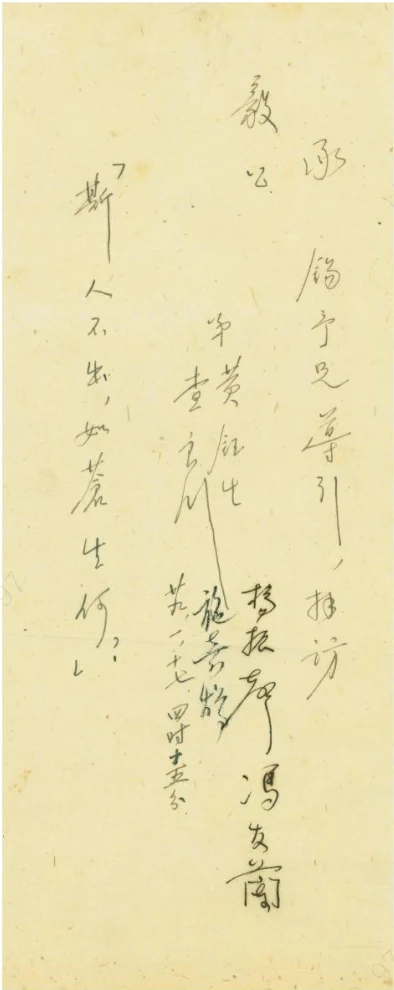
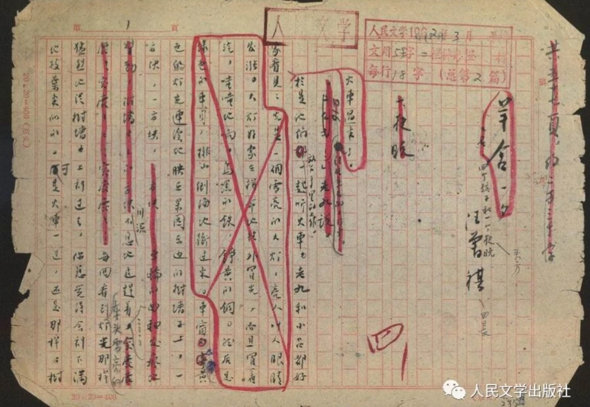

<!doctype html><html lang="zh-CN"><head><meta charset="UTF-8"><meta name="viewport" content="width=device-width,initial-scale=1"><link rel="preload" as="image" href="assets/war-aircraft-alpha.png"><link rel="preload" as="image" href="assets/war-smoke-alpha.png"><title>足迹与远方 · 寻根</title><style>.photo-convergence[data-v-6c93c4c9]{position:absolute;top:0;right:0;bottom:0;left:0;z-index:2;pointer-events:none;overflow:hidden}.photo-convergence>img[data-v-6c93c4c9]{position:absolute;width:clamp(95px,15vw,230px);height:clamp(70px,11vw,170px);object-fit:contain;background:#c2ad86;padding:5px;border:1px solid #d0b78966;box-shadow:0 12px 28px #0008;will-change:transform,opacity;transform-origin:center}.memory-light[data-v-6c93c4c9]{position:absolute;width:48vw;height:32vh;background:radial-gradient(ellipse,#f7d39577,#cf913b24 23%,transparent 66%);filter:blur(8px);will-change:transform,opacity}.memory-light i[data-v-6c93c4c9]{position:absolute;left:9%;right:9%;top:49%;height:3px;background:linear-gradient(90deg,transparent,#ffe6ad,transparent);box-shadow:0 0 18px 5px #e1b36066;border-radius:50%}.achievement-transition[data-v-cb2b22c2]{display:grid;grid-template-rows:auto minmax(0,1fr) auto;padding:0;gap:0}.achievement-breadcrumb[data-v-cb2b22c2]{position:absolute;left:3%;right:6%;top:29px;display:flex;align-items:center;gap:23px;z-index:3;font-family:KaiTi,STKaiti,serif;font-size:18px;letter-spacing:2px;color:#d2b480}.achievement-breadcrumb[data-v-cb2b22c2]:after{content:"";position:absolute;top:38px;left:-3.2vw;width:38vw;height:1px;background:linear-gradient(90deg,#c09d5f80,transparent)}.achievement-breadcrumb i[data-v-cb2b22c2]{font-style:normal;color:#9d825e}.achievement-heading[data-v-cb2b22c2]{grid-row:1;align-self:start;padding:80px 6% 24px;margin:0;position:relative;z-index:2}.achievement-heading>span[data-v-cb2b22c2]{font-family:KaiTi,STKaiti,serif;font-size:clamp(12px,1.45vw,20px);letter-spacing:.2em;color:#d4bb8e}.achievement-heading h2[data-v-cb2b22c2]{font-family:STKaiti,KaiTi,serif;font-size:clamp(45px,6.4vw,88px);font-weight:500;line-height:1.17;letter-spacing:.07em;margin:12px 0 9px;color:#f0d6a1}.achievement-heading-caption[data-v-cb2b22c2]{display:flex;align-items:center;gap:22px;font-family:KaiTi,STKaiti,serif;color:#d7bd8e}.achievement-heading-caption p[data-v-cb2b22c2]{flex:none;margin:0;font-size:clamp(12px,1.35vw,19px);line-height:1.6;letter-spacing:3px}.achievement-heading-caption i[data-v-cb2b22c2]{height:1px;flex:1;background:linear-gradient(90deg,#c7a76d,#a5855055)}.achievement-heading-caption time[data-v-cb2b22c2]{font-family:Times New Roman,serif;font-size:clamp(15px,1.6vw,23px);white-space:nowrap;color:#e0bf84}.film-viewport[data-v-cb2b22c2]{grid-row:2;align-self:center}.film-photo[data-v-cb2b22c2]{height:clamp(150px,32.5vh,390px)}.achievement-close[data-v-cb2b22c2]{z-index:6}.achievement-music[data-v-cb2b22c2]{grid-row:3;position:relative;inset:auto;align-self:end;margin:18px 3% 0;padding:17px 0 19px;min-height:100px;display:grid;grid-template-columns:auto 1fr;grid-template-rows:auto auto;align-items:center;gap:6px 20px;border-top:1px solid #b4955f88;z-index:8;font-family:KaiTi,STKaiti,serif}.achievement-music>button[data-v-cb2b22c2]:first-child{grid-row:1;grid-column:1;border-color:#b9965b8c;background:#18110b70;font-size:17px;padding:10px 24px;border-radius:28px}.achievement-music .achievement-continue[data-v-cb2b22c2]{grid-column:2;grid-row:1;justify-self:end;padding:7px 0;border:0;border-radius:0;background:none;font-size:clamp(18px,1.7vw,24px);color:#ead4a6;letter-spacing:1px}.achievement-continue span[data-v-cb2b22c2]{margin-left:13px}.achievement-continue[data-v-cb2b22c2]:disabled{opacity:.5;cursor:default}.achievement-music a[data-v-cb2b22c2]{grid-row:2;grid-column:2;justify-self:end;max-width:none;font-family:Times New Roman,KaiTi,serif;font-size:12px;color:#b79a6e}.is-merging .achievement-breadcrumb[data-v-cb2b22c2],.is-merging .achievement-music[data-v-cb2b22c2]{opacity:0;pointer-events:none;transition:opacity .6s ease}@media (max-height:800px){.achievement-breadcrumb[data-v-cb2b22c2]{top:20px;font-size:15px}.achievement-breadcrumb[data-v-cb2b22c2]:after{top:29px}.achievement-heading[data-v-cb2b22c2]{padding-top:60px;padding-bottom:15px}.achievement-heading h2[data-v-cb2b22c2]{font-size:clamp(36px,5.2vw,68px);margin:8px 0}.achievement-heading-caption p[data-v-cb2b22c2]{font-size:13px}.film-photo[data-v-cb2b22c2]{height:25.5vh}.achievement-music[data-v-cb2b22c2]{min-height:82px;margin-top:10px;padding:11px 0}.achievement-music>button[data-v-cb2b22c2]:first-child{font-size:14px;padding:8px 19px}}@media (max-width:700px){.achievement-breadcrumb[data-v-cb2b22c2]{left:5%;top:23px;gap:12px;font-size:13px;letter-spacing:1px}.achievement-heading[data-v-cb2b22c2]{padding:73px 6% 20px}.achievement-heading h2[data-v-cb2b22c2]{font-size:46px}.achievement-heading>span[data-v-cb2b22c2]{font-size:11px;letter-spacing:.12em}.achievement-heading-caption[data-v-cb2b22c2]{gap:10px;flex-wrap:wrap}.achievement-heading-caption p[data-v-cb2b22c2]{font-size:11px;letter-spacing:1px;width:100%}.achievement-heading-caption i[data-v-cb2b22c2]{min-width:60%}.achievement-heading-caption time[data-v-cb2b22c2]{font-size:15px}.film-photo[data-v-cb2b22c2]{height:29vh}.achievement-music[data-v-cb2b22c2]{margin:12px 4% 0;gap:7px 12px}.achievement-music>button[data-v-cb2b22c2]:first-child{padding:8px 12px;font-size:13px}.achievement-music .achievement-continue[data-v-cb2b22c2]{font-size:17px}.achievement-music a[data-v-cb2b22c2]{grid-column:1/-1;font-size:10px}}.industrial-railway[data-v-2d019b83]{position:absolute;top:0;right:0;bottom:0;left:0;pointer-events:none;--rail-rust:#a54d2b;--rail-amber:#efb16c}.industrial-viewport[data-v-2d019b83]{position:absolute;left:var(--industrial-sidebar-width,23.9641%);right:0;top:var(--industrial-header-height,6.81399%);bottom:var(--industrial-footer-height,6.07735%);overflow:hidden;isolation:isolate;background:#171512;opacity:0;transition:opacity 1.15s ease}.is-settled .industrial-viewport[data-v-2d019b83]{opacity:1}.industrial-camera[data-v-2d019b83]{position:absolute;top:0;right:0;bottom:0;left:0;transform:none}.industrial-panorama[data-v-2d019b83]{display:block;width:100%;height:100%;overflow:visible}.railway-bed[data-v-2d019b83]{fill:none;stroke:#4c2418;stroke-width:4;opacity:.6;pointer-events:none}.railway-line[data-v-2d019b83]{fill:none;stroke:var(--rail-amber);stroke-width:1.15;opacity:.75;pointer-events:none}.railway-click-line[data-v-2d019b83]{fill:none;stroke:transparent;stroke-width:35;pointer-events:stroke;cursor:pointer;outline:none}.railway-click-line[data-v-2d019b83]:focus-visible{stroke:#efb16c88;stroke-width:9}.railway-train[data-v-2d019b83]{opacity:1;pointer-events:none}.railway-coupler[data-v-2d019b83]{stroke:#25190e;stroke-width:2.5;stroke-linecap:round;pointer-events:none}.railway-locomotive[data-v-2d019b83],.railway-wagon[data-v-2d019b83]{will-change:transform}.industrial-steam-puff[data-v-2d019b83]{fill:#ccc9c0;opacity:0;transform-origin:-78px -83px;animation:industrial-steam-2d019b83 3.5s ease-out infinite;animation-delay:var(--puff-delay);pointer-events:none}.is-parked .industrial-steam-puff[data-v-2d019b83]{animation-duration:5.1s;fill:#bcbab3}@keyframes industrial-steam-2d019b83{0%{opacity:0;transform:translate(0) scale(.65)}12%{opacity:.33}65%{opacity:.15}to{opacity:0;transform:translate(49px,-46px) scale(2.9)}}.industrial-stations[data-v-2d019b83],.railway-overlay[data-v-2d019b83]{opacity:1}.industrial-station[data-v-2d019b83]{outline:none;cursor:pointer;pointer-events:all;touch-action:manipulation}.station-hit[data-v-2d019b83]{fill:transparent}.station-marker-halo[data-v-2d019b83]{fill:#752a1c;stroke:#cf6e49;stroke-width:1.5}.station-marker[data-v-2d019b83]{fill:#faf1dd;stroke:#e58c58;stroke-width:2}.station-nameplate[data-v-2d019b83]{fill:#702617;stroke:#b56845;stroke-width:1.5}.industrial-station text[data-v-2d019b83]{fill:#fff4e1;font-family:Industrial UI Sans,Microsoft YaHei,Noto Sans SC,sans-serif;font-weight:700;font-size:23px;letter-spacing:.6px;pointer-events:none}.industrial-station .station-number[data-v-2d019b83]{font-size:20px;font-weight:600;letter-spacing:0;font-variant-numeric:tabular-nums}.station-code-divider[data-v-2d019b83]{stroke:#e1bea387;stroke-width:1;pointer-events:none}.industrial-station .station-region[data-v-2d019b83]{font-size:22px;font-weight:600;letter-spacing:.8px}.industrial-station:hover .station-nameplate[data-v-2d019b83],.industrial-station:focus-visible .station-nameplate[data-v-2d019b83]{fill:#8b351f;stroke:#ffdba0;stroke-width:2.2}.industrial-station:hover .station-marker-halo[data-v-2d019b83],.industrial-station:focus-visible .station-marker-halo[data-v-2d019b83]{stroke:#ffdda7;stroke-width:3}.is-travelling .railway-click-line[data-v-2d019b83],.is-travelling .industrial-station[data-v-2d019b83]{cursor:progress}.is-paused .industrial-steam-puff[data-v-2d019b83]{animation-play-state:paused}.industrial-journey-status[data-v-2d019b83]{position:absolute;width:1px;height:1px;margin:-1px;overflow:hidden;clip:rect(0,0,0,0);white-space:nowrap}.industrial-mobile-stations[data-v-2d019b83]{display:none}@media (max-width:760px){.industrial-viewport[data-v-2d019b83]{left:var(--industrial-sidebar-width,30%);top:var(--industrial-header-height,8%);bottom:var(--industrial-footer-height,10%)}.railway-click-line[data-v-2d019b83]{stroke-width:48}.industrial-station text[data-v-2d019b83]{font-size:25px}.station-nameplate[data-v-2d019b83]{stroke-width:2}}@media (max-width:700px){.industrial-stations[data-v-2d019b83]{visibility:hidden;pointer-events:none}.industrial-mobile-stations[data-v-2d019b83]{position:absolute;top:0;right:0;bottom:0;left:0;display:block;pointer-events:none}.industrial-mobile-stations button[data-v-2d019b83]{position:absolute;transform:translate(-10%,-110%);pointer-events:auto;min-height:36px;padding:5px 7px;white-space:nowrap;background:#702617ed;border:1px solid #c08052;border-radius:2px;color:#fff4e1;font:700 12px/1.4 Industrial UI Sans,Microsoft YaHei,sans-serif;box-shadow:0 2px 6px #27120b44}.industrial-mobile-stations button span[data-v-2d019b83]{font-family:Industrial UI Sans,Microsoft YaHei,sans-serif;font-weight:600;font-variant-numeric:tabular-nums;margin-right:5px;padding-right:5px;border-right:1px solid #e1bea387}.industrial-mobile-stations button[data-v-2d019b83]:disabled{cursor:progress}}@media (prefers-reduced-motion:reduce){.industrial-camera[data-v-2d019b83],.industrial-viewport[data-v-2d019b83],.industrial-stations[data-v-2d019b83],.railway-overlay[data-v-2d019b83],.railway-train[data-v-2d019b83]{transition-duration:.2s;transition-delay:0s}.industrial-steam-puff[data-v-2d019b83]{animation:none}}.cinematic-air-raid[data-v-b6bfced3]{position:absolute;top:0;right:0;bottom:0;left:0;width:100%;height:100%;pointer-events:none;opacity:1;transition:opacity .4s ease;contain:strict}.cinematic-air-raid.is-paused[data-v-b6bfced3]{opacity:0}.air-raid-particles[data-v-b6bfced3]{position:absolute;top:0;right:0;bottom:0;left:0;width:100%;height:100%;pointer-events:none}.air-raid-plane[data-v-b6bfced3]{position:absolute;opacity:0;transform-origin:50% 50%;will-change:transform;pointer-events:none;object-fit:contain}@media (prefers-reduced-motion:reduce){.cinematic-air-raid[data-v-b6bfced3]{display:none}}.narrative-map[data-v-a890a90b]{position:absolute;top:0;right:0;bottom:0;left:0;overflow:hidden;color:#eed4a1;background:#17140f;font-family:"Explore Guide Serif","Noto Serif SC",SimSun,serif}.scroll-world[data-v-a890a90b]{position:absolute;top:0;right:0;bottom:0;left:0;transform-origin:50% 50%;transition:transform 3.2s cubic-bezier(.3,0,.2,1);will-change:transform}.scroll-scenery[data-v-a890a90b]{position:absolute;top:0;right:0;bottom:0;left:0;opacity:0;transition:opacity 1.8s ease}.is-ready .scroll-scenery[data-v-a890a90b]{opacity:1}.scroll-scenery>img[data-v-a890a90b]{display:block;width:100%;height:100%;object-fit:fill}.scroll-breath[data-v-a890a90b]{position:absolute;top:8%;right:10%;bottom:12%;left:30%;background:radial-gradient(ellipse at 52% 40%,#f9d9a30c,transparent 68%);animation:scroll-atmosphere-a890a90b 12s ease-in-out infinite alternate;pointer-events:none}.scroll-guide[data-v-a890a90b]{position:absolute;left:3.46%;top:13.95%;width:30%;max-width:440px;padding-left:26px;opacity:0;transition:opacity 1s 1s ease;text-shadow:0 2px 8px #090805}.is-ready .scroll-guide[data-v-a890a90b]{opacity:1}.scroll-guide[data-v-a890a90b]:before{content:"";position:absolute;top:0;left:0;width:1px;height:calc(100% - 45px);background:#bd9555}.scroll-eyebrow[data-v-a890a90b]{margin:0 0 11px;font-size:clamp(12px,1.4vw,19px);line-height:1.4;letter-spacing:1px}.scroll-guide h2[data-v-a890a90b]{font-size:clamp(28px,3.35vw,46px);font-weight:400;line-height:1.25;letter-spacing:2px;margin:0 0 33px;white-space:nowrap}.scroll-guide ol[data-v-a890a90b]{list-style:none;padding:0;margin:0}.scroll-guide li[data-v-a890a90b]{position:relative;display:flex;align-items:baseline;gap:15px;min-height:76px}.scroll-guide li[data-v-a890a90b]:before{content:"";position:absolute;left:-32px;top:11px;width:12px;height:12px;border:1px solid #e9c076;border-radius:50%;background:#2b2113;box-shadow:0 0 6px #e0ac4444}.scroll-step-number[data-v-a890a90b]{font:27px Times New Roman,serif;color:#edc988}.scroll-guide h3[data-v-a890a90b]{margin:0;font-size:21px;line-height:1.4;font-weight:400;white-space:nowrap}.scroll-guide li p[data-v-a890a90b]{font-size:14px;margin:3px 0 0;line-height:1.5;color:#d0bf9a;white-space:nowrap}.scroll-footnote[data-v-a890a90b]{position:relative;font-size:15px;line-height:1.6;color:#bfae8f;margin:7px 0 0;padding-top:15px;white-space:nowrap}.scroll-footnote[data-v-a890a90b]:before{content:"";position:absolute;top:0;left:0;width:36px;height:1px;background:#c4a76c}.scroll-routes[data-v-a890a90b]{position:absolute;top:0;right:0;bottom:0;left:0;width:100%;height:100%;opacity:0;transition:opacity 1.8s 1.2s ease}.is-ready .scroll-routes[data-v-a890a90b],.is-ready .scroll-nodes[data-v-a890a90b]{opacity:1}.scroll-route-haze[data-v-a890a90b]{fill:none;stroke:#eab765;stroke-width:6;opacity:.18}.scroll-route-core[data-v-a890a90b]{fill:none;stroke:#f2c77f;stroke-width:1.6;opacity:.95}.scroll-route-dust[data-v-a890a90b]{fill:none;stroke:#ffe2a4;stroke-width:2.5;stroke-dasharray:.4 12 1.5 15;opacity:.65}.scroll-route-target[data-v-a890a90b]{fill:none;stroke:transparent;stroke-width:24;pointer-events:stroke;cursor:pointer;vector-effect:non-scaling-stroke}.scroll-nodes[data-v-a890a90b]{position:absolute;top:0;right:0;bottom:0;left:0;pointer-events:none;opacity:0;transition:opacity 1.8s 1.2s ease}.scroll-city[data-v-a890a90b]{position:absolute;display:block;width:32px;height:32px;padding:0;transform:translate(-50%,-50%);background:none;border:0;color:#f0d3a0;pointer-events:auto;outline-offset:10px;cursor:pointer}.scroll-node-ring[data-v-a890a90b]{position:absolute;top:0;right:0;bottom:0;left:0;border:1px solid #ffe3a1;border-radius:50%;background:radial-gradient(circle,#fff8d9 0 24%,#ffe4a6 25% 31%,#dc9f4e88 33% 47%,#fff0bd 49% 52%,#b6752d55 55% 65%,transparent 70%);box-shadow:0 0 18px 5px #eabd7577}.scroll-node-ring[data-v-a890a90b]:after{content:"";position:absolute;top:-7px;right:-7px;bottom:-7px;left:-7px;border:1px solid #f4cc8d70;border-radius:50%;animation:scroll-node-breathe-a890a90b 4.5s ease-in-out infinite alternate}.scroll-city-name[data-v-a890a90b]{position:absolute;left:calc(100% + 12px);top:50%;transform:translateY(-50%);font-size:clamp(23px,2.6vw,37px);line-height:1.1;white-space:nowrap;text-shadow:0 2px 9px #1b0e04}.scroll-city--kunming[data-v-a890a90b]{width:43px;height:43px;pointer-events:none;cursor:default}.scroll-city--kunming .scroll-city-name[data-v-a890a90b]{font-size:clamp(30px,3.5vw,48px);left:calc(100% + 17px)}.scroll-invitations[data-v-a890a90b]{position:absolute;top:0;right:0;bottom:0;left:0;pointer-events:none;opacity:0;transition:opacity 1.8s 1.2s ease}.is-ready .scroll-invitations[data-v-a890a90b]{opacity:1}.scroll-invitation[data-v-a890a90b]{position:absolute;transform:translate(-50%,-100%);display:flex;flex-direction:column;align-items:flex-start;gap:5px;padding:8px 17px 10px;border:1px solid #bd9451;border-radius:8px;background:#261f14f0;box-shadow:0 3px 8px #0005;pointer-events:auto;color:#ebca91;font:inherit;white-space:nowrap;text-align:left;isolation:isolate}.scroll-invitation[data-v-a890a90b]:after{content:"";position:absolute;bottom:-12px;left:34px;width:17px;height:17px;transform:skewY(-35deg);background:#261f14;border-right:1px solid #bd9451;border-bottom:1px solid #bd9451;z-index:-1}.scroll-invitation strong[data-v-a890a90b]{font-size:21px;font-weight:400;letter-spacing:1px}.scroll-invitation>span[data-v-a890a90b]{font-size:14px;line-height:1.4}.scroll-read-badge[data-v-a890a90b]{display:inline-block;margin-left:10px;padding:1px 5px;border:1px solid #aa8c5866;border-radius:2px;font:11px SimSun,serif;letter-spacing:0;color:#c9b58f;vertical-align:middle}.scroll-read-progress[data-v-a890a90b]{margin:8px 0 0;color:#bfae8f;font-size:12px;letter-spacing:1px}.scroll-read-progress span[data-v-a890a90b]{margin-left:9px;font-family:Georgia,serif;font-variant-numeric:tabular-nums}.scroll-invitation.is-read[data-v-a890a90b]{border-color:#9d8658}.closing-landscape-shade[data-v-a890a90b]{position:absolute;top:0;right:0;bottom:0;left:0;background:#080b0c;opacity:0;transition:opacity 1.6s ease;pointer-events:none}.is-closing .closing-landscape-shade[data-v-a890a90b]{opacity:.46}.closing-route-field[data-v-a890a90b]{position:absolute;top:0;right:0;bottom:0;left:0;width:100%;height:100%;pointer-events:none}.closing-flow-haze[data-v-a890a90b]{fill:none;stroke:#e9b25f;stroke-width:13;opacity:.16}.closing-flow-line[data-v-a890a90b]{fill:none;stroke:#ffda91;stroke-width:2.4;stroke-dasharray:1000;stroke-dashoffset:1000;opacity:.94}.closing-kunming-glow[data-v-a890a90b]{opacity:0;transform-origin:598px 843px;transition:opacity .85s ease,transform 1.4s cubic-bezier(.22,.61,.36,1)}.narrative-map[data-ending=gathering] .closing-kunming-glow[data-v-a890a90b]{animation:closing-light-arrival-a890a90b 4.5s ease both}.narrative-map[data-ending=glow] .closing-kunming-glow[data-v-a890a90b],.narrative-map[data-ending=blackout] .closing-kunming-glow[data-v-a890a90b]{opacity:1;transform:scale(1.25)}.closing-arrival-rings[data-v-a890a90b]{fill:none;stroke:#ffdf9b;stroke-width:1;opacity:.6;transform-origin:598px 843px}.narrative-map[data-ending=glow] .closing-arrival-rings[data-v-a890a90b]{animation:closing-ring-spread-a890a90b 1.6s ease-out both}@keyframes closing-light-arrival-a890a90b{0%,35%{opacity:0;transform:scale(.5)}68%{opacity:.3}to{opacity:.72;transform:scale(1)}}@keyframes closing-ring-spread-a890a90b{0%{opacity:.7;transform:scale(.65)}to{opacity:0;transform:scale(2.35)}}.scroll-invitation[data-v-a890a90b]:hover,.scroll-invitation[data-v-a890a90b]:focus-visible{background:#493322;border-color:#f1cb88;color:#fff0c4}.is-focused:not(.is-returning) .scroll-guide[data-v-a890a90b]{opacity:0;transition:opacity 1.4s ease}.is-closing .scroll-guide[data-v-a890a90b]{opacity:0;transition:opacity 1.3s ease}.is-focused:not(.is-returning) .scroll-routes[data-v-a890a90b],.is-focused:not(.is-returning) .scroll-nodes[data-v-a890a90b]{opacity:0;transition:opacity 2.2s .15s ease;pointer-events:none}.is-focused:not(.is-returning) .scroll-route-target[data-v-a890a90b]{pointer-events:none}.is-focused:not(.is-returning) .scroll-invitations[data-v-a890a90b]{opacity:0;transition:none;visibility:hidden}.is-closing .scroll-invitations[data-v-a890a90b]{opacity:0;visibility:hidden;transition:opacity 1.3s ease,visibility 0s 1.3s}.is-returning .scroll-routes[data-v-a890a90b],.is-returning .scroll-nodes[data-v-a890a90b],.is-returning .scroll-invitations[data-v-a890a90b]{opacity:1;visibility:visible;transition:opacity 1.1s 1.8s ease}.is-returning .scroll-guide[data-v-a890a90b]{opacity:1;transition:opacity .7s 2.5s ease}.is-closing .scroll-routes[data-v-a890a90b]{opacity:.14;transition:opacity 3.8s ease;pointer-events:none}.is-closing .scroll-route-target[data-v-a890a90b]{pointer-events:none}.is-closing .scroll-traveller[data-v-a890a90b]{opacity:0;transition:opacity .65s ease}.is-closing .scroll-nodes[data-v-a890a90b]{opacity:.65;transition:opacity 3s ease}.is-closing .scroll-node-ring[data-v-a890a90b]{opacity:0;transition:opacity 2s ease;box-shadow:none}.is-closing .scroll-node-ring[data-v-a890a90b]:after{animation:none}.is-closing .scroll-breath[data-v-a890a90b]{animation:none;opacity:0;transition:opacity 2s ease}.narrative-map[data-ending=fading] .scroll-routes[data-v-a890a90b],.narrative-map[data-ending=quiet] .scroll-routes[data-v-a890a90b]{opacity:0;transition:opacity 3.2s ease}.scroll-focus-shade[data-v-a890a90b]{position:absolute;top:0;right:0;bottom:0;left:0;opacity:0;background:#110e09eb;transition:opacity 1.7s .15s ease;pointer-events:none}.scroll-focus-shade.is-shown[data-v-a890a90b]{opacity:1;transition:opacity 2.65s .15s ease}.scroll-city-focus[data-v-a890a90b]{position:absolute;top:0;right:0;bottom:0;left:0;opacity:0;visibility:hidden;transition:opacity .7s ease,visibility 0s .7s;pointer-events:none;will-change:opacity}.scroll-city-focus.is-shown[data-v-a890a90b]{opacity:1;visibility:visible;transition:opacity 1.85s .85s ease,visibility 0s}.scroll-city-photo[data-v-a890a90b]{position:absolute;top:8%;right:9%;bottom:12%;left:9%;margin:0;display:flex;flex-direction:column;align-items:center;justify-content:center;opacity:0;visibility:hidden;text-align:center}.scroll-city-photo.is-active[data-v-a890a90b]{opacity:1;visibility:inherit}.scroll-city-photo h2[data-v-a890a90b]{margin:0 0 22px;font-size:clamp(32px,3.8vw,52px);line-height:1.2;font-weight:400;letter-spacing:12px;padding-left:12px;color:#f4d9a8;text-shadow:0 2px 12px #0008}.scroll-photo-mount[data-v-a890a90b]{display:flex;align-items:center;justify-content:center;max-width:100%;padding:10px;background:#d8c7a5;border:1px solid #aa8a54;box-shadow:0 10px 35px #0008}.scroll-photo-mount img[data-v-a890a90b]{display:block;width:auto;height:auto;max-width:min(70vw,820px);max-height:48vh;object-fit:contain}.scroll-city-photo figcaption[data-v-a890a90b]{margin-top:17px;max-width:100%;font-size:15px;line-height:1.6;color:#e3cda5}.scroll-city-photo figcaption small[data-v-a890a90b]{display:block;margin-top:5px;font-family:Georgia,SimSun,serif;font-size:11px;line-height:1.6;color:#c2b394}@media (max-width:700px){.scroll-city-photo[data-v-a890a90b]{top:10%;right:5%;bottom:13%;left:5%}.scroll-city-photo h2[data-v-a890a90b]{font-size:32px;margin-bottom:18px}.scroll-photo-mount[data-v-a890a90b]{padding:7px}.scroll-photo-mount img[data-v-a890a90b]{max-width:80vw;max-height:43vh}.scroll-city-photo figcaption[data-v-a890a90b]{font-size:12px}.scroll-city-photo figcaption small[data-v-a890a90b]{font-size:10px}}.is-focused .scroll-node-ring[data-v-a890a90b]:after,.is-paused .scroll-node-ring[data-v-a890a90b]:after,.is-focused .scroll-route-dust[data-v-a890a90b],.is-paused .scroll-route-dust[data-v-a890a90b],.is-focused .scroll-breath[data-v-a890a90b],.is-paused .scroll-breath[data-v-a890a90b]{animation-play-state:paused}@keyframes scroll-node-breathe-a890a90b{0%{opacity:.5}to{opacity:1}}@keyframes scroll-atmosphere-a890a90b{0%{opacity:.25}to{opacity:.85}}@media (max-height:850px) and (min-width:701px){.scroll-guide[data-v-a890a90b]{top:14.2%}.scroll-guide h2[data-v-a890a90b]{font-size:clamp(26px,3vw,40px);margin-bottom:20px}.scroll-guide li[data-v-a890a90b]{min-height:58px}.scroll-guide h3[data-v-a890a90b]{font-size:18px}.scroll-guide li p[data-v-a890a90b],.scroll-footnote[data-v-a890a90b]{font-size:12px}.scroll-step-number[data-v-a890a90b]{font-size:23px}.scroll-city[data-v-a890a90b]{width:25px;height:25px}.scroll-invitation[data-v-a890a90b]{padding:6px 12px 8px}.scroll-invitation strong[data-v-a890a90b]{font-size:18px}.scroll-invitation>span[data-v-a890a90b]{font-size:12px}}@media (max-width:700px){.scroll-guide[data-v-a890a90b]{left:4%;top:14.2%;width:48%;padding-left:13px}.scroll-eyebrow[data-v-a890a90b]{font-size:10px;margin-bottom:9px}.scroll-guide h2[data-v-a890a90b]{font-size:21px;letter-spacing:0;margin-bottom:20px}.scroll-guide li[data-v-a890a90b]{gap:7px;min-height:57px}.scroll-guide li[data-v-a890a90b]:before{left:-17px;top:8px;width:7px;height:7px}.scroll-step-number[data-v-a890a90b]{font-size:18px}.scroll-guide h3[data-v-a890a90b]{font-size:13px}.scroll-guide li p[data-v-a890a90b]{font-size:9px}.scroll-footnote[data-v-a890a90b]{font-size:10px;white-space:normal;padding-top:10px}.scroll-read-progress[data-v-a890a90b]{font-size:9px;margin-top:5px}.scroll-read-badge[data-v-a890a90b]{font-size:8px;margin-left:5px;padding:1px 3px}.scroll-city[data-v-a890a90b]{width:18px;height:18px}.scroll-city-name[data-v-a890a90b]{font-size:20px;left:calc(100% + 5px)}.scroll-city--kunming[data-v-a890a90b]{width:26px;height:26px}.scroll-city--kunming .scroll-city-name[data-v-a890a90b]{font-size:28px;left:calc(100% + 8px)}.scroll-invitation[data-v-a890a90b]{padding:6px 9px 7px;border-radius:5px;gap:3px}.scroll-invitation strong[data-v-a890a90b]{font-size:12px}.scroll-invitation>span[data-v-a890a90b]{font-size:9px}.scroll-invitation[data-v-a890a90b]:after{left:20px;width:11px;height:11px;bottom:-8px}}@media (prefers-reduced-motion:reduce){.scroll-world[data-v-a890a90b],.scroll-scenery[data-v-a890a90b],.scroll-routes[data-v-a890a90b],.scroll-guide[data-v-a890a90b],.scroll-nodes[data-v-a890a90b],.scroll-invitations[data-v-a890a90b],.scroll-city-focus[data-v-a890a90b],.scroll-focus-shade[data-v-a890a90b]{transition:none!important}.scroll-node-ring[data-v-a890a90b]:after,.scroll-route-dust[data-v-a890a90b],.scroll-breath[data-v-a890a90b]{animation:none!important}}.scroll-invitation[data-v-a890a90b]:after{left:32px;bottom:-18px;width:18px;height:18px;border:0;transform:none;clip-path:polygon(0 0,100% 0,0 100%);background:#bd9451;z-index:0}.scroll-invitation[data-v-a890a90b]:before{content:"";position:absolute;left:33px;bottom:-15px;width:15px;height:15px;clip-path:polygon(0 0,100% 0,0 100%);background:#261f14;z-index:1;pointer-events:none}.scroll-node-ring[data-v-a890a90b]{box-shadow:0 0 20px 7px #eabd7588}@media (max-width:700px){.scroll-invitation[data-v-a890a90b]:after{left:20px;bottom:-12px;width:12px;height:12px}.scroll-invitation[data-v-a890a90b]:before{left:21px;bottom:-9px;width:9px;height:9px}.scroll-invitation--shanghai[data-v-a890a90b]{margin-left:-8px}.scroll-city--shanghai .scroll-city-name[data-v-a890a90b]{font-size:16px;left:calc(100% - 2px)}}.coda-archive-backdrop[data-v-f9e6e463]{position:absolute;top:0;right:0;bottom:0;left:0;z-index:-1;overflow:hidden;pointer-events:none;background:#15211c;isolation:isolate}.coda-archive-backdrop[data-v-f9e6e463]:before{content:"";position:absolute;top:0;right:0;bottom:0;left:0;z-index:3;background:linear-gradient(115deg,#090e0bd4,#101a143b 39%,#0f18112b 65%,#08100bbb),radial-gradient(ellipse at 66% 24%,#73806b13,transparent 62%);pointer-events:none}.coda-archive-backdrop[data-v-f9e6e463]:after{content:"";position:absolute;top:0;right:0;bottom:0;left:0;z-index:5;background:url(assets/historical-grain.svg) repeat;opacity:.045;mix-blend-mode:soft-light;pointer-events:none}.archive-wall-light[data-v-f9e6e463]{position:absolute;top:0;right:0;bottom:0;left:0;background:radial-gradient(ellipse at 12% 43%,#34463655,transparent 65%),linear-gradient(180deg,#1f2c2366,#0e171055);box-shadow:inset 0 0 120px #02070459}.archive-school-inscription[data-v-f9e6e463]{position:absolute;left:30.8%;top:13.8%;z-index:1;margin:0;writing-mode:vertical-rl;text-orientation:upright;font-family:KaiTi,STKaiti,"Noto Serif SC",SimSun,serif;font-size:clamp(21px,2.25vw,34px);font-weight:400;line-height:1.4;letter-spacing:.27em;color:#c7b88e;opacity:.13;white-space:nowrap}.archive-leaves[data-v-f9e6e463]{position:absolute;top:0;right:0;bottom:0;left:0;z-index:2;perspective:1100px}.archive-leaf[data-v-f9e6e463]{position:absolute;display:block;object-fit:contain;pointer-events:none;-webkit-user-select:none;user-select:none;filter:grayscale(.24) sepia(.18) saturate(.65) brightness(.82);box-shadow:0 10px 32px #0008;transform-origin:50% 75%}.archive-leaf--diary[data-v-f9e6e463]{left:13.3%;top:59.5%;width:auto;height:34%;max-width:17%;object-fit:contain;opacity:.52;transform:rotate(-17deg) rotateY(-11deg) rotateX(20deg);-webkit-mask-image:linear-gradient(180deg,#000 0%,#000 72%,transparent 100%);mask-image:linear-gradient(180deg,#000 0%,#000 72%,transparent 100%)}.archive-leaf--manuscript[data-v-f9e6e463]{left:-3.2%;top:72%;width:34.5%;height:auto;opacity:.56;transform:rotate(7deg) rotateX(32deg) rotateY(8deg);-webkit-mask-image:linear-gradient(180deg,#000 0%,#000 57%,transparent 100%);mask-image:linear-gradient(180deg,#000 0%,#000 57%,transparent 100%)}.archive-floor-shade[data-v-f9e6e463]{position:absolute;top:0;right:0;bottom:0;left:0;z-index:4;background:linear-gradient(180deg,transparent 63%,#0d171100 76%,#0a130dd1 94%,#0a120f 100%),linear-gradient(90deg,#0b130b55,transparent 33%)}@media (min-aspect-ratio:17/10){.coda-archive-backdrop[data-v-f9e6e463]{-webkit-mask-image:linear-gradient(90deg,transparent,#000 8%,#000 92%,transparent);mask-image:linear-gradient(90deg,transparent,#000 8%,#000 92%,transparent)}.archive-leaf--diary[data-v-f9e6e463]{left:13%;top:57%;height:37%}.archive-leaf--manuscript[data-v-f9e6e463]{top:69%;width:30%}.archive-school-inscription[data-v-f9e6e463]{left:29.5%;font-size:clamp(20px,2vw,32px)}}@media (max-width:700px){.coda-archive-backdrop[data-v-f9e6e463]:before{background:linear-gradient(100deg,#0b130fc9,#0c170e42 70%,#09110cb0)}.archive-school-inscription[data-v-f9e6e463]{left:auto;right:6%;top:10%;font-size:21px;opacity:.08;letter-spacing:.35em}.archive-leaf--diary[data-v-f9e6e463]{left:-2%;top:69%;height:24%;max-width:23%;opacity:.16}.archive-leaf--manuscript[data-v-f9e6e463]{left:-13%;top:80%;width:57%;opacity:.15}.archive-floor-shade[data-v-f9e6e463]{background:linear-gradient(180deg,transparent 63%,#0b140d70 87%,#0a130fee 100%)}.coda-archive-backdrop[data-v-f9e6e463]:after{opacity:.03}}@font-face{font-family:"Coda Exhibition Serif";src:url(assets/coda-exhibition-serif.woff2) format("woff2");font-weight:400 600;font-style:normal;font-display:swap}.chapter-coda[data-v-f540a206]{--coda-paper:#ece3cf;--coda-ink:#33392f;--coda-muted:#626451;--coda-accent:#943e30;position:fixed;top:0;right:0;bottom:0;left:0;z-index:18;isolation:isolate;overflow:hidden;outline:0;background:#101a14;color:#ebe2c9;font-family:"Coda Exhibition Serif","Noto Serif SC",Songti SC,SimSun,serif;animation:coda-enter-f540a206 1.1s ease both;color-scheme:dark}.chapter-coda[data-v-f540a206]:before{content:"";position:absolute;top:0;right:0;bottom:0;left:0;z-index:-2;background:radial-gradient(ellipse at 50% 38%,#29352944,transparent 75%)}.chapter-coda[data-v-f540a206]:after{content:"";position:absolute;top:0;right:0;bottom:0;left:0;z-index:-1;background:url(assets/historical-grain.svg);opacity:.04;mix-blend-mode:soft-light;pointer-events:none}.coda-layout[data-v-f540a206]{--coda-unit:min(1vw,1.333333svh);position:absolute;top:0;right:0;bottom:0;left:0;width:100%;height:100%;container-type:size;isolation:isolate}.coda-heading[data-v-f540a206]{position:absolute;left:4.76%;right:4.76%;top:2.35%;height:4.02%;display:flex;align-items:flex-start;justify-content:space-between;padding-bottom:calc(var(--coda-unit) * .9);border-bottom:1px solid #c3b79588;line-height:1.2;color:#e1d9c2}.coda-wordmark[data-v-f540a206]{display:flex;align-items:center;gap:calc(var(--coda-unit) * 2);font-size:calc(var(--coda-unit) * 1.8);letter-spacing:.045em;white-space:nowrap}.coda-wordmark i[data-v-f540a206]{height:calc(var(--coda-unit) * 1.2);width:1px;background:#a99f8380}.coda-wordmark>span[data-v-f540a206]{font-size:calc(var(--coda-unit) * 1.1);letter-spacing:.12em}.coda-skip[data-v-f540a206]{position:absolute;right:0;top:-calc(var(--coda-unit) * .45);min-height:44px;padding:calc(var(--coda-unit) * .4) 0;font:inherit;font-size:calc(var(--coda-unit) * 1.1);letter-spacing:.06em;color:#cfc7ad;transition:opacity .5s,color .2s}.coda-skip>span[data-v-f540a206]{margin-left:calc(var(--coda-unit) * 1)}.coda-skip[data-v-f540a206]:hover{color:#fff}.coda-skip.is-finished[data-v-f540a206]{opacity:0;visibility:hidden;pointer-events:none}.coda-header-end[data-v-f540a206]{font-size:calc(var(--coda-unit) * 1.12);letter-spacing:.08em;padding-top:calc(var(--coda-unit) * .12);animation:coda-enter-f540a206 .7s ease both}.coda-composition[data-v-f540a206]{position:absolute;top:0;right:0;bottom:0;left:0;pointer-events:none}.coda-reflection[data-v-f540a206]{position:absolute;left:4.76%;top:13.95%;width:32.6%;opacity:0;transition:opacity 1.2s ease}.coda-reflection-kicker[data-v-f540a206]{display:flex;align-items:center;gap:calc(var(--coda-unit) * 1.35);margin:0 0 calc(var(--coda-unit) * 1.65);font-family:Microsoft YaHei UI,Microsoft YaHei,sans-serif;font-size:calc(var(--coda-unit) * 1.42);letter-spacing:.06em;line-height:1.5;color:#ae4b38;white-space:nowrap}.coda-reflection-kicker i[data-v-f540a206]{display:block;width:calc(var(--coda-unit) * 2.1);height:calc(var(--coda-unit) * .25);background:#a74633;flex:none}.coda-reflection h2[data-v-f540a206]{font-family:inherit;font-size:calc(var(--coda-unit) * 5.7);font-weight:400;letter-spacing:-.025em;line-height:1.16;min-height:calc(var(--coda-unit) * 15.6);margin:0;color:#f1e8cd}.coda-reflection h2>span[data-v-f540a206]{display:block;white-space:nowrap}.coda-copy[data-v-f540a206]{margin-top:calc(var(--coda-unit) * 1.65);font-size:calc(var(--coda-unit) * 1.94);line-height:1.58;letter-spacing:.015em;color:#dfd5b9;opacity:0;transition:opacity 1s ease}.coda-copy p[data-v-f540a206]{margin:0}.coda-copy .coda-meaning[data-v-f540a206]{position:relative;margin-top:calc(var(--coda-unit) * 4.6);font-size:calc(var(--coda-unit) * 1.42);line-height:1.65;letter-spacing:.01em;white-space:nowrap}.coda-meaning[data-v-f540a206]:before{content:"";position:absolute;left:calc(var(--coda-unit) * .45);top:-calc(var(--coda-unit) * 3.2);height:calc(var(--coda-unit) * 1.8);width:1px;background:#b4aa8b90}.coda-histories[data-v-f540a206]{position:absolute;left:37.45%;right:3.45%;top:10.15%;bottom:14.35%;min-width:0;min-height:0;isolation:isolate}.coda-history[data-v-f540a206]{position:absolute;left:0;width:100%;margin:0;min-width:0;isolation:isolate;opacity:0;transition:opacity 1.45s ease}.coda-history--memory[data-v-f540a206]{top:0;height:49.25%}.coda-history--industry[data-v-f540a206]{top:51.7%;height:48.3%;width:96.3%}.coda-history--memory[data-v-f540a206]:before{content:"";position:absolute;left:5%;right:4%;top:-2.7%;height:105%;z-index:-2;background:#c6bfaa url(assets/archive-wang-7.webp) right top / cover no-repeat;filter:sepia(.22) brightness(.72);opacity:.68;transform:rotate(-3deg);box-shadow:0 calc(var(--coda-unit) * .4) calc(var(--coda-unit) * 1) #0005}.coda-history--industry[data-v-f540a206]:before{content:"";position:absolute;right:-3.2%;top:12%;bottom:7%;width:8%;background:#8a3c2b url(assets/historical-grain.svg) center / 256px;z-index:-1;transform:rotate(2.2deg);opacity:.9}.coda-image-window[data-v-f540a206],.coda-history figcaption[data-v-f540a206]{position:absolute;background:var(--coda-paper) url(assets/archive-paper.svg) center / 450px;box-shadow:calc(var(--coda-unit) * .15) calc(var(--coda-unit) * .5) calc(var(--coda-unit) * 1.2) #0005}.coda-image-window[data-v-f540a206]{left:0;top:0;width:72.7%;height:100%;padding:calc(var(--coda-unit) * 1.1);overflow:hidden;transform:rotate(.55deg);z-index:2}.coda-image-window[data-v-f540a206]:after{content:"";position:absolute;inset:calc(var(--coda-unit) * .8);border:1px solid #645b4628;pointer-events:none}.coda-scene-image[data-v-f540a206]{display:block;width:100%;height:100%;filter:grayscale(1);object-fit:contain;background:#d3cbb8}.coda-history figcaption[data-v-f540a206]{left:72.5%;top:5%;width:27.5%;height:92%;padding:calc(var(--coda-unit) * 1.85) calc(var(--coda-unit) * 1.3) calc(var(--coda-unit) * 1.7) calc(var(--coda-unit) * 2);color:var(--coda-ink);transform:rotate(-.2deg);z-index:1}.coda-archive-index[data-v-f540a206]{font:italic calc(var(--coda-unit) * 2.95)/1 Georgia,"Times New Roman",serif;color:#aea58c;opacity:.65;margin:0 0 calc(var(--coda-unit) * 1.15)}.coda-period[data-v-f540a206]{margin:0;line-height:1.3;display:block;font-size:calc(var(--coda-unit) * 1.42);font-weight:400}.coda-period>span[data-v-f540a206]{display:block;position:relative;font-family:Georgia,Times New Roman,serif;font-size:calc(var(--coda-unit) * 1.48);font-variant-numeric:tabular-nums;letter-spacing:.015em;white-space:nowrap}.coda-period>span[data-v-f540a206]:after{content:"";display:block;margin:calc(var(--coda-unit) * .85) 0 calc(var(--coda-unit) * 1);width:calc(var(--coda-unit) * 1.4);height:1px;background:#69654f90}.coda-period>small[data-v-f540a206]{display:block;font:inherit;letter-spacing:.015em}.coda-history h3[data-v-f540a206]{font:400 calc(var(--coda-unit) * 2.7)/1.3 "Coda Exhibition Serif","Noto Serif SC","SimSun",serif;letter-spacing:.02em;margin:calc(var(--coda-unit) * .55) 0 calc(var(--coda-unit) * .9);color:#973d2e;white-space:nowrap}.coda-photo-note[data-v-f540a206]{font-family:Microsoft YaHei UI,Microsoft YaHei,sans-serif;font-size:calc(var(--coda-unit) * 1.14);line-height:1.5;letter-spacing:0;margin:0;color:#4a4c3c}.coda-source[data-v-f540a206]{font-family:Microsoft YaHei UI,Microsoft YaHei,sans-serif;font-size:calc(var(--coda-unit) * 1);line-height:1.5;letter-spacing:0;margin:calc(var(--coda-unit) * 1) 0 0;color:#6c6b58;overflow-wrap:break-word}.coda-history--industry .coda-image-window[data-v-f540a206]{left:auto;right:0;top:0;width:75.3%;height:100%;transform:rotate(-.55deg);padding:calc(var(--coda-unit) * 1)}.coda-industry-image[data-v-f540a206]{object-fit:cover;object-position:50% 100%}.coda-history--industry figcaption[data-v-f540a206]{left:0;top:4%;width:28%;height:86%;padding:calc(var(--coda-unit) * 1.7) calc(var(--coda-unit) * 1.6) calc(var(--coda-unit) * 1.5) calc(var(--coda-unit) * 1.8);transform:rotate(.1deg)}.coda-history--industry .coda-photo-note[data-v-f540a206]{font-size:calc(var(--coda-unit) * 1.1)}.coda-history--industry .coda-source[data-v-f540a206]{font-size:calc(var(--coda-unit) * .98);white-space:nowrap}.is-ready .coda-history--memory[data-v-f540a206],.is-ready .coda-reflection[data-v-f540a206],.chapter-coda[data-stage=echo] .coda-history--industry[data-v-f540a206],.chapter-coda[data-stage=reflection] .coda-history--industry[data-v-f540a206],.coda-complete .coda-history--industry[data-v-f540a206],.chapter-coda[data-stage=reflection] .coda-copy[data-v-f540a206],.coda-complete .coda-copy[data-v-f540a206]{opacity:1}.coda-footer[data-v-f540a206]{position:absolute;left:4.76%;right:4.76%;top:87.65%;bottom:2.8%;border-top:1px solid #b7ab87a6;opacity:0;transition:opacity 1.2s ease}.chapter-coda[data-stage=reflection] .coda-footer[data-v-f540a206],.coda-complete .coda-footer[data-v-f540a206]{opacity:1}.coda-question-block[data-v-f540a206]{position:absolute;left:0;top:calc(var(--coda-unit) * 1.4);display:flex;align-items:center;gap:calc(var(--coda-unit) * 2.1)}.coda-next-label[data-v-f540a206]{display:block;padding-right:calc(var(--coda-unit) * 1.8);border-right:1px solid #b1a48290;font-size:calc(var(--coda-unit) * 1.45);letter-spacing:.08em;line-height:1.2;color:#ad4937;white-space:nowrap}.coda-question[data-v-f540a206]{font-size:calc(var(--coda-unit) * 2.1);line-height:1.4;letter-spacing:.015em;margin:0;color:#eee3c5;white-space:nowrap}.coda-endmark[data-v-f540a206]{position:absolute;left:0;bottom:0;font-size:calc(var(--coda-unit) * 1);letter-spacing:.08em;color:#b6a887;opacity:0;transition:opacity .7s ease}.coda-actions[data-v-f540a206]{position:absolute;right:0;top:calc(var(--coda-unit) * 1.5);display:flex;align-items:center;gap:calc(var(--coda-unit) * 3.8);opacity:0;transition:opacity .7s ease}.coda-complete .coda-actions[data-v-f540a206],.coda-complete .coda-endmark[data-v-f540a206]{opacity:1}.coda-actions button[data-v-f540a206]{min-height:44px;min-width:44px;font-family:inherit;font-size:calc(var(--coda-unit) * 1.42);letter-spacing:.02em;transition:color .2s,background .2s,border-color .2s}.coda-actions button[data-v-f540a206]:disabled{pointer-events:none}.coda-return[data-v-f540a206]{color:#d0c3a1;padding:calc(var(--coda-unit) * .7) 0}.coda-return[data-v-f540a206]:hover{color:#fff1d4}.coda-next[data-v-f540a206]{display:flex;align-items:center;justify-content:space-between;gap:calc(var(--coda-unit) * 1.6);width:calc(var(--coda-unit) * 15.2);min-height:max(44px,calc(var(--coda-unit) * 4.1))!important;border:1px solid #c18360;padding:calc(var(--coda-unit) * .8) calc(var(--coda-unit) * 1.7) calc(var(--coda-unit) * .85);color:#f1e4c8;background:#8b3526;box-shadow:inset 0 0 0 1px #b36a452b;white-space:nowrap;flex:none}.coda-next>span[data-v-f540a206]{font:calc(var(--coda-unit) * 1.9)/1 Arial,sans-serif;transition:transform .2s;flex:none}.coda-next[data-v-f540a206]:hover{background:#a34934;border-color:#d6a57e;color:#fff6de}.coda-next:hover>span[data-v-f540a206]{transform:translate(2px,-2px)}.chapter-coda button[data-v-f540a206]:focus-visible{outline:2px solid #e7c38c;outline-offset:5px}@keyframes coda-enter-f540a206{0%{opacity:0}to{opacity:1}}@media (min-width:761px) and (min-aspect-ratio:3/2){.coda-histories[data-v-f540a206]{left:auto;right:4.76%;width:min(58.8vw,96svh)}.coda-history--memory .coda-image-window[data-v-f540a206]{width:66%}.coda-history--memory figcaption[data-v-f540a206]{left:65.8%;width:34.2%}.coda-reflection[data-v-f540a206]{width:34%}.coda-footer[data-v-f540a206]{display:grid;grid-template-columns:minmax(0,1fr) auto;column-gap:32px;align-items:start}.coda-question-block[data-v-f540a206]{position:relative;top:auto;left:auto;margin-top:calc(var(--coda-unit) * 1.4);min-width:0}.coda-actions[data-v-f540a206]{position:relative;right:auto;top:auto;margin-top:calc(var(--coda-unit) * 1.5);grid-column:2;white-space:nowrap}.coda-endmark[data-v-f540a206]{bottom:0}}@media (max-width:760px){.coda-layout[data-v-f540a206]{left:0;top:0;width:100vw;height:100svh;transform:none}.coda-heading[data-v-f540a206]{left:5%;right:5%;top:2.7%;height:4.3%;padding-bottom:12px;align-items:center}.coda-wordmark[data-v-f540a206]{font-size:15px;gap:12px;letter-spacing:0}.coda-wordmark i[data-v-f540a206]{height:12px}.coda-wordmark>span[data-v-f540a206]{font-size:9px;letter-spacing:0}.coda-header-end[data-v-f540a206]{font-size:9px;padding-top:0;letter-spacing:.02em}.coda-skip[data-v-f540a206]{font-size:10px;top:-8px;min-height:44px}.coda-skip>span[data-v-f540a206]{margin-left:6px}.coda-composition[data-v-f540a206]{top:10%;right:5%;bottom:19%;left:5%;display:grid;grid-template-rows:auto minmax(0,1fr);gap:20px}.coda-reflection[data-v-f540a206]{position:relative;left:auto;top:auto;width:100%}.coda-reflection-kicker[data-v-f540a206]{font-size:10px;gap:9px;line-height:1.4;margin-bottom:12px;letter-spacing:.04em}.coda-reflection-kicker i[data-v-f540a206]{width:21px;height:2px}.coda-reflection h2[data-v-f540a206]{font-size:33px;line-height:1.22;letter-spacing:-.04em}.coda-reflection h2>span[data-v-f540a206]{display:inline}.coda-copy[data-v-f540a206]{display:flex;gap:18px;align-items:center;margin-top:12px;font-size:12px;line-height:1.7;letter-spacing:0}.coda-copy p[data-v-f540a206]:first-child{flex:none}.coda-copy .coda-meaning[data-v-f540a206]{font-size:10px;line-height:1.8;margin:0;max-width:45%;white-space:normal}.coda-meaning[data-v-f540a206]:before{display:none}.coda-histories[data-v-f540a206]{position:relative;left:auto;right:auto;top:auto;bottom:auto;display:grid;grid-template-rows:1fr 1fr;gap:16px;width:100%;height:100%;min-height:0}.coda-history[data-v-f540a206]{position:relative;left:auto;top:auto;width:100%;height:100%;min-height:0}.coda-history--memory[data-v-f540a206]:before{left:4%;top:-1.5%;height:100%;transform:rotate(-2deg)}.coda-history--industry[data-v-f540a206]:before{right:-1%;width:7%;top:11%;bottom:8%}.coda-image-window[data-v-f540a206]{width:66%;height:97%;top:0;padding:6px;transform:rotate(.5deg)}.coda-image-window[data-v-f540a206]:after{top:4px;right:4px;bottom:4px;left:4px}.coda-history figcaption[data-v-f540a206]{left:64.5%;top:3%;width:35.5%;height:94%;padding:11px 8px 9px 12px;transform:rotate(-.2deg)}.coda-archive-index[data-v-f540a206]{font-size:23px;margin-bottom:7px}.coda-period[data-v-f540a206]{font-size:10px;line-height:1.25}.coda-period>span[data-v-f540a206]{font-size:11px;letter-spacing:0}.coda-period>span[data-v-f540a206]:after{margin:6px 0 7px;width:12px}.coda-history h3[data-v-f540a206]{font-size:21px;line-height:1.2;letter-spacing:0;margin:5px 0 7px}.coda-photo-note[data-v-f540a206]{font-size:9px;line-height:1.5}.coda-source[data-v-f540a206]{font-size:8px;line-height:1.4;margin-top:7px}.coda-history--industry .coda-image-window[data-v-f540a206]{width:68%;height:98%;padding:6px;transform:rotate(-.5deg)}.coda-history--industry figcaption[data-v-f540a206]{left:0;top:4%;width:35.5%;height:90%;padding:10px 11px 9px}.coda-history--industry .coda-photo-note[data-v-f540a206]{font-size:9px}.coda-history--industry .coda-source[data-v-f540a206]{font-size:8px;white-space:normal}.coda-footer[data-v-f540a206]{left:5%;right:5%;top:83.5%;bottom:2.5%}.coda-question-block[data-v-f540a206]{top:12px;left:0;gap:12px;align-items:baseline}.coda-next-label[data-v-f540a206]{font-size:10px;line-height:1.4;padding-right:12px;letter-spacing:0}.coda-question[data-v-f540a206]{font-size:16px;line-height:1.6;white-space:normal;letter-spacing:0}.coda-endmark[data-v-f540a206]{font-size:9px;bottom:14px;letter-spacing:.04em}.coda-actions[data-v-f540a206]{top:auto;bottom:0;right:0;gap:22px}.coda-actions button[data-v-f540a206]{font-size:12px}.coda-next[data-v-f540a206]{width:145px;min-height:44px!important;padding:10px 14px 10px 19px;gap:17px}.coda-next>span[data-v-f540a206]{font-size:19px}}@media (max-width:760px) and (max-height:730px){.coda-heading[data-v-f540a206]{top:2.2%;height:4.5%}.coda-composition[data-v-f540a206]{top:9.5%;bottom:19%;gap:15px}.coda-reflection-kicker[data-v-f540a206]{font-size:9px;margin-bottom:10px}.coda-reflection h2[data-v-f540a206]{font-size:30px}.coda-copy[data-v-f540a206]{font-size:11px;margin-top:9px;gap:16px}.coda-copy .coda-meaning[data-v-f540a206]{font-size:9px}.coda-histories[data-v-f540a206]{gap:14px}.coda-history figcaption[data-v-f540a206]{padding:8px 7px 6px 10px}.coda-archive-index[data-v-f540a206]{font-size:20px;margin-bottom:5px}.coda-period[data-v-f540a206]{font-size:9px}.coda-period>span[data-v-f540a206]{font-size:10px}.coda-period>span[data-v-f540a206]:after{margin:4px 0 5px}.coda-history h3[data-v-f540a206]{font-size:19px;margin:4px 0 5px}.coda-photo-note[data-v-f540a206],.coda-history--industry .coda-photo-note[data-v-f540a206]{font-size:8px;line-height:1.35}.coda-source[data-v-f540a206],.coda-history--industry .coda-source[data-v-f540a206]{font-size:7px;line-height:1.35;margin-top:5px}.coda-history--industry figcaption[data-v-f540a206]{padding:8px 9px}.coda-footer[data-v-f540a206]{top:83.5%;bottom:2.2%}.coda-question-block[data-v-f540a206]{top:9px;gap:10px}.coda-question[data-v-f540a206]{font-size:15px}.coda-next-label[data-v-f540a206]{font-size:9px;padding-right:10px}.coda-actions[data-v-f540a206]{gap:18px}.coda-actions button[data-v-f540a206]{font-size:11px}.coda-next[data-v-f540a206]{width:135px}.coda-endmark[data-v-f540a206]{font-size:8px}}@media (prefers-reduced-motion:reduce){.chapter-coda[data-v-f540a206],.chapter-coda[data-v-f540a206] *{animation:none!important;transition:none!important}}.navigation.chapter-actions[data-v-cebd38ef]{position:relative;min-height:105px;padding:26px 0 12px;border-top:1px solid #dfcba033}.map-exploration-label[data-v-cebd38ef]{display:flex;align-self:stretch;margin-right:auto;padding-left:clamp(0px,4vw,64px);font-family:Songti SC,SimSun,serif;white-space:nowrap;pointer-events:none}.map-exploration-step[data-v-cebd38ef]{position:relative;display:flex;align-items:baseline;gap:clamp(10px,1.5vw,22px);min-width:clamp(245px,20.25vw,360px);color:#898a80}.map-exploration-step.is-current[data-v-cebd38ef]{color:#e7cba1}.map-exploration-step>i[data-v-cebd38ef]{position:absolute;top:-34px;left:0;width:14px;height:14px;border-radius:50%;background:#898a80}.map-exploration-step.is-current>i[data-v-cebd38ef]{background:#fff0c7;box-shadow:0 0 12px 4px #ebbd7066}.map-exploration-step strong[data-v-cebd38ef]{font-size:clamp(24px,2.7vw,40px);font-weight:400;line-height:1.2;letter-spacing:1px;font-variant-numeric:tabular-nums}.map-exploration-step>span[data-v-cebd38ef]{font-size:clamp(11px,1.4vw,20px);letter-spacing:1px}.next-button[data-v-cebd38ef]:disabled{cursor:wait;opacity:.48;pointer-events:none}@media (max-width:700px){.navigation.chapter-actions[data-v-cebd38ef]{flex-wrap:wrap;gap:8px;min-height:112px;padding:20px 0 12px}.map-exploration-label[data-v-cebd38ef]{width:100%;padding-left:0}.map-exploration-step[data-v-cebd38ef]{gap:8px;min-width:0;flex:1}.map-exploration-step>i[data-v-cebd38ef]{top:-26px;width:10px;height:10px}.map-exploration-step>span[data-v-cebd38ef]{letter-spacing:0}.chapter-actions .next-button[data-v-cebd38ef]{margin-left:auto}}:root{font-family:DengXian,Microsoft YaHei UI,PingFang SC,sans-serif;color:#dfdbd2;background:#181917;font-synthesis:none;font-weight:400;font-size:14px;-webkit-font-smoothing:antialiased}*{box-sizing:border-box}body{margin:0}button,a,input{-webkit-tap-highlight-color:transparent}button{font:inherit;border:0;background:none;color:inherit;cursor:pointer}button:focus-visible,a:focus-visible{outline:1px solid #dbb994;outline-offset:5px}button:hover{color:#fff}a{color:inherit;text-decoration:none}.exhibition{max-width:2100px;margin:auto;padding:0 4.2%;min-height:100vh;display:flex;flex-direction:column}.masthead{height:80px;display:flex;align-items:center;justify-content:space-between;border-bottom:1px solid #ffffff14}.wordmark{font-size:21px;font-weight:600;letter-spacing:1px}.header-right{display:flex;align-items:center;gap:24px;font-size:12px;color:#8f9389}.header-right button{padding:8px 0}.header-right button span{margin-left:14px}.header-separator{height:13px;width:1px;background:#454640}.chapter-heading{display:flex;justify-content:space-between;align-items:center;padding:31px 0 29px}.chapter-title{display:flex;align-items:baseline;gap:24px}.chapter-index{font-size:12px;font-weight:600;color:#a89780;align-self:center;border:1px solid #6c675955;width:29px;height:29px;display:grid;place-items:center}.chapter-title h1{font-size:34px;font-weight:500;letter-spacing:2px;line-height:1.1;margin:0}.chapter-subtitle{font-size:13px;color:#989b91}.chapter-context{text-align:right;font-size:12px}.chapter-context p{margin:0 0 8px;color:#c3c4ba}.chapter-context>span{font-size:11px;color:#81877b}.context-dot{margin:0 12px}.stage-shell{position:relative;margin:auto 0}.map-stage{position:relative}.map-stage>svg{display:block;width:100%;height:auto;aspect-ratio:1983 / 793;background:#100e0d}.map-stage image{transition:filter .3s}.map-caption{height:40px;display:flex;align-items:center;justify-content:space-between;font-size:10px;color:#85887e}.province-labels text{fill:#e1c99c;opacity:.88;font-family:DengXian,Microsoft YaHei UI,sans-serif;font-size:23px;font-weight:600;font-style:italic;text-anchor:middle;paint-order:stroke;stroke:#302116;stroke-width:3px;stroke-linejoin:round;pointer-events:none}.city text{font-family:DengXian,Microsoft YaHei UI,sans-serif;font-size:26px;font-weight:600;fill:#fff0c9;paint-order:stroke;stroke:#35231b;stroke-width:5px;stroke-linejoin:round}.city-ring{fill:#ffc78b25;stroke:#f0c48c;stroke-width:1.2}.city.interactive{cursor:pointer;outline:0}.city.interactive:hover .city-ring,.city:focus .city-ring{fill:#ffdfba66;stroke:#fff;stroke-width:3}.ray-soft{fill:none;stroke:#efd393;stroke-width:7;opacity:.45;filter:url(#glow);pointer-events:none}.ray-line{fill:none;stroke:#ffe7b8;stroke-width:1.5;opacity:.8;pointer-events:none}.ray-travel{fill:none;stroke:#d6ffff;stroke-width:2.7;stroke-dasharray:30 170;animation:flow 3s linear infinite;pointer-events:none}.moving-dot{pointer-events:none}.route-target{fill:none;stroke:transparent;stroke-width:27;cursor:pointer}.route-target:focus{stroke:#f2e2bb44;outline:none}.confluence{pointer-events:none}.paused .ray-travel{animation-play-state:paused}@keyframes flow{to{stroke-dashoffset:-200}}.navigation{border-top:1px solid #ffffff14;min-height:103px;display:flex;align-items:center;justify-content:space-between;gap:25px}.navigation nav{display:flex;align-items:center;gap:26px}.navigation nav button{display:flex;align-items:baseline;gap:12px;color:#777c71;padding:17px 0;position:relative}.navigation nav button.active{color:#e9e4d8}.navigation nav button.active:after{content:"";position:absolute;width:16px;height:2px;background:#b8a582;bottom:7px;left:0}.navigation nav button span:first-child{font-size:19px;font-weight:500;font-variant-numeric:tabular-nums}.navigation nav button span:last-child{font-size:12px}.timeline-dash{width:25px;height:1px;background:#4c5045}.playback{display:flex;gap:23px;font-size:11px;color:#9b9e94;align-items:center}.playback label{display:flex;gap:12px;align-items:center}.playback input{accent-color:#aa9b7f;width:70px;height:2px}.next-button{font-size:12px;border-bottom:1px solid #97917c;padding:11px 0;min-width:117px;text-align:left}.next-button span{float:right;margin-left:25px}.ending-note{position:absolute;right:25px;bottom:65px;padding:17px 22px;background:#181915e8;border-left:2px solid #aa956c}.ending-note span{font-size:10px;color:#a9a48f}.ending-note p{font-size:16px;margin:8px 0 0}.archive{padding:0;border:0;width:min(1050px,92vw);max-height:90vh;background:#e9e5dc;color:#272b25;box-shadow:0 35px 140px #0009}.archive::backdrop{background:#090b08cf;-webkit-backdrop-filter:blur(7px);backdrop-filter:blur(7px)}.archive-heading{height:63px;padding:0 28px;display:flex;align-items:center;justify-content:space-between;border-bottom:1px solid #40473822;font-size:12px;font-weight:600}.archive-location{font-weight:400;margin-left:22px;color:#727868}.icon-button{font-size:26px;line-height:1;padding:8px}.dark:hover{color:#837458}.archive-body{display:grid;grid-template-columns:43% 57%}.archive figure{margin:0;padding:28px 0 28px 28px}.archive-photo{background:#d4d1c8;display:flex;align-items:center;justify-content:center;height:365px}.archive-photo img{width:100%;height:100%;object-fit:contain;filter:grayscale(1) sepia(.12)}.archive figcaption{display:flex;justify-content:space-between;font-size:10px;color:#777c6f;margin-top:13px}.archive-conversation{padding:30px 34px}.person-title{display:flex;align-items:baseline;gap:18px}.person-title h2{margin:0;font-size:29px;font-weight:500}.person-title p{margin:0;color:#79806e;font-size:11px}.answer{font-size:17px;font-weight:400;line-height:1.95;min-height:148px;margin:21px 0 24px}.questions{border-top:1px solid #61695133;padding-top:16px}.question-heading{font-size:10px;color:#7e8376}.questions button{display:grid;grid-template-columns:25px 1fr 15px;gap:8px;text-align:left;width:100%;padding:12px 0;border-bottom:1px solid #61695122;font-size:12px;line-height:1.6;color:#6c7264}.questions button.selected{color:#222c20}.questions button:hover{color:#1c2519}.question-number{font-size:10px;color:#8a8f81;font-variant-numeric:tabular-nums;padding-top:2px}.question-mark{text-align:right;color:#948970}.archive-foot{display:flex;align-items:center;justify-content:space-between;gap:20px;padding:19px 28px;border-top:1px solid #61695122}.archive-foot p{margin:0;font-size:10px;color:#868a7e;line-height:1.7}.archive-foot button{font-size:12px;white-space:nowrap;color:#414a36}.archive-foot button span{margin-left:20px}.era-transition{position:fixed;top:0;right:0;bottom:0;left:0;background:#181917;display:flex;flex-direction:column;align-items:center;justify-content:center;z-index:10}.era-transition>span{font-size:12px;color:#949c88}.era-transition strong{font-size:80px;font-weight:400;line-height:1;margin:25px 0}.era-transition p{font-size:13px;color:#babfaf;margin:0}.era-enter-active,.era-leave-active,.ending-enter-active,.ending-leave-active{transition:opacity .4s}.era-enter-from,.era-leave-to,.ending-enter-from,.ending-leave-to{opacity:0}@media (min-width:1700px){.chapter-heading{padding:45px 0}.masthead{height:90px}.navigation{min-height:120px}}@media (max-width:1000px){.navigation{flex-wrap:wrap;padding:20px 0;gap:18px}.navigation nav{gap:20px}.playback{margin-left:auto}.next-button{min-width:100px}.person-title{display:block}.person-title p{margin-top:8px}.archive-conversation{padding:25px}.answer{font-size:16px}.chapter-heading{padding:25px 0}.chapter-subtitle{display:none}}@media (max-width:650px){.exhibition{padding:0 5%}.masthead{height:65px}.wordmark{font-size:18px}.header-right{gap:15px}.chapter-title{gap:13px}.chapter-title h1{font-size:29px}.chapter-context p{display:none}.chapter-context>span{font-size:10px}.stage-shell{margin:auto -3%}.map-stage>svg{min-height:280px;object-fit:contain}.province-labels text{font-size:27px}.map-caption{font-size:9px;padding:0 3%}.navigation{margin-top:25px}.navigation nav{width:100%;justify-content:center}.playback{margin-left:0;gap:15px}.archive-body{display:block}.archive figure{padding:22px 22px 0}.archive-photo{height:230px}.archive-conversation{padding:23px}.person-title{display:flex}.person-title h2{font-size:25px}.person-title p{font-size:10px}.answer{min-height:0;margin:18px 0}.archive-foot{padding:17px 22px}.archive-foot p{font-size:9px}.ending-note{right:10px;bottom:43px;padding:12px}.ending-note p{font-size:12px}.archive-heading{padding:0 22px}}.kunming-node text{font-size:31px;fill:#fff5d5}.kunming-node .city-ring{stroke:#ffe1a6;stroke-width:2;fill:#c98e4033}.kunming-node .city-core{filter:drop-shadow(0 0 7px #f6d591)}.map-stage.is-closing image{transition:filter 8s ease}.is-closing .migration-routes{pointer-events:none;animation:coda-routes 10.5s linear forwards}.is-closing .moving-dot{visibility:hidden}.is-closing .ray-travel{animation:none;opacity:.5}.is-closing .confluence{animation:coda-base .8s ease-out forwards}.is-closing .city-ring,.is-closing .city-core{animation:coda-sources 1.8s ease-out forwards}.arrival-dot{pointer-events:none}.farewell-glow{pointer-events:none;animation:coda-center 10.5s ease-in-out forwards}.is-closing[data-ending=quiet] .arrival-dots{visibility:hidden}.closing-controls{opacity:.45;transition:opacity .4s}.sr-only{position:absolute;width:1px;height:1px;padding:0;margin:-1px;overflow:hidden;clip:rect(0,0,0,0);white-space:nowrap;border:0}@keyframes coda-routes{0%,48%{opacity:1}60%{opacity:.6}72%,to{opacity:0}}@keyframes coda-base{to{opacity:0}}@keyframes coda-sources{to{opacity:0}}@keyframes coda-center{0%{opacity:.45}35%{opacity:.75}57%,65%{opacity:1}71%{opacity:.8}86%{opacity:.35}to{opacity:0}}.center-light{animation:center-growth 10.5s ease-in-out forwards;transform-origin:0 0}@keyframes center-growth{0%{transform:scale(.55)}57%,71%{transform:scale(1.15)}to{transform:scale(.25)}}.map-stage>svg.wartime-opening{background:#100907}.wartime-opening .map-plate,.wartime-opening .province-labels,.wartime-opening .cities-reveal,.wartime-opening .routes-reveal,.wartime-opening .center-reveal{opacity:0}.wartime-opening.map-ready .map-plate{animation:wartime-map-in 5s cubic-bezier(.2,.5,.3,1) both}.wartime-opening.map-ready .province-labels{animation:wartime-details-in 2s 2.4s ease both}.wartime-opening.map-ready .cities-reveal{animation:wartime-details-in 2s 3s ease both}.wartime-opening.map-ready .routes-reveal{animation:wartime-details-in 2.5s 3.6s ease both}.wartime-opening.map-ready .center-reveal{animation:wartime-details-in 2.5s 3.8s ease both}.paused .wartime-opening .map-plate,.paused .wartime-opening .province-labels,.paused .wartime-opening .cities-reveal,.paused .wartime-opening .routes-reveal,.paused .wartime-opening .center-reveal{animation-play-state:paused}@keyframes wartime-map-in{0%{opacity:0;filter:brightness(.2)}30%{opacity:.3;filter:brightness(.55)}to{opacity:1;filter:brightness(1)}}@keyframes wartime-details-in{0%{opacity:0}to{opacity:1}}.archive{width:min(1180px,94vw)}.archive-body{grid-template-columns:40% 60%}.archive-conversation{display:flex;flex-direction:column}.questions{display:grid;grid-template-columns:repeat(3,minmax(0,1fr));gap:14px 12px;margin-top:auto}.question-heading{grid-column:1 / -1}.questions button{position:relative;display:flex;flex-direction:column;align-items:flex-start;gap:9px;min-height:134px;height:100%;padding:14px 12px;border:1px solid #84856b55;border-radius:12px 12px 3px;background:#f2eee5;line-height:1.7}.questions button:after{content:"";position:absolute;right:13px;bottom:-6px;width:10px;height:10px;background:inherit;border-right:1px solid #84856b55;border-bottom:1px solid #84856b55;transform:rotate(45deg)}.questions button.selected{border-color:#93856b;background:#dfd6c5}.question-mark{position:absolute;top:12px;right:12px}.historical-archive .archive-photo{padding:10px;background:#c8beaa;border:1px solid #a99b83;box-shadow:0 2px 8px #42342120}.historical-archive .answer{min-height:170px}.industrial-map .ray-line{stroke:#f6aa50;stroke-width:5;stroke-linecap:square;filter:url(#rough-stroke)}.industrial-map .ray-soft{stroke:#ec762c;stroke-width:13;opacity:.6}.industrial-map .ray-travel{stroke:#ffe2a0;stroke-width:4;stroke-dasharray:55 245;animation-duration:2.1s}.industrial-map .moving-dot ellipse:first-child{fill:#ee842f}.industrial-map .moving-dot ellipse:nth-child(2){fill:#fff0c4;rx:8;ry:3}.industrial-node{fill:#b859234d;stroke:#f1a855;stroke-width:2}.industrial-map .city-core{fill:#ffdc9e}.industrial-map .city text{fill:#ffdba4}.industrial-map .province-labels text{fill:#d9aa77;font-style:normal}.industrial-opening .map-plate{opacity:0}.industrial-opening.map-ready .map-plate{animation:industrial-plate-in 2.2s ease-out both}.industrial-opening.map-ready .industrial-relight{animation:industrial-light-in 3s ease-out both}.industrial-opening.map-ready .routes-reveal{animation:wartime-details-in 1.2s .9s both}.industrial-opening.map-ready .cities-reveal{animation:wartime-details-in .9s .6s both}.paused .industrial-opening .map-plate,.paused .industrial-opening .industrial-relight,.paused .industrial-opening .routes-reveal,.paused .industrial-opening .cities-reveal{animation-play-state:paused}.industrial-exhibition .chapter-index{color:#d49a61;border-color:#a2643b66}.industrial-exhibition .navigation nav button.active:after{background:#e2964c}.industrial-exhibition .next-button{border-color:#d58945}.industrial-exhibition .playback input{accent-color:#ce8a4b}@keyframes industrial-plate-in{0%{opacity:0;filter:brightness(.35)}to{opacity:1;filter:brightness(1)}}@keyframes industrial-light-in{0%{opacity:0}to{opacity:1}}.industrial-archive{background-color:#243b42;background-image:linear-gradient(#c9d5c40c 1px,transparent 1px),linear-gradient(90deg,#c9d5c40c 1px,transparent 1px);background-size:21px 21px;color:#e4e5d5;border:1px solid #79928e66;padding-left:21px;box-shadow:inset 21px 0 #192c32,0 35px 140px #0009}.industrial-archive:before{content:"";position:absolute;left:5px;top:0;bottom:0;width:10px;background:radial-gradient(ellipse at center,#9caaa0 0 25%,#0e2228 30% 48%,transparent 53%) center 9px/10px 35px repeat-y;pointer-events:none}.industrial-archive .archive-heading{border-bottom:1px solid #bccbbb40;color:#efc28b}.industrial-archive .archive-location,.industrial-archive .person-title p,.industrial-archive .question-heading,.industrial-archive figcaption{color:#a9bdb6}.industrial-archive .archive-photo{background:#c7c7b9;padding:8px;border:1px solid #acb4a3;box-shadow:4px 5px #0e252a80}.industrial-archive .answer{color:#e4e5d5;min-height:164px}.blueprint-index{border:1px solid #91a69b70;padding:9px 12px;font-size:11px;color:#e9b676;display:flex;justify-content:space-between;gap:10px;margin-bottom:21px}.blueprint-index span{color:#a4bab0;font-size:10px}.industrial-archive .questions{border-color:#a5b7a144}.industrial-archive .questions button{color:#d2ddd0;background:#2b464b;border-color:#97afa066;border-radius:3px;min-height:134px}.industrial-archive .questions button.selected{color:#fff0ce;background:#45524b;border-color:#d6a668}.industrial-archive .questions button:after{border-color:#97afa066}.industrial-archive .question-number{color:#bda77e}.industrial-archive .question-mark{color:#e2be84}.industrial-archive .archive-foot{border-color:#a5b7a144}.industrial-archive .archive-foot p{color:#9bafa6}.industrial-archive .archive-foot button,.industrial-archive .dark{color:#e2c59c}@media (max-width:650px){.archive-body{grid-template-columns:1fr}.questions{gap:12px 7px}.questions button,.industrial-archive .questions button{font-size:11px;padding:11px 8px;min-height:155px}.industrial-archive{padding-left:16px}.blueprint-index{flex-wrap:wrap}.historical-archive .answer{min-height:0}}:root{font-family:Microsoft YaHei UI,Microsoft YaHei,PingFang SC,sans-serif}.stage-shell{margin:5px 0 30px}.chapter-heading{padding:27px 0 30px}.chapter-context p{margin:0;font-size:12px;color:#a7a99f}.navigation{min-height:87px}.exhibition>div.closing-controls,.exhibition>div:has(>.navigation){margin-top:auto}.chapter-index{border:0;width:auto;color:#7c8175}.chapter-title{gap:19px}.chapter-subtitle{font-size:12px}.map-stage>svg{border:0}.archive{width:min(1080px,92vw);max-height:90vh;background:#edeae2;border:0;box-shadow:0 30px 100px #0008;color:#30342e;padding:0 36px}.archive-heading{height:66px;padding:0;border:0;font-size:11px;font-weight:400;color:#7f8376;letter-spacing:1px}.archive-location{margin-left:15px;color:inherit}.icon-button{font-size:23px;font-weight:300;padding:8px;margin-right:-8px}.archive-body{grid-template-columns:34% minmax(0,1fr);gap:38px;padding:6px 0 8px;align-items:stretch}.archive figure{padding:0;margin:0;align-self:start}.archive-photo,.historical-archive .archive-photo{height:365px;background:#e2dfd6;padding:0;border:0;box-shadow:none}.archive-photo img{object-fit:contain;filter:grayscale(1);width:100%;height:100%}.archive-conversation{padding:3px 0 0;min-width:0;display:flex;flex-direction:column}.person-title{display:block}.person-title h2{font-size:31px;font-weight:500;letter-spacing:1px;line-height:1.2}.person-title p{font-size:11px;color:#8a8d81;margin:11px 0 0;line-height:1.6}.answer,.historical-archive .answer,.industrial-archive .answer{font-size:17px;line-height:1.95;min-height:122px;margin:22px 0 24px;font-weight:400;letter-spacing:.15px}.questions{display:grid;grid-template-columns:repeat(3,minmax(0,1fr));gap:18px;border:0;padding:0;margin-top:auto}.questions button,.industrial-archive .questions button{display:block;position:relative;min-height:98px;height:auto;padding:14px 0 6px;border:0;border-top:1px solid #7379693b;border-radius:0;background:transparent;color:#8d9185;font-size:12px;line-height:1.85;transition:color .2s,border-color .2s;text-align:left;align-self:stretch}.questions button:after,.industrial-archive .questions button:after{display:none}.questions button.selected{background:transparent;border-color:#8f6348;color:#373c31}.questions button:hover{color:#303c29;border-color:#8f6348}.archive-foot{min-height:63px;justify-content:flex-end;padding:14px 0 17px;border:0;gap:0}.archive-foot button{font-size:11px;color:#727866;padding:6px 0}.archive-foot button span{margin-left:13px}.archive-foot button:hover{color:#38462e}.industrial-archive{padding:0 36px;background-color:#243639;background-image:linear-gradient(#c9d5c407 1px,transparent 1px),linear-gradient(90deg,#c9d5c407 1px,transparent 1px);background-size:28px 28px;color:#e4e1d4;border:1px solid #788c7d33;box-shadow:0 30px 100px #0008}.industrial-archive:before{display:none}.industrial-archive .archive-heading{border:0;color:#bda57d}.industrial-archive .archive-photo{height:365px;padding:0;border:0;background:#c8c9bc;box-shadow:none}.industrial-archive .person-title p{color:#99aaa0}.industrial-archive .answer{color:#e0e2d6}.industrial-archive .questions{border:0}.industrial-archive .questions button{color:#90a39a;border-top-color:#adbcab40}.industrial-archive .questions button.selected{background:transparent;border-color:#c39862;color:#f0ddba}.industrial-archive .questions button:hover{color:#f0ddba;border-color:#c39862}.industrial-archive .archive-foot{border:0}.industrial-archive .archive-foot button{color:#aebcab}@media (max-width:800px){.archive{padding:0 25px}.archive-body{grid-template-columns:31% minmax(0,1fr);gap:24px}.archive-photo,.historical-archive .archive-photo,.industrial-archive .archive-photo{height:310px}.person-title h2{font-size:27px}.answer,.historical-archive .answer,.industrial-archive .answer{font-size:15px;min-height:120px}.questions{gap:11px}.questions button,.industrial-archive .questions button{font-size:11px;min-height:106px}.stage-shell{margin:0 0 20px}}@media (max-width:600px){.archive{padding:0 20px;width:94vw}.archive-heading{height:51px}.archive-body{display:flex;flex-direction:column;gap:20px}.archive figure{align-self:stretch}.archive-photo,.historical-archive .archive-photo,.industrial-archive .archive-photo{height:210px;background:#dedcd3}.industrial-archive .archive-photo{background:#bbc2b7}.archive-conversation{padding:0}.person-title{display:flex;align-items:baseline;gap:14px}.person-title p{margin:0}.answer,.historical-archive .answer,.industrial-archive .answer{min-height:0;margin:17px 0 21px}.questions button,.industrial-archive .questions button{min-height:95px}.archive-foot{min-height:50px;padding:12px 0}.chapter-context p{display:block;font-size:10px}.navigation nav{width:auto}.navigation{flex-wrap:nowrap;gap:16px}.navigation nav{gap:12px}.navigation nav button{gap:6px}.navigation nav button span:last-child{font-size:10px}.timeline-dash{width:13px}.next-button{font-size:10px;min-width:87px}.next-button span{margin-left:10px}}.exhibition{position:relative;max-width:none;width:100%;height:100svh;min-height:650px;padding:0;overflow:hidden;background:#100c09}.masthead{position:absolute;top:0;left:0;right:0;height:64px;margin:0;padding:0 3%;z-index:2;border:0;background:linear-gradient(#12130ff2,#12130f00)}.wordmark{font-size:19px}.header-right{font-size:11px}.chapter-heading{position:absolute;left:3%;right:3%;top:75px;padding:0;z-index:2;pointer-events:none;text-shadow:0 2px 12px #000}.chapter-title h1{font-size:30px}.chapter-subtitle{display:none}.chapter-index{font-size:10px}.chapter-context p{font-size:11px}.stage-shell{position:absolute;top:0;right:0;bottom:0;left:0;margin:0;width:100%;height:100%}.map-stage{width:100%;height:100%}.map-stage>svg{width:100%;height:100%;aspect-ratio:auto;min-height:0}.map-stage:after{content:"";position:absolute;top:0;right:0;bottom:0;left:0;pointer-events:none;background:linear-gradient(#100d0990,transparent 22%,transparent 80%,#100d09e6)}.exhibition>div:has(>.navigation){position:absolute;bottom:0;left:3%;right:3%;z-index:2;margin:0}.navigation{min-height:76px;border-color:#dfcba020;background:transparent}.navigation nav button{font-size:11px}.ending-note{z-index:3;bottom:110px}.chapter-context{padding:6px 10px;background:#15130d33}.map-stage .province-labels text{font-size:21px}.archive{width:min(1120px,94vw);padding:0;background:#e8e1d1;background-image:repeating-linear-gradient(1deg,#8d795305 0 1px,transparent 1px 4px);border:1px solid #ab987c77;box-shadow:0 35px 120px #000b,inset 0 0 0 5px #ece6d9,inset 0 0 0 6px #a99b7d33}.archive-heading{padding:0 34px;height:66px;border-bottom:1px solid #9e8e6c26;font-family:Microsoft YaHei UI,sans-serif;letter-spacing:2px;color:#8c7757}.archive-body{grid-template-columns:36% 1fr;gap:0;padding:0;margin:0;align-items:stretch}.archive figure{position:relative;align-self:stretch;margin:0;padding:28px;background:#292c26;display:flex;align-items:center;justify-content:center;box-shadow:inset -10px 0 16px #0003;min-height:400px}.archive-photo,.historical-archive .archive-photo{height:auto;max-height:440px;width:100%;padding:7px;background:#eee8d9;border:1px solid #c2b796;box-shadow:0 9px 26px #0006;transform:rotate(-1deg)}.archive-photo img{display:block;width:100%;height:auto;max-height:420px;object-fit:contain;filter:grayscale(1) sepia(.13)}.photo-corner{position:absolute;width:27px;height:27px;border-color:#b0a08280;border-style:solid;pointer-events:none}.photo-corner.top-left{top:17px;left:17px;border-width:1px 0 0 1px}.photo-corner.bottom-right{bottom:17px;right:17px;border-width:0 1px 1px 0}.archive-conversation{position:relative;padding:30px 34px 27px;background:linear-gradient(90deg,#6f5c4115,transparent 4%,transparent)}.person-title{display:block;padding-left:16px;border-left:2px solid #986746}.person-title h2{font-size:33px;font-weight:500;letter-spacing:3px}.person-title p{margin:9px 0 0;color:#8c846f;font-size:11px}.answer-panel{position:relative;padding:0 0 0 16px;margin:25px 0 24px}.opening-quote{position:absolute;left:-7px;top:-12px;color:#a98c5c66;font:56px Georgia,serif;line-height:1}.answer,.historical-archive .answer,.industrial-archive .answer{margin:0;min-height:132px;font-size:17px;line-height:2;letter-spacing:.25px;animation:answer-in .35s ease-out}.questions{gap:10px}.questions button,.industrial-archive .questions button{border:1px solid #a18b642e;border-top:2px solid #a18b6433;background:#f3edde66;padding:12px 10px;min-height:110px;font-size:11px;line-height:1.8;color:#8b8979}.questions button.selected{border-color:#a9894e66;border-top-color:#947042;background:linear-gradient(#d9c9a74d,#e9e0cb55);color:#3e4436}.questions button:hover{border-color:#a9894e66;color:#3e4436}.archive-foot{padding:13px 34px;min-height:52px;border-top:1px solid #9e8e6c26}.archive-foot button{font-size:10px;letter-spacing:1px}.industrial-archive{padding:0;background-color:#25393a;background-image:linear-gradient(#a5b9a70b 1px,transparent 1px),linear-gradient(90deg,#a5b9a70b 1px,transparent 1px);background-size:22px 22px;border-color:#a5b59d55;box-shadow:0 35px 120px #000b,inset 0 0 0 5px #25393a,inset 0 0 0 6px #a6b79833}.industrial-archive .archive-heading{border-bottom:1px solid #a9b5a126;color:#d3b484}.industrial-archive figure{background:#19282a;box-shadow:inset -10px 0 16px #0003}.industrial-archive .archive-photo{height:auto;max-height:440px;padding:7px;background:#d5d6c4;border:1px solid #a6ac92;box-shadow:0 9px 26px #0006;transform:rotate(.7deg)}.industrial-archive .person-title{border-color:#c28b50}.industrial-archive .archive-conversation{background:linear-gradient(90deg,#0002,transparent 4%)}.industrial-archive .questions button{background:#cbd4bc07;border-color:#a9b6a233;color:#a7b5a5}.industrial-archive .questions button.selected{border-color:#cdab6c88;border-top-color:#d2a364;background:#c4a26314;color:#f0ddba}.industrial-archive .opening-quote{color:#b59a6a77}.industrial-archive .archive-foot{border-top:1px solid #a9b5a126}.era-transition{background:radial-gradient(ellipse at center,#32241b 0,#181510 48%,#0c0d0b)}.era-transition:after{content:"";position:absolute;top:0;right:0;bottom:0;left:0;pointer-events:none;background:repeating-linear-gradient(0deg,#d6bd7f03 0 1px,transparent 1px 3px)}.ink-filter{position:absolute;width:0;height:0}.year-composition{position:relative;text-align:center}.year-rule{display:block;width:38px;height:2px;margin:0 auto 27px;background:#8f7350;opacity:0;animation:year-rule-in .6s .15s forwards}.era-transition .typed-year{display:flex;align-items:baseline;justify-content:center;gap:.045em;margin:0;color:#d7c3a0;font-family:SimSun,"Noto Serif CJK SC",serif;font-size:clamp(80px,12vw,165px);font-weight:900;line-height:1.1;letter-spacing:-.025em;filter:url(#rough-year);text-shadow:1px 1px #4a2f1a}.year-letter{display:inline-block;opacity:0;animation:letter-strike .3s var(--letter-delay) steps(2,end) forwards}.year-letter:last-child{font-size:.43em;margin-left:.18em;letter-spacing:0}.era-transition .year-composition p{font-size:12px;letter-spacing:6px;margin:32px 0 0;color:#9b8b70;opacity:0;animation:year-rule-in .7s 2.5s forwards}@keyframes letter-strike{0%{opacity:0;transform:translateY(3px)}50%{opacity:.65;transform:translateY(-1px)}to{opacity:1;transform:translateY(0)}}@keyframes year-rule-in{to{opacity:1}}@keyframes answer-in{0%{opacity:.3;transform:translateY(4px)}to{opacity:1;transform:translateY(0)}}@media (max-width:700px){.exhibition{min-height:530px}.masthead{height:58px}.chapter-heading{top:66px}.chapter-title h1{font-size:25px}.header-right{gap:12px}.navigation{min-height:67px}.archive-heading{height:53px;padding:0 22px}.archive-body{display:block}.archive figure{min-height:0;padding:20px}.archive-photo,.historical-archive .archive-photo,.industrial-archive .archive-photo{width:auto;height:210px;max-width:100%}.archive-photo img{width:auto;height:100%;max-width:100%;object-fit:contain}.archive-conversation{padding:24px 22px}.person-title h2{font-size:28px}.answer-panel{margin:22px 0}.answer,.historical-archive .answer,.industrial-archive .answer{font-size:15px;min-height:0}.questions button,.industrial-archive .questions button{padding:10px 7px;min-height:100px}.archive-foot{padding:12px 22px}.chapter-context{display:none}}.map-stage{overflow:hidden}.map-stage>svg{transform:scaleX(1.04);transform-origin:50% 50%}.map-stage>svg{transform:translateY(2.5%) scale(.94) scaleX(1.04);transform-origin:50% 50%}.has-finale .migration-routes,.has-finale .center-reveal{opacity:0;transition:opacity 1.5s}.has-finale .moving-dot{visibility:hidden}.reunion-trace{fill:none;stroke:#edc57e;stroke-width:1.5;opacity:0;animation:reunion-trace 7s ease forwards}.construction-return .reunion-trace{stroke:#f1a859;stroke-width:2.6}.reunion-halo{animation:reunion-bloom 9s cubic-bezier(.2,.5,.3,1) forwards;transform-box:fill-box;transform-origin:center}@keyframes reunion-trace{0%{opacity:0}18%,65%{opacity:.6}to{opacity:0}}@keyframes reunion-bloom{0%{opacity:0;transform:scale(.08)}35%{opacity:.45;transform:scale(.3)}65%{opacity:.9;transform:scale(.7)}to{opacity:1;transform:scale(1)}}.third-act-entry{position:fixed;top:0;right:0;bottom:0;left:0;z-index:100;background:radial-gradient(ellipse at 50% 65%,#3b2c19,#10110e 70%);display:flex;align-items:center;justify-content:center;flex-direction:column;color:#e8d8b4;animation:third-arrive 1.8s ease both}.third-act-entry>span{font-size:14px;letter-spacing:.5em}.third-act-entry h2{font-family:STKaiti,KaiTi,serif;font-size:clamp(64px,10vw,140px);letter-spacing:.2em;margin:30px 0 15px}.third-act-entry p{font-size:24px;letter-spacing:.5em}.third-act-entry small{color:#9b927e;letter-spacing:.35em}.third-act-entry button{position:absolute;bottom:7%;background:none;border:0;border-bottom:1px solid #645540;color:#c4b596;padding:12px;cursor:pointer}@keyframes third-arrive{0%{opacity:0}to{opacity:1}}@media (prefers-reduced-motion:reduce){.reunion-halo{animation-duration:.01s}.third-act-entry{animation:none}}.era-transition .typed-year{font-family:STKaiti,KaiTi,serif;font-weight:700;letter-spacing:.08em;color:#e8d8b4;filter:none;text-shadow:none}.returning-city{animation:city-return 1.6s ease both}@keyframes city-return{0%{opacity:0}to{opacity:1}}@media (prefers-reduced-motion:reduce){.returning-city{animation:none}}.masthead .wordmark{display:flex;align-items:baseline;gap:14px}.masthead-index{font-size:14px;font-weight:500;color:#ad9874}.masthead .wordmark h1{margin:0;font-size:26px;font-weight:500;letter-spacing:2px;line-height:1.2}.chapter-heading{justify-content:flex-end}.reunion-halo{filter:brightness(.85)}.southwest-achievements{cursor:pointer}.southwest-achievements rect{fill:#17120bc9;stroke:#d1b47b66;stroke-width:1}.southwest-achievements text{font-size:18px;fill:#dfc58f;letter-spacing:1px}.southwest-achievements:hover rect,.southwest-achievements:focus rect{stroke:#ffe2a4}.achievement-transition{position:fixed;top:0;right:0;bottom:0;left:0;z-index:60;overflow:hidden;background:#16130e;color:#e5d6b5;display:flex;flex-direction:column;justify-content:center;padding:5vh 0 4vh;isolation:isolate}.achievement-transition:before{content:"";position:absolute;top:0;right:0;bottom:0;left:0;z-index:-2;background:linear-gradient(#15110ddb,#15100ad9),url(assets/map-boundaries-refined.png) center/cover;opacity:.7}.achievement-rust{position:absolute;top:0;right:0;bottom:0;left:0;z-index:-1;background:radial-gradient(ellipse at 40% 65%,#a04823b0,#421c15cc 60%,#140c0bf0);opacity:var(--era-progress);pointer-events:none}.achievement-heading{padding:0 6vw;margin-bottom:3vh}.achievement-heading>span{font-size:12px;letter-spacing:.24em;color:#af9d7c}.achievement-heading h2{font-family:STKaiti,KaiTi,serif;font-size:clamp(30px,4vw,54px);font-weight:500;letter-spacing:.13em;margin:14px 0 0}.achievement-close{position:absolute;right:3vw;top:3vh;font-size:30px;z-index:3;color:#b8a98e}.film-viewport{width:100%;overflow:hidden;flex:none;-webkit-mask-image:linear-gradient(90deg,transparent,#000 7%,#000 93%,transparent);mask-image:linear-gradient(90deg,transparent,#000 7%,#000 93%,transparent);opacity:0;transition:opacity 1s}.is-ready .film-viewport{opacity:1}.film-track{display:flex;flex-direction:row-reverse;gap:30px;width:max-content;position:relative;padding:22px 0;background:#070807b3;border-top:1px solid #8e764a55;border-bottom:1px solid #8e764a55;will-change:transform}.film-track:before,.film-track:after{content:"";position:absolute;left:0;right:0;height:8px;background:repeating-linear-gradient(90deg,transparent 0 14px,#b8a27d66 14px 24px,transparent 24px 34px)}.film-track:before{top:6px}.film-track:after{bottom:6px}.film-frame{width:clamp(270px,37vw,620px);flex:none;margin:0;opacity:.55;transition:opacity 1.2s}.film-frame.is-current{opacity:1}.film-photo{height:clamp(140px,30vh,360px);position:relative;background:#1b1914}.film-photo img{height:100%;width:100%;object-fit:contain;filter:sepia(.38) saturate(.55);display:block}.film-photo>span{position:absolute;bottom:10px;left:14px;font-size:11px;color:#fff0cf;background:#15130daa;padding:4px 7px}.film-frame figcaption{padding:16px 20px 14px;min-height:150px;background:#17140fe8}.film-frame h3{font-family:STKaiti,KaiTi,serif;font-size:25px;font-weight:500;margin:0 0 10px}.film-frame p{font-size:14px;line-height:1.8;margin:0;color:#c5b699}.film-frame small{display:block;font-size:10px;color:#8b806d;margin-top:12px;line-height:1.5}.achievement-clock{width:78%;max-width:1100px;align-self:center;margin-top:3vh}.advancing-year{font-family:STKaiti,KaiTi,serif;text-align:center;font-size:clamp(40px,5vw,70px);letter-spacing:.1em;font-variant-numeric:tabular-nums;margin-bottom:16px}.advancing-year>span{font-size:.4em;margin-left:.2em}.achievement-rail{height:2px;background:#d4b78130;position:relative}.achievement-rail>span{display:block;width:100%;height:100%;background:#ddb475;transform-origin:left}.achievement-rail i{position:absolute;top:-3px;width:8px;height:8px;border-radius:50%;background:#f0d2a0;box-shadow:0 0 14px #e4a64e;transform:translate(-50%)}.rail-years{display:flex;justify-content:space-between;font-size:12px;color:#b6a180;margin-top:16px}.film-roll-scene{position:absolute;top:0;right:0;bottom:0;left:0;pointer-events:none;perspective:1400px;z-index:2;overflow:hidden}.film-ribbon{position:absolute;left:50%;top:48%;width:1200px;height:204px;transform-style:preserve-3d;transform-origin:center}.ribbon-slices{position:absolute;top:0;right:0;bottom:0;left:0;transform:rotateX(-12deg);transform-style:preserve-3d}.ribbon-slice{position:absolute;left:0;top:0;width:8.2px;height:204px;background-color:#201b13;background-size:240px 164px;background-repeat:no-repeat;transform-origin:center;backface-visibility:visible;filter:sepia(.4) saturate(.55);border-top:20px solid #15120d;border-bottom:20px solid #15120d;box-sizing:border-box;will-change:transform;box-shadow:inset 0 1px #c5a47544,inset 0 -1px #c5a47544}.ribbon-slice:before,.ribbon-slice:after{content:"";position:absolute;left:1px;width:5px;height:8px;background:#c9af7e66;border-radius:1px}.ribbon-slice:before{top:-14px}.ribbon-slice:after{bottom:-14px}.spool-edge{position:absolute;height:32px;border-radius:50%;border:1px solid #bfa27399;background:repeating-radial-gradient(ellipse at center,#1b1711 0,#1b1711 3px,#9f855966,#292218 5px,#292218 7px);box-shadow:0 2px 9px #0009;pointer-events:none}.spool-top{top:-16px;transform-style:preserve-3d}.spool-bottom{bottom:-16px}.is-merging .film-viewport{opacity:0;transition:opacity .8s}.is-merging .achievement-heading,.is-merging .achievement-clock{animation:film-title-out 1s ease forwards}@keyframes film-title-out{to{opacity:0;transform:translateY(8px)}}@media (max-height:700px){.achievement-transition{padding:3vh 0}.achievement-heading{margin-bottom:2vh}.film-photo{height:24vh}.film-frame figcaption{min-height:132px;padding:10px 15px}.film-frame h3{font-size:21px}.film-frame p{font-size:12px}.achievement-clock{margin-top:2vh}.advancing-year{font-size:40px;margin-bottom:12px}}@media (max-width:700px){.film-frame{width:76vw}.film-photo{height:27vh}.film-frame h3{font-size:23px}.achievement-heading>span{font-size:10px;letter-spacing:.12em}.achievement-clock{width:84%}}@media (prefers-reduced-motion:reduce){.ribbon-slices{transform:none}.film-frame{transition:none}}.map-camera{transform-origin:0 0;transition:transform .9s cubic-bezier(.22,.61,.36,1);will-change:transform}.camera-focused .southwest-achievements{opacity:0}.camera-focused .ray-travel{opacity:.3}.archive[open]{animation:archive-rise .75s cubic-bezier(.18,.75,.25,1) both}.archive::backdrop{-webkit-backdrop-filter:blur(1px);backdrop-filter:blur(1px);background:#090b0870;animation:archive-shade .75s ease both}@keyframes archive-rise{0%{opacity:0;transform:translateY(90px)}to{opacity:1;transform:translateY(0)}}@keyframes archive-shade{0%{background:#090b0800}to{background:#090b0870}}.archive .archive-photo-leaf{min-height:0;display:block;padding:25px 20px;overflow:hidden}.archive-photo-strip{position:relative;height:430px;max-height:58vh;overflow-y:auto;overflow-x:hidden;overscroll-behavior:contain;scroll-snap-type:y proximity;scrollbar-width:thin;scrollbar-color:#9c8560 #161c18;padding:5px 12px 20px 5px}.archive-photo-item{scroll-snap-align:start;padding:8px 0 24px}.archive .archive-photo-strip .archive-photo{height:auto;width:100%;max-height:none;transform:none;padding:6px}.archive .archive-photo-strip .archive-photo img{height:auto;width:100%;max-height:none;object-fit:contain}.archive-photo-index{display:block;color:#b8a98b;font-size:10px;letter-spacing:2px;margin-top:12px;text-align:right}.photo-selected .archive-photo{outline:1px solid #c9ae7966;outline-offset:3px}@media (max-width:700px){.archive .archive-photo-leaf{padding:17px 22px}.archive-photo-strip{height:240px;max-height:32vh}.archive .archive-photo-strip .archive-photo{width:100%;height:auto}.archive .archive-photo-strip img{max-height:none}}@media (prefers-reduced-motion:reduce){.map-camera{transition:none}.archive[open],.archive::backdrop{animation:none}}.map-camera{transition-duration:2.8s;transition-timing-function:cubic-bezier(.25,.1,.2,1)}.city-surround-shade{opacity:0;animation:city-isolate 2.8s .15s ease forwards}.city-contour-wash{fill:#bd99560c;stroke:none;opacity:0;animation:city-wash 1.4s 1.5s forwards}.city-contour-ink{fill:none;stroke:#e2c693;stroke-width:1.2;stroke-linejoin:round;stroke-dasharray:1;stroke-dashoffset:1;opacity:.9;animation:city-trace 2.65s .3s ease-in-out forwards;filter:drop-shadow(0 0 2px #dab77a66)}@keyframes city-isolate{to{opacity:.97}}@keyframes city-trace{to{stroke-dashoffset:0}}@keyframes city-wash{to{opacity:1}}.archive[open]{animation-duration:1.15s}.archive::backdrop{background:#090b0840;-webkit-backdrop-filter:none;backdrop-filter:none}.archive-body{grid-template-columns:39% 61%}.archive .archive-photo-leaf{background:linear-gradient(110deg,#191f1c,#30342a 60%,#20261f);padding:24px 16px 24px 25px}.archive-photo-strip{height:460px;max-height:60vh;padding:14px 17px 26px 8px;scroll-snap-type:none;scrollbar-width:none;-webkit-mask-image:linear-gradient(transparent,#000 6%,#000 94%,transparent);mask-image:linear-gradient(transparent,#000 6%,#000 94%,transparent)}.archive-photo-strip::-webkit-scrollbar{display:none}.archive-photo-item{position:relative;width:92%;margin:0 0 25px;padding:8px 0 22px;transform:rotate(-2deg)}.archive-photo-item:nth-child(2){width:85%;margin-left:13%;transform:rotate(2.5deg)}.archive-photo-item:nth-child(3){width:94%;margin-left:2%;transform:rotate(-1deg)}.archive-photo-item:before{content:"";position:absolute;z-index:1;top:0;left:38%;width:58px;height:19px;background:#c7b89070;box-shadow:inset 0 0 6px #f7e6b933;transform:rotate(-5deg)}.archive .archive-photo-strip .archive-photo{padding:9px 9px 17px;background:#dcd6c5;box-shadow:2px 12px 23px #0006;border:1px solid #afa38a66}.archive-photo-index{display:flex;justify-content:space-between;align-items:center;margin:13px 2px 0;font-size:9px;letter-spacing:1px;color:#a99e85}.archive-photo-index em{font-family:STKaiti,KaiTi,serif;font-size:16px;font-style:normal;letter-spacing:3px}.archive-conversation{padding:34px 35px 30px}.archive-question-index{display:block;font:italic 17px Georgia,serif;color:#a28a62;margin:0 0 10px}.questions button{transition:background .3s,color .3s,border-color .3s}.industrial-archive .archive-photo-leaf{background:linear-gradient(110deg,#13262a,#2c4140)}@media (max-width:700px){.archive-photo-strip{height:260px;max-height:34vh}.archive .archive-photo-leaf{padding:15px 27px}.archive-photo-item{width:87%;max-width:320px;margin-left:auto;margin-right:auto}.archive-photo-item:nth-child(2),.archive-photo-item:nth-child(3){width:84%;margin-left:auto;margin-right:auto}.archive-conversation{padding:23px}.archive-question-index{font-size:14px;margin-bottom:6px}}@media (prefers-reduced-motion:reduce){.map-camera{transition:none}.city-surround-shade,.city-contour-wash{animation:none;opacity:1}.city-contour-ink{animation:none;stroke-dashoffset:0}.archive[open]{animation:none}}.camera-focused .province-labels{opacity:.12;transition:opacity 1.6s}.camera-focused .city:not(.focus-selected){opacity:0;transition:opacity 1.4s}.camera-focused .migration-routes{opacity:.16;transition:opacity 1.5s}.camera-focused .focus-selected text{font-size:12px;stroke-width:1.5px;transform:translate(5px,8px)}.camera-focused .focus-selected .city-ring{r:3.5;stroke-width:.6}.camera-focused .focus-selected .city-core{r:1.5}.city-contour-ink{stroke-width:4;filter:none}.city-contour-wash{fill:#c1a46b17}.archive.museum-archive{--folio-accent:#bca27b;--folio-text:#e4ddcd;--folio-muted:#969084;width:min(1180px,94vw);max-height:92svh;padding:0;color:var(--folio-text);background:#24241f;border:1px solid #9e896c45;box-shadow:0 35px 130px #000a;background-image:none;overflow:auto;color-scheme:dark}.museum-archive:before,.museum-archive:after{display:none}.museum-archive::backdrop{background:#090b0855;-webkit-backdrop-filter:none;backdrop-filter:none}.museum-archive .archive-heading{height:61px;padding:0 30px;background:#1e201b;border-bottom:1px solid #ccb58a25;color:var(--folio-muted);letter-spacing:2px;font-size:11px}.folio-location{display:flex;align-items:center;gap:17px}.folio-location .folio-year{font:26px Georgia,serif;letter-spacing:1px;color:#d3c1a0}.folio-location i{height:15px;width:1px;background:#9b896647}.museum-archive .icon-button{color:#d2c6ad;font:27px Georgia,serif}.museum-body{display:grid;grid-template-columns:46% 54%;min-height:500px}.gallery-wing{position:relative;min-width:0;background:radial-gradient(ellipse at 60% 45%,#3b3d32,#161c19 85%);border-right:1px solid #a4926c22;padding:0 23px 0 43px;overflow:hidden}.gallery-wing:after{content:"";position:absolute;left:27px;top:25px;bottom:25px;width:1px;background:linear-gradient(transparent,#b49e6b55,transparent);pointer-events:none}.gallery-margin{position:absolute;left:7px;top:28px;bottom:28px;display:flex;flex-direction:column;justify-content:space-between;align-items:center;writing-mode:vertical-rl;font-size:9px;letter-spacing:3px;color:#9d9279}.museum-archive .museum-viewport{position:relative;height:500px;max-height:65svh;padding:0;overflow:hidden;touch-action:none;cursor:grab;outline-offset:-3px;-webkit-mask-image:linear-gradient(transparent,#000 7%,#000 93%,transparent);mask-image:linear-gradient(transparent,#000 7%,#000 93%,transparent);scrollbar-width:none}.museum-viewport:active{cursor:grabbing}.museum-photo-track{will-change:transform}.photo-cycle{display:flow-root;padding:26px 0 9px}.museum-archive .museum-print{display:block;min-height:0;padding:0;margin:0 0 34px;box-shadow:none;background:none;position:relative;width:77%;align-self:auto}.museum-archive .print-0{margin-left:6%}.museum-archive .print-1{width:84%;margin-left:14%}.museum-archive .print-2{width:71%;margin-left:2%}.print-image{padding:5px;background:#d4cdbc;box-shadow:0 8px 22px #0005;position:relative}.print-image:after{content:"";position:absolute;top:5px;right:5px;bottom:5px;left:5px;box-shadow:inset 0 0 0 1px #0002;pointer-events:none}.museum-print img{display:block;width:100%;height:240px;max-height:none;object-fit:contain;background:#cfc8b7;filter:grayscale(1) sepia(.1);-webkit-user-select:none;user-select:none}.print-1 img{height:185px}.print-2 img{height:200px}.museum-archive .museum-print figcaption{display:flex;align-items:center;gap:14px;margin:13px 0 0;padding:0;color:#c4b698;font-size:11px;min-height:25px}.print-number{font:italic 25px Georgia,serif;color:#8f836a}.print-caption{font-family:STKaiti,KaiTi,serif;font-size:17px;letter-spacing:2px;white-space:nowrap}.print-caption small{display:block;font-family:Microsoft YaHei UI,sans-serif;font-size:8px;letter-spacing:2px;margin-top:4px;color:#8e887a}.museum-print figcaption i{flex:1;height:1px;background:#aa986540}.gallery-motion{position:absolute;right:15px;bottom:13px;z-index:3;width:29px;height:29px;border:1px solid #b4a07844;background:#1a201bd9;color:#c8b797;font-size:14px}.museum-narrative{padding:29px 34px 28px;display:flex;flex-direction:column;min-width:0;background:linear-gradient(125deg,#292a23,#22231e)}.narrative-kicker{display:flex;align-items:center;gap:14px;font-size:9px;color:#a3977c;letter-spacing:3px;margin-bottom:22px}.narrative-kicker i{height:1px;background:#a6906240;flex:1}.museum-archive .person-title{border:0;padding:0;display:block}.museum-archive .person-title h2{font-family:STKaiti,KaiTi,SimSun,serif;font-size:49px;font-weight:400;letter-spacing:7px;line-height:1.15;color:#e7ddc6}.museum-archive .person-title p{font-size:11px;color:#9d9788;margin:12px 0 0;letter-spacing:2px}.museum-archive .answer-panel{margin:31px 0 25px;padding:0 0 0 17px;border-left:1px solid #aa8d5e77}.museum-archive .opening-quote{display:none}.museum-archive .answer{font-family:SimSun,Songti SC,serif;color:#ded8c9;font-size:18px;line-height:2;letter-spacing:.6px;min-height:134px;margin:0}.museum-archive .questions{display:grid;grid-template-columns:repeat(3,minmax(0,1fr));gap:0;margin-top:auto;border-top:1px solid #b7a47d42;padding-top:0}.museum-archive .questions button{display:block;position:relative;border:0;border-right:1px solid #b7a47d26;border-top:2px solid transparent;background:none;border-radius:0;padding:17px 14px 25px;min-height:132px;color:#a8a293;font-size:11px;line-height:1.9;transition:background .25s,color .25s}.museum-archive .questions button:first-child{padding-left:0}.museum-archive .questions button:last-child{border-right:0;padding-right:0}.museum-archive .questions button:after{display:none}.museum-archive .questions button.selected{border-top-color:var(--folio-accent);background:linear-gradient(#c5ac7610,transparent);color:#f0dfbb}.museum-archive .questions button:hover{color:#f4e5c6;background:#d1bd9110}.museum-archive .archive-question-index{font:italic 18px Georgia,serif;color:#ad9570;margin-bottom:10px}.museum-archive .questions button>i{position:absolute;right:13px;bottom:8px;font-style:normal;font-size:15px;color:#9f8761}.museum-archive .archive-foot{display:flex;justify-content:space-between;min-height:47px;padding:10px 30px;border-top:1px solid #ccb58a25;background:#1e201b}.museum-archive .archive-foot button{color:#c4b89b;font-size:10px;letter-spacing:1px}.folio-endmark{font-size:9px;letter-spacing:3px;color:#776}.museum-archive.industrial-archive{--folio-accent:#c28756;--folio-text:#e0ded1;background:#202c2e;border-color:#83999255}.industrial-archive .gallery-wing{background:radial-gradient(ellipse at 50% 50%,#334b4c,#142527 90%)}.industrial-archive .museum-narrative{background-color:#233234;background-image:linear-gradient(#b3c0b305 1px,transparent 1px),linear-gradient(90deg,#b3c0b305 1px,transparent 1px);background-size:24px 24px}.industrial-archive .archive-heading,.industrial-archive .archive-foot{background:#1a2829}.industrial-archive .person-title h2{color:#e4d4b6}.industrial-archive .print-image,.industrial-archive .museum-print img{background:#c6cbbf}@media (max-width:760px){.archive.museum-archive{width:96vw}.museum-body{grid-template-columns:42% 58%}.gallery-wing{padding-left:30px;padding-right:12px}.museum-narrative{padding:24px 22px}.museum-archive .person-title h2{font-size:37px}.museum-archive .answer{font-size:16px;min-height:130px}.museum-archive .questions button{padding-left:8px;padding-right:8px;font-size:10px}.museum-print img{height:200px}.print-1 img{height:155px}.print-2 img{height:170px}.gallery-wing:after{left:22px}.gallery-margin{left:4px}}@media (max-width:540px){.museum-body{display:flex;flex-direction:column}.museum-archive .museum-viewport{height:265px;max-height:none}.gallery-wing{padding:0 24px 0 38px}.museum-archive .museum-print{width:68%;margin-left:5%}.museum-archive .print-1{width:73%;margin-left:23%}.museum-archive .print-2{width:65%;margin-left:9%}.museum-print img{height:190px}.print-1 img{height:150px}.print-2 img{height:165px}.museum-narrative{padding:22px}.narrative-kicker{margin-bottom:14px}.museum-archive .answer-panel{margin:22px 0}.museum-archive .answer{min-height:0}.museum-archive .archive-heading{height:51px;padding:0 22px}.museum-archive .archive-foot{padding:12px 22px}.museum-archive .questions button{min-height:123px}}.camera-focused .focus-selected{opacity:0;transition:opacity .9s}.camera-focused .province-labels,.camera-focused .migration-routes,.camera-focused .center-reveal{opacity:0;transition:opacity 1s}.camera-focused .map-plate{transition:opacity 2.8s;opacity:.4}.city-contour-ink{stroke-width:1.4}.focused-city-caption{font-family:Microsoft YaHei UI,Microsoft YaHei,PingFang SC,sans-serif;font-size:26px;letter-spacing:6px;fill:#e5cfaa;opacity:0;animation:city-wash .7s 2.1s forwards;pointer-events:none}.city-contour-wash{fill:#c1a46b19}.archive.museum-archive,.museum-archive button,.museum-archive .folio-year,.museum-archive .icon-button,.museum-archive .person-title h2,.museum-archive .person-title p,.museum-archive .answer,.museum-archive .print-number,.museum-archive .print-caption,.museum-archive .print-caption small,.museum-archive .archive-question-index{font-family:Microsoft YaHei UI,Microsoft YaHei,PingFang SC,sans-serif;font-style:normal}.museum-archive .person-title h2{font-size:40px;font-weight:500;letter-spacing:2px}.museum-archive .answer{font-size:17px;line-height:2;font-weight:400;letter-spacing:.3px}.museum-archive .folio-year{font-size:23px;font-weight:400;font-variant-numeric:tabular-nums}.museum-archive .print-number{font-size:15px;font-weight:400;font-variant-numeric:tabular-nums}.museum-archive .print-caption{font-size:13px;letter-spacing:1px}.museum-archive .archive-question-index{font-size:13px;font-variant-numeric:tabular-nums}@media (max-width:760px){.museum-archive .person-title h2{font-size:32px}.museum-archive .answer{font-size:15px}}@media (prefers-reduced-motion:reduce){.focused-city-caption{animation:none;opacity:1}}.map-stage{isolation:isolate;--atmosphere-color:189,155,93}.map-stage.industrial-map{--atmosphere-color:220,106,46}.map-atmosphere{position:absolute;top:0;right:0;bottom:0;left:0;z-index:2;pointer-events:none;overflow:hidden;opacity:0;animation:atmosphere-arrives 5s 1.4s both;transition:opacity 1.2s}.light-veil{position:absolute;top:-15%;right:-15%;bottom:-15%;left:-15%;background:radial-gradient(ellipse at 38% 48%,rgba(var(--atmosphere-color),.09),transparent 56%);transform:rotate(-18deg);animation:light-tide 23s ease-in-out infinite alternate}.veil-far{background:linear-gradient(116deg,transparent 36%,rgba(var(--atmosphere-color),.055) 46%,transparent 57%);animation-duration:31s;animation-delay:-12s}.suspended-dust{position:absolute;top:8%;right:4%;bottom:14%;left:4%;-webkit-mask-image:radial-gradient(ellipse,#000 25%,transparent 75%);mask-image:radial-gradient(ellipse,#000 25%,transparent 75%)}.suspended-dust i{position:absolute;left:var(--x);top:var(--y);width:var(--size);height:var(--size);background:#deca99;border-radius:50%;box-shadow:0 0 5px #d7b77e66;animation:archive-dust var(--duration) var(--delay) ease-in-out infinite;opacity:0}.industrial-map .suspended-dust i{background:#f1b875}.map-stage.is-focused .map-atmosphere,.map-stage.is-closing .map-atmosphere,.map-stage.has-finale .map-atmosphere{animation:none;opacity:0}.migration-route .ray-soft{transition:opacity .45s,stroke-width .45s;opacity:.26}.migration-route:hover .ray-soft{opacity:.75;stroke-width:10}.migration-route:hover .ray-line{stroke:#fff0c5}.city .city-ring,.city .industrial-node{transition:fill .4s,stroke .4s,stroke-width .4s}.city.interactive:hover text,.city.interactive:focus-visible text{fill:#fff5d8}.industrial-map .ray-soft{opacity:.34;stroke-width:10}.industrial-map .ray-line{stroke-width:3.4}.map-stage:not(.is-focused):not(.is-closing):not(.has-finale) .confluence{animation:quiet-beacon 6s ease-in-out infinite}.reunion-halo{filter:drop-shadow(0 0 14px #d5a25518)}.masthead,.chapter-heading,.navigation{font-family:Microsoft YaHei UI,Microsoft YaHei,PingFang SC,sans-serif}.navigation .next-button{transition:color .35s,border-color .35s;text-shadow:0 2px 12px #0008}.next-button span{display:inline-block;transition:transform .35s}.next-button:hover span{transform:translate(5px)}.archive.museum-archive{--folio-accent:#c3a474;border:1px solid #a98c574d;background:#191b18;box-shadow:0 38px 110px #000b,0 0 70px #ad804313,inset 0 1px #eed6a51c;animation:folio-arrive 1.2s cubic-bezier(.16,1,.3,1) both}.archive.museum-archive::backdrop{background:#080907bd;-webkit-backdrop-filter:blur(8px);backdrop-filter:blur(8px);animation:backdrop-arrive 1.1s ease both}.museum-archive .archive-heading{background:linear-gradient(100deg,#292920,#191c19);border-bottom:1px solid #c8ac7426}.museum-archive .gallery-wing{background:radial-gradient(ellipse at 40% 35%,#4b473650,transparent 65%),linear-gradient(145deg,#222720,#101713);box-shadow:inset -18px 0 34px #0002}.museum-archive .gallery-wing:before{content:"";position:absolute;top:0;right:0;bottom:0;left:0;pointer-events:none;background:linear-gradient(118deg,transparent 28%,#e4c58d0c 45%,transparent 62%);animation:gallery-light 19s ease-in-out infinite alternate}.museum-archive .museum-print{perspective:1000px}.museum-archive .print-image{padding:6px;background:linear-gradient(135deg,#ded5c2,#9b947f);box-shadow:0 18px 35px #0007,0 2px 3px #0008,inset 0 0 0 1px #fff2;transition:transform .7s cubic-bezier(.2,.6,.3,1),box-shadow .7s;transform:rotate(-1.2deg)}.museum-archive .print-1 .print-image{transform:rotate(1.1deg)}.museum-archive .print-2 .print-image{transform:rotate(-.6deg)}.museum-archive .museum-print:hover .print-image{transform:rotate(0) translateY(-3px);box-shadow:0 24px 42px #0008,0 0 22px #cbb6810b}.museum-archive .print-image:after{top:6px;right:6px;bottom:6px;left:6px;background:linear-gradient(128deg,#ffe6ad12,transparent 48%,#00000018);box-shadow:inset 0 0 18px #241a1522,inset 0 0 0 1px #251e1833}.museum-archive .museum-print img{filter:grayscale(1) sepia(.15) contrast(1.04)}.museum-archive .museum-narrative{background:radial-gradient(ellipse at 95% 0,#bca2710a,transparent 58%),linear-gradient(135deg,#24261f,#191d19);padding-top:33px}.museum-archive .person-title{animation:folio-copy .9s .18s both}.museum-archive .person-title h2{color:#e8dfc9;text-shadow:0 2px 20px #d3ae6112;line-height:1.4}.museum-archive .person-title p{color:#aaa493;letter-spacing:1px;line-height:1.8}.museum-archive .answer-panel{border-left:1px solid #c4a27166;padding-left:21px}.museum-archive .answer{color:#d8d4c8;animation:folio-copy .65s ease both}.museum-archive .questions{border-top-color:#cbb58030}.museum-archive .questions button{transition:background .4s,color .4s;border-top-width:1px}.museum-archive .questions button.selected{background:linear-gradient(160deg,#ba95571c,transparent 85%);color:#e8d4ad}.museum-archive .questions button>i{transition:transform .3s,color .3s}.museum-archive .questions button:hover>i{transform:translate(2px,-2px);color:#f0d29e}.museum-archive .archive-foot{background:#151b17;border-top-color:#baa47420}.museum-archive .gallery-motion{background:#17201be8;border-color:#bba57744}.museum-archive.industrial-archive{border-color:#b87c4d66;box-shadow:0 38px 110px #000b,0 0 65px #a6502118}.industrial-archive .gallery-wing{background:radial-gradient(ellipse at 20% 70%,#a9592228,transparent 65%),linear-gradient(135deg,#223033,#111e21)}.industrial-archive .museum-narrative{background-color:#1b292c;background-image:linear-gradient(#afc4be08 1px,transparent 1px),linear-gradient(90deg,#afc4be08 1px,transparent 1px),radial-gradient(ellipse at 100% 0,#a6572415,transparent 70%);background-size:28px 28px,28px 28px,100% 100%}.industrial-archive .archive-heading,.industrial-archive .archive-foot{background:linear-gradient(100deg,#263032,#162226)}.industrial-archive .print-image{background:linear-gradient(135deg,#c5c9bf,#737f7b)}.industrial-archive .museum-print img{filter:grayscale(1) sepia(.08) contrast(1.08)}.industrial-archive .questions button.selected{background:linear-gradient(160deg,#c9814826,transparent);border-top-color:#d0945b}.achievement-transition:after{content:"";position:absolute;top:0;right:0;bottom:0;left:0;pointer-events:none;background:radial-gradient(ellipse at 50% 44%,transparent 25%,#06070566 100%);z-index:0}.achievement-heading,.achievement-clock,.film-viewport{z-index:1}.film-frame .film-photo{box-shadow:0 18px 45px #0008;transition:box-shadow 1.2s,filter 1.2s}.film-frame:not(.is-current) .film-photo{filter:brightness(.7)}.film-frame.is-current .film-photo{box-shadow:0 22px 50px #0009,0 0 40px #c29c4520}.film-photo:after{content:"";position:absolute;top:0;right:0;bottom:0;left:0;pointer-events:none;background:linear-gradient(120deg,#fff2c011,transparent 52%,#0002);box-shadow:inset 0 0 25px #20140b33}.achievement-rail>span{box-shadow:0 0 10px #ce9c4966}@keyframes atmosphere-arrives{to{opacity:1}}@keyframes light-tide{0%{transform:translate(-3%,-2%) rotate(-18deg)}to{transform:translate(4%,3%) rotate(-12deg)}}@keyframes archive-dust{0%,to{opacity:0;transform:translateY(18px)}25%,70%{opacity:.35}90%{transform:translate(22px,-45px);opacity:0}}@keyframes quiet-beacon{0%,to{opacity:.65}50%{opacity:.95}}@keyframes folio-arrive{0%{opacity:0;transform:translateY(42px) scale(.982)}to{opacity:1;transform:translateY(0) scale(1)}}@keyframes backdrop-arrive{0%{background:#08090700;-webkit-backdrop-filter:blur(0);backdrop-filter:blur(0)}to{background:#080907bd;-webkit-backdrop-filter:blur(8px);backdrop-filter:blur(8px)}}@keyframes folio-copy{0%{opacity:0;transform:translateY(9px)}to{opacity:1;transform:translateY(0)}}@keyframes gallery-light{0%{transform:translate(-12%);opacity:.4}to{transform:translate(12%);opacity:.9}}@media (max-width:760px){.museum-archive .museum-narrative{padding-top:24px}.suspended-dust i:nth-child(n+13){display:none}}@media (prefers-reduced-motion:reduce){.map-atmosphere,.light-veil,.suspended-dust i,.archive.museum-archive,.archive.museum-archive::backdrop,.museum-archive .gallery-wing:before,.museum-archive .person-title,.museum-archive .answer,.map-stage .confluence{animation:none!important}.map-atmosphere{opacity:.5}.suspended-dust{display:none}.museum-archive .print-image,.next-button span{transition:none}}.paused .map-atmosphere,.paused .light-veil,.paused .suspended-dust i,.paused .confluence{animation-play-state:paused}.map-stage .map-artwork:not(.wartime-opening):not(.industrial-opening) .map-plate,.map-stage .map-artwork:not(.wartime-opening):not(.industrial-opening) .cities-reveal,.map-stage .map-artwork:not(.wartime-opening):not(.industrial-opening) .routes-reveal{animation:none}.is-merging .film-viewport{transition:opacity 1.1s ease}.map-stage.has-explored:not(.is-focused) .map-plate,.map-stage.has-explored:not(.is-focused) .province-labels,.map-stage.has-explored:not(.is-focused) .cities-reveal,.map-stage.has-explored:not(.is-focused) .routes-reveal,.map-stage.has-explored:not(.is-focused) .center-reveal,.map-stage.has-explored:not(.is-focused) .industrial-relight{animation:none!important;opacity:1}.map-stage.has-explored:not(.is-focused) .map-atmosphere{animation:none;opacity:1}.map-stage .map-camera{opacity:1;transition:transform 2.8s cubic-bezier(.25,.1,.2,1)}.map-stage.is-focused .map-plate{animation:none!important;opacity:1;transition:opacity 2.8s ease}.map-stage.is-focused .province-labels,.map-stage.is-focused .cities-reveal,.map-stage.is-focused .routes-reveal,.map-stage.is-focused .center-reveal{animation:none!important;opacity:1}.camera-focused .province-labels,.camera-focused .city,.camera-focused .migration-routes,.camera-focused .center-reveal{opacity:0!important;transition:opacity 1.6s ease}.city-surround-shade{animation:surroundings-recede 2.8s ease both}.city-contour-ink{stroke-width:.85;stroke-dasharray:none;stroke-dashoffset:0;stroke-linecap:round;stroke-linejoin:round;filter:none;animation:none}.camera-focused .focus-selected text{font-size:26px;stroke-width:5px;transform:none}.camera-focused .focus-selected .city-ring{r:10;stroke-width:1.2}.camera-focused .focus-selected .city-core{r:3.5}.is-returning .map-plate{opacity:1}.is-returning .city-surround-shade{animation:surroundings-return 2.8s ease both}.is-returning .city-contour{animation:contour-recede 2.8s ease both}.is-returning .city-contour-ink{animation:none;stroke-dasharray:none;stroke-dashoffset:0}.is-returning .province-labels,.is-returning .city{opacity:1!important;transition:opacity .7s 2.5s ease}.is-returning .migration-routes,.is-returning .center-reveal{opacity:1!important;transition:opacity 1s 2s ease}.is-returning .focused-city-caption{animation:caption-recede .8s ease both}@keyframes surroundings-recede{0%{opacity:0}55%{opacity:.68}to{opacity:.96}}@keyframes surroundings-return{0%{opacity:.96}45%{opacity:.68}to{opacity:0}}@keyframes contour-recede{0%,30%{opacity:1}to{opacity:0}}@keyframes caption-recede{0%{opacity:1}to{opacity:0}}@media (prefers-reduced-motion:reduce){.map-stage .map-camera{transition:none}.city-contour-ink{animation:none;stroke-dasharray:none;stroke-dashoffset:0}}.exhibition>div:has(>.gold-timeline){left:1.85%;right:1.85%;bottom:0}.navigation.gold-timeline{position:relative;display:flex;align-items:flex-start;justify-content:space-between;flex-wrap:nowrap;width:100%;min-height:97px;padding:0;border:0;border-top:1px solid #c7bda14d;background:linear-gradient(180deg,#090a080d,#090a0840);gap:0;font-family:Times New Roman,"Noto Serif SC",Songti SC,SimSun,serif;color:#dfc293}.gold-timeline nav{display:grid;grid-template-columns:1fr 1fr;align-items:start;gap:0;width:41.8%;margin:0 0 0 5.7%}.gold-timeline nav button{position:relative;display:flex;align-items:baseline;gap:17px;margin:0;padding:16px 0 30px;border:0;color:#88877f;white-space:nowrap;font-family:inherit;line-height:1.4;font-weight:400}.gold-timeline nav button:before{content:"";position:absolute;left:0;top:-5px;width:10px;height:10px;transform:translate(-50%);border-radius:50%;background:#83817a;transition:background .7s,box-shadow .7s}.gold-timeline nav button.active{color:#ebc995}.gold-timeline nav button.active:before{background:#fff1cf;box-shadow:0 0 7px 2px #ffd9a4b0,0 0 20px 6px #d799494d}.gold-timeline nav button.active:after{display:none}.gold-timeline nav button span:first-child{font-family:Times New Roman,serif;font-size:clamp(25px,2.05vw,33px);font-weight:400;letter-spacing:1px;font-variant-numeric:lining-nums}.gold-timeline nav button span:last-child{font-size:clamp(15px,1.35vw,22px);font-weight:400;letter-spacing:1px}.gold-timeline .next-button{font-family:inherit;font-size:clamp(17px,1.45vw,23px);font-weight:400;letter-spacing:1px;min-width:0;margin:0 1.65% 0 0;padding:20px 0 28px;border:0;color:#e7cba1;line-height:1.4;white-space:nowrap}.gold-timeline .next-button span{float:none;margin-left:12px;font-family:serif}.map-stage .archive-link{position:absolute;left:6%;bottom:21.5%;z-index:3;padding:0 0 5px;border:0;border-bottom:1px solid #d4b582b3;border-radius:0;background:none;box-shadow:none;font-family:"Noto Serif SC",Songti SC,SimSun,serif;font-size:clamp(17px,1.4vw,23px);font-weight:400;letter-spacing:1px;color:#e7c99c;text-shadow:0 2px 12px #000;line-height:1.5;transition:color .3s,border-color .3s}.archive-link span{display:inline-block;margin-left:4px;transition:transform .3s}.archive-link:hover{color:#ffe4b8;border-color:#ffe4b8}.archive-link:hover span{transform:translate(2px,-2px)}.achievement-transition .achievement-clock{position:absolute;left:1.85%;right:1.85%;bottom:0;width:auto;max-width:none;margin:0;z-index:3}.achievement-clock .gold-timeline{background:transparent}.journey-year-marker{position:absolute;top:-38px;transform:translate(-50%);font-size:18px;color:#eac58d;font-family:Times New Roman,serif;letter-spacing:1px;transition:left .8s linear;pointer-events:none}.journey-year-marker:after{content:"";position:absolute;left:50%;bottom:-14px;width:5px;height:5px;border-radius:50%;background:#ffe4b5;box-shadow:0 0 10px #edc181;transform:translate(-50%)}@media (max-width:700px){.navigation.gold-timeline{min-height:83px}.gold-timeline nav{width:56%;margin-left:4%}.gold-timeline nav button{gap:5px;flex-wrap:wrap;padding-top:17px}.gold-timeline nav button span:first-child{font-size:23px}.gold-timeline nav button span:last-child{font-size:12px;letter-spacing:0}.gold-timeline .next-button{font-size:14px;padding-top:21px;margin-right:2%}.gold-timeline .next-button span{margin-left:4px}.map-stage .archive-link{bottom:22%;font-size:17px}.journey-year-marker{display:none}}@media (prefers-reduced-motion:reduce){.journey-year-marker,.archive-link span{transition:none}}.journey-curtain{position:fixed;top:0;right:0;bottom:0;left:0;z-index:1000;background:#000;pointer-events:auto}.journey-curtain--out{animation:journey-darken 1.8s cubic-bezier(.4,0,.2,1) both}.journey-curtain--in{animation:journey-reveal 2s cubic-bezier(.4,0,.2,1) both}@keyframes journey-darken{0%{opacity:0}to{opacity:1}}@keyframes journey-reveal{0%{opacity:1}to{opacity:0}}.achievement-transition.is-merging{background:#100907 url(assets/map-boundaries-refined.png) center/cover;background-blend-mode:multiply}.achievement-transition.is-merging .achievement-rust{background:radial-gradient(ellipse at 54% 56%,#5a241755,#1a0b09b0 64%,#090707ed);opacity:1}.achievement-transition.is-merging .achievement-heading{position:relative;z-index:3;animation:none;opacity:.7;text-align:center;transition:opacity 1.5s;color:#b99760}.achievement-transition.is-merging .achievement-heading>span{opacity:.65}.archive-scene-backdrop{position:fixed;top:-12px;right:-12px;bottom:-12px;left:-12px;z-index:20;pointer-events:none;background:linear-gradient(#17150b50,#17150b60),url(assets/map-boundaries-refined.png) center/cover;filter:sepia(.8) saturate(.48) brightness(.68) blur(4px);animation:folio-copy .7s ease both}.archive.museum-archive{width:min(92vw,1440px);height:min(90svh,980px);max-height:94svh;border:1px solid #a5884e;background:#20221b;color:#d7bd8d;box-shadow:0 22px 70px #0009,inset 0 1px #e9d29d36;color-scheme:light;overflow:hidden}.archive.museum-archive[open]{display:flex;flex-direction:column}.archive.museum-archive::backdrop{background:#08090520;-webkit-backdrop-filter:none;backdrop-filter:none;animation:none}.archive.museum-archive:before{display:none}.archive.museum-archive,.museum-archive button,.museum-archive .folio-year,.museum-archive .person-title h2,.museum-archive .person-title p,.museum-archive .answer,.museum-archive .print-caption,.museum-archive .print-caption small{font-family:"Noto Serif SC",Songti SC,SimSun,serif;font-style:normal}.museum-archive .archive-heading{flex:0 0 80px;height:80px;padding:0 40px;background:radial-gradient(ellipse at 12% 0,#71644024,transparent 65%),#1e211b;border-bottom:1px solid #9b825650;color:#c9b891;font-weight:400}.museum-archive .folio-location{gap:23px;font-size:20px;letter-spacing:3px}.museum-archive .folio-year{font-family:Times New Roman,serif;font-size:44px;letter-spacing:4px;color:#d8b47e}.museum-archive .folio-location i{height:30px;background:#baad8d99}.museum-archive .icon-button{font-family:Arial,sans-serif;font-weight:200;font-size:34px;color:#ece2cb}.museum-archive .museum-body{flex:1;min-height:0;grid-template-columns:40.5% 59.5%}.museum-archive .gallery-wing{background:radial-gradient(ellipse at 36% 15%,#69624430,transparent 70%),#1d241b;border-right:1px solid #99805588;box-shadow:inset -10px 0 30px #0002}.museum-archive .museum-viewport{height:100%;max-height:none;-webkit-mask-image:linear-gradient(#000 0%,#000 89%,transparent 100%);mask-image:linear-gradient(#000 0%,#000 89%,transparent 100%)}.museum-archive .print-image{background:#e4dcc7 url(assets/archive-paper.svg) center/320px;padding:9px;box-shadow:0 10px 20px #0008,inset 0 0 0 1px #fff5}.museum-archive .print-image:after{top:9px;right:9px;bottom:9px;left:9px;background:linear-gradient(130deg,#efd8a916,transparent 55%);box-shadow:inset 0 0 0 1px #25241833}.museum-archive .gallery-margin{color:#a49773}.museum-archive .museum-print figcaption{color:#c3b38b}.museum-archive .museum-narrative{position:relative;padding:clamp(24px,3.2vw,50px);background-color:#ece5d3;background-image:radial-gradient(ellipse at 20% 8%,#fff9e64d,transparent 70%),url(assets/archive-paper.svg);background-size:100% 100%,480px 480px;color:#302b1e;box-shadow:inset 8px 0 20px #4d381210,inset 0 1px #fff8}.museum-archive .narrative-kicker{font-size:15px;color:#6b5b3e;letter-spacing:5px;margin-bottom:clamp(20px,3vh,34px);gap:20px}.museum-archive .narrative-kicker i{background:#87724c66}.museum-archive .narrative-kicker>span:last-child{display:none}.museum-archive .person-title{flex:none}.museum-archive .person-title h2{font-size:clamp(46px,5.1vw,80px);font-weight:400;letter-spacing:3px;line-height:1.15;color:#292519;text-shadow:none}.museum-archive .person-title p{font-size:clamp(18px,1.8vw,27px);color:#382f20;letter-spacing:2px;margin-top:15px;line-height:1.6}.museum-archive .answer-panel{flex:1;min-height:0;border:0;border-top:1px solid #917b514f;margin:clamp(20px,3.4vh,40px) 0 20px;padding:clamp(18px,2.8vh,30px) 0 0}.museum-archive .answer{font-size:clamp(18px,1.95vw,30px);font-weight:400;line-height:1.9;letter-spacing:.5px;color:#302a1d;min-height:0;margin:0}.museum-archive .questions{flex:none;margin-top:auto;border-top:1px solid #8c77584d;gap:0}.museum-archive .questions button,.museum-archive .questions button:first-child,.museum-archive .questions button:last-child{min-height:135px;padding:24px 20px 34px;color:#443b29;font-size:clamp(14px,1.35vw,20px);line-height:1.8;border-right:1px solid #9b855a33;border-top:2px solid transparent;background:none}.museum-archive .questions button:last-child{border-right:0}.museum-archive .questions button.selected{color:#392b17;background:linear-gradient(#d4ae6c30,#d4ae6c08);border-top-color:#906128}.museum-archive .questions button:hover{color:#382813;background:#b28d4920}.museum-archive .archive-question-index{display:none}.museum-archive .questions button>i{font-size:24px;right:22px;bottom:12px;color:#8b6530}.museum-archive .questions button:hover>i{color:#553916}.museum-archive .archive-foot{flex:0 0 65px;min-height:65px;padding:15px 40px;background:radial-gradient(ellipse at 60% 100%,#62573917,transparent 70%),#1e211b;border-top:1px solid #ad945454}.museum-archive .folio-endmark,.museum-archive .archive-foot button{font-size:16px;letter-spacing:3px;color:#b8a780}.museum-archive .archive-foot button span{margin-left:20px}@media (max-height:780px) and (min-width:761px){.museum-archive .archive-heading{flex-basis:64px;height:64px}.museum-archive .archive-foot{flex-basis:52px;min-height:52px}.museum-archive .museum-narrative{padding:24px 32px}.museum-archive .narrative-kicker{margin-bottom:18px}.museum-archive .person-title h2{font-size:48px}.museum-archive .person-title p{font-size:18px;margin-top:8px}.museum-archive .answer{font-size:20px;line-height:1.8}.museum-archive .answer-panel{margin-top:20px;padding-top:16px}.museum-archive .questions button{min-height:112px;padding:15px 12px 28px;font-size:15px}}@media (max-width:760px){.archive.museum-archive{width:96vw;height:94svh;overflow:auto}.museum-archive .archive-heading{flex-basis:58px;height:58px;padding:0 22px}.museum-archive .folio-year{font-size:30px}.museum-archive .folio-location{font-size:15px}.museum-archive .museum-body{min-height:600px;grid-template-columns:40% 60%}.museum-archive .museum-narrative{padding:24px}.museum-archive .person-title h2{font-size:42px}.museum-archive .answer{font-size:18px}.museum-archive .questions button{padding:12px 8px 32px;font-size:13px}.museum-archive .archive-foot{padding:12px 22px}.museum-archive .folio-endmark,.museum-archive .archive-foot button{font-size:12px}}@media (max-width:540px){.museum-archive .museum-body{display:block;flex:none;min-height:0}.museum-archive .museum-viewport{height:270px}.museum-archive .museum-narrative{min-height:480px}.museum-archive .answer-panel{margin:22px 0}.museum-archive .questions button{min-height:125px}.museum-archive .narrative-kicker{margin-bottom:22px}}@media (min-width:761px){.archive.museum-archive{width:min(88vw,134.68svh,1408px);height:auto;aspect-ratio:1408 / 920;max-height:88svh;container-type:inline-size}.museum-archive .archive-heading{height:6cqw;flex:0 0 6cqw;padding:0 3cqw}.museum-archive .folio-year{font-size:3.2cqw}.museum-archive .folio-location{font-size:1.6cqw;gap:1.8cqw;letter-spacing:2px}.museum-archive .folio-location i{height:2.3cqw}.museum-archive .icon-button{font-size:2.5cqw}.museum-archive .museum-body{min-height:0;overflow:hidden}.museum-archive .museum-narrative{padding:3.5cqw;overflow:auto}.museum-archive .narrative-kicker{font-size:1.25cqw;margin-bottom:3.3cqw;letter-spacing:.35cqw}.museum-archive .person-title h2{font-size:6.4cqw;letter-spacing:.2cqw}.museum-archive .person-title p{font-size:2cqw;margin-top:1.2cqw;letter-spacing:.12cqw}.museum-archive .answer-panel{margin:2.8cqw 0 2.4cqw;padding:2cqw 0 0;flex:1;min-height:0}.museum-archive .answer{font-size:2.25cqw;line-height:1.8;letter-spacing:0;min-height:0}.museum-archive .questions button,.museum-archive .questions button:first-child,.museum-archive .questions button:last-child{min-height:10.7cqw;padding:2cqw 1.5cqw 2.5cqw;font-size:1.5cqw;line-height:1.7;text-align:left;vertical-align:top}.museum-archive .questions button>i{font-size:1.8cqw;right:1.5cqw;bottom:.8cqw}.museum-archive .archive-foot{flex:0 0 5cqw;min-height:0;padding:1.2cqw 3cqw;align-items:center}.museum-archive .folio-endmark,.museum-archive .archive-foot button{font-size:1.35cqw;letter-spacing:.2cqw}}.archive.museum-archive.industrial-archive{width:min(96vw,144svh,1476px);height:auto;aspect-ratio:1476 / 922;max-height:90svh;container-type:inline-size;border:1px solid #ae9264;border-radius:3px;background:#ded0af url(assets/industrial-folio-skin.png) center/100% 100% no-repeat;box-shadow:0 22px 65px #0009,inset 0 0 0 2px #d5bc8a44;overflow:hidden;color:#251b10}.industrial-archive .archive-heading{flex:0 0 4.88cqw;height:4.88cqw;padding:0 2.8cqw;background:none;border:0;color:#302418}.industrial-archive .folio-year{font-size:3.25cqw;color:#302418;letter-spacing:.32cqw}.industrial-archive .folio-location{font-size:1.8cqw;gap:2cqw;letter-spacing:.15cqw}.industrial-archive .folio-location i{height:2.1cqw;background:#473c29}.industrial-archive .icon-button{font-size:3cqw;line-height:1;color:#302418;font-family:Times New Roman,serif;font-weight:400}.industrial-archive .museum-body{grid-template-columns:38.4% 61.6%;min-height:0;overflow:hidden;background:none}.industrial-archive .gallery-wing{background:none;border:0;box-shadow:none;padding:0 3.8cqw 0 4.6cqw}.industrial-archive .gallery-wing:after{display:none}.industrial-archive .gallery-margin{left:1.2cqw;top:40%;bottom:auto;font-size:1.45cqw;letter-spacing:.16cqw;line-height:1.5;color:#e8ddbd}.industrial-archive .museum-viewport{height:100%;max-height:none;-webkit-mask-image:linear-gradient(#000 0%,#000 94%,transparent);mask-image:linear-gradient(#000 0%,#000 94%,transparent);overflow:hidden}.industrial-archive .photo-cycle{padding:4.3cqw 0 0}.industrial-archive .museum-print{width:100%;margin:0 0 2.1cqw;padding:.95cqw;background:#e0d4b9 url(assets/archive-paper.svg);border:1px solid #b3a07c;border-radius:2px;box-shadow:0 .45cqw .8cqw #090a0880,inset 0 0 .6cqw #90754255;transform:rotate(-.8deg)}.industrial-archive .print-1{width:98%;margin-left:1%;transform:rotate(-1.2deg)}.industrial-archive .print-2{width:96%;margin-left:2%;transform:rotate(.6deg)}.industrial-archive .print-0:before{content:"";position:absolute;width:1.3cqw;height:5.3cqw;right:1cqw;top:-1.3cqw;border:2px solid #886037;border-radius:1cqw;transform:rotate(-12deg);box-shadow:1px 1px 1px #e6bd7588,2px 3px 2px #0007;z-index:3;pointer-events:none}.industrial-archive .print-image{padding:0;background:#d0cbbf;box-shadow:none}.industrial-archive .print-image:after{top:0;right:0;bottom:0;left:0;background:linear-gradient(125deg,#e3d5b314,transparent);box-shadow:inset 0 0 0 1px #46392933}.industrial-archive .museum-print img{width:100%;height:20cqw;object-fit:contain;background:#d0cbbf;filter:grayscale(1) sepia(.14)}.industrial-archive .print-1 img,.industrial-archive .print-2 img{height:16.5cqw}.industrial-archive .museum-print figcaption{margin:0;padding:1cqw .8cqw .4cqw;min-height:4.9cqw;color:#34291b}.industrial-archive .print-caption{font-size:1.55cqw;letter-spacing:.08cqw}.industrial-archive .print-caption small{font-size:.95cqw;letter-spacing:.08cqw;color:#62543b;margin-top:.3cqw}.industrial-archive .museum-print figcaption i{display:none}.industrial-archive .gallery-motion{right:1.15cqw;bottom:1cqw;width:1.8cqw;height:1.8cqw;font-size:1.1cqw;background:#203743;border-color:#b6a27688;color:#d2ba89}.industrial-archive .museum-narrative{padding:3.55cqw 2.1cqw 1.9cqw 5.4cqw;background:none;box-shadow:none;overflow:auto}.industrial-archive .narrative-kicker{font-size:1.6cqw;letter-spacing:.05cqw;color:#352c1d;margin:0 16cqw 2.1cqw 0;gap:1cqw}.industrial-archive .narrative-kicker i{background:#75644566}.industrial-archive .person-title h2{font-size:6.65cqw;line-height:1.08;font-weight:700;letter-spacing:.4cqw;color:#15130f}.industrial-archive .person-title p{font-size:2.3cqw;margin-top:1.2cqw;line-height:1.4;color:#272117;letter-spacing:.1cqw}.industrial-archive .answer-panel{border:0;margin:4.8cqw 0 1.6cqw;padding:0;flex:1;min-height:0}.industrial-archive .answer{font-size:2.16cqw;line-height:1.85;letter-spacing:0;color:#211b13;min-height:0}.industrial-archive .questions{gap:.55cqw;border:0;margin-left:-2cqw;margin-right:-.6cqw}.industrial-archive .questions button,.industrial-archive .questions button:first-child,.industrial-archive .questions button:last-child{min-height:10.7cqw;padding:1.5cqw 1.5cqw 2.4cqw;font-size:1.5cqw;line-height:1.6;text-align:left;border:1px solid #baa78370;border-top:.42cqw solid #607982;background:#e9dfc780 url(assets/archive-paper.svg);box-shadow:0 .17cqw .25cqw #725b3538;color:#2d2518}.industrial-archive .questions button.selected{border-top-color:#a06337;background:linear-gradient(#d3ac6c4d,#cbaa6d44),url(assets/archive-paper.svg);color:#271c0e}.industrial-archive .questions button:hover{filter:brightness(1.045)}.industrial-archive .questions button>i{right:1.3cqw;bottom:.6cqw;font-size:2cqw;color:#453821}.industrial-archive .archive-foot{flex:0 0 4.88cqw;min-height:0;background:none;border:0;padding:1cqw 2.8cqw;align-items:center}.industrial-archive .folio-endmark,.industrial-archive .archive-foot button{font-size:1.5cqw;letter-spacing:.1cqw;color:#d2ba8f}@media (max-width:760px){.archive.museum-archive.industrial-archive{width:96vw;max-height:94svh;aspect-ratio:auto;height:90svh;background-size:100% 100%;overflow:auto}.industrial-archive .museum-body{display:grid;flex:1;min-height:480px;grid-template-columns:38.4% 61.6%}.industrial-archive .archive-heading,.industrial-archive .archive-foot{flex-basis:52px;min-height:52px}.industrial-archive .folio-year{font-size:28px}.industrial-archive .folio-location{font-size:16px}.industrial-archive .museum-narrative{padding:24px 16px 20px 24px}.industrial-archive .person-title h2{font-size:42px}.industrial-archive .person-title p{font-size:18px}.industrial-archive .answer{font-size:16px}.industrial-archive .answer-panel{margin-top:40px}.industrial-archive .narrative-kicker{font-size:12px;margin-right:0}.industrial-archive .questions button,.industrial-archive .questions button:first-child,.industrial-archive .questions button:last-child{font-size:12px;min-height:125px}.industrial-archive .folio-endmark,.industrial-archive .archive-foot button{font-size:12px}}.historic-fog{position:absolute;top:0;right:0;bottom:0;left:0;overflow:hidden;pointer-events:none}.historic-fog:before,.historic-fog:after{content:"";position:absolute;top:20%;right:-12%;bottom:3%;left:-12%;background:radial-gradient(ellipse at 35% 63%,#9d493c0e,transparent 44%),radial-gradient(ellipse at 68% 52%,#e7bc780a,transparent 38%);filter:blur(25px);animation:historic-fog-drift 28s ease-in-out infinite alternate}.historic-fog:after{top:5%;right:-5%;bottom:20%;left:-5%;background:radial-gradient(ellipse at 58% 49%,#d5a65b0c,transparent 42%);animation-duration:37s;animation-delay:-11s}.historic-film-surface{position:absolute;top:0;right:0;bottom:0;left:0;pointer-events:none;background:radial-gradient(ellipse at center,transparent 48%,#130b0750 100%)}.historic-film-surface:before{content:"";position:absolute;top:0;right:0;bottom:0;left:0;opacity:.036;background:url(assets/historical-grain.svg) repeat;mix-blend-mode:soft-light}.historic-film-surface:after{content:"";position:absolute;top:0;right:0;bottom:0;left:0;background:radial-gradient(ellipse at 0% 24%,#c9813520,transparent 33%);opacity:.4;animation:historic-light-leak 21s ease-in-out infinite alternate}.map-atmosphere .suspended-dust i:nth-child(4n){filter:blur(1.1px);box-shadow:0 0 5px #cd9c6155}.map-atmosphere .suspended-dust i:nth-child(3n){background:#c68e59;opacity:.2}.map-stage:not(.industrial-map) .migration-route .ray-line{stroke:#e6bc78;stroke-width:1.2;opacity:.48}.map-stage:not(.industrial-map) .migration-route .ray-soft{stroke:#d59950;stroke-width:7;opacity:.32}.map-stage:not(.industrial-map) .ray-travel{opacity:.82;stroke:#ffe0a2;stroke-width:1.9;stroke-linecap:round;stroke-dasharray:.7 3 1.2 11 .5 7 2 21;animation-duration:13s}.route-grain-cluster{opacity:.78;animation:route-grain-shimmer var(--duration) var(--delay) ease-in-out infinite alternate}.route-grain-halo{filter:blur(1.15px)}@keyframes route-grain-shimmer{0%{opacity:.48}32%{opacity:.94}63%{opacity:.62}to{opacity:.84}}.map-stage:not(.industrial-map) .migration-route:hover .ray-soft{opacity:.32;stroke-width:7}.ember-body{animation:historic-ember-flicker var(--flicker,3s) var(--delay,0s) ease-in-out infinite alternate}.historic-lantern{opacity:1;transition:opacity .7s}.lantern-halo{opacity:.55;animation:historic-lamp-breathe 5.7s ease-in-out infinite}.historic-lantern-center .lantern-halo{opacity:.62;animation-duration:6.3s}.lantern-beams{opacity:.6;animation:historic-lamp-breathe 7.7s ease-in-out infinite}.lantern-mote{opacity:0;animation:historic-mote-rise var(--duration) var(--delay) ease-out infinite}.historic-lantern-center .lantern-mote{animation-name:historic-center-rise}.lantern-ripple{transform-box:fill-box;transform-origin:center;opacity:0;animation:historic-ripple 7.5s ease-out infinite}.map-stage:not(.industrial-map) .city-ring{stroke:#d3ae73;fill:#cd85441a}.map-stage:not(.industrial-map) .city-core{fill:#f1d297}.map-stage:not(.industrial-map):not(.is-focused):not(.is-closing):not(.has-finale) .confluence{opacity:.4}.map-stage.is-focused .historic-lantern,.map-stage.is-closing .historic-lantern,.map-stage.has-finale .historic-lantern{opacity:0;visibility:hidden}.map-stage.is-closing .ember-body,.paused .ember-body,.paused .historic-lantern *,.paused .route-grain-cluster,.is-closing .route-grain-cluster{animation-play-state:paused}.masthead .wordmark,.gold-timeline nav button.active{text-shadow:0 1px 12px #c08c3820}@keyframes historic-fog-drift{0%{transform:translate(-2%,1%)}to{transform:translate(3%,-2%)}}@keyframes historic-light-leak{0%,to{opacity:.2}55%{opacity:.55}}@keyframes historic-ember-flicker{0%{opacity:.3}37%{opacity:.82}65%{opacity:.5}to{opacity:.9}}@keyframes historic-lamp-breathe{0%,to{opacity:.38}45%{opacity:.68}74%{opacity:.5}}@keyframes historic-mote-rise{0%{opacity:0;transform:translateY(5px)}25%{opacity:.45}to{opacity:0;transform:translate(6px,-21px)}}@keyframes historic-center-rise{0%{opacity:0;transform:translateY(3px)}20%{opacity:.5}to{opacity:0;transform:translate(9px,-95px)}}@keyframes historic-ripple{0%{opacity:0;transform:scale(.6)}22%{opacity:.16}to{opacity:0;transform:scale(2.2)}}.map-stage:not(.industrial-map):after{background:linear-gradient(#100d0970,transparent 22%,transparent 78%,#100d0952)}.map-stage:not(.industrial-map) .historic-film-surface{background:radial-gradient(ellipse at center,transparent 48%,#130b072b 100%)}@media (prefers-reduced-motion:reduce){.historic-fog:before,.historic-fog:after,.historic-film-surface:after,.ember-body,.historic-lantern *,.route-grain-cluster{animation:none}.lantern-mote,.lantern-ripple{display:none}}.exhibition .masthead{height:clamp(66px,7.8vh,88px);padding:0 2.2%;background:linear-gradient(110deg,#060809fa,#090c0ef5 55%,#060809fa);border-bottom:1px solid #d7c59f0c;display:grid;grid-template-columns:1fr auto 1fr;gap:24px}.masthead .wordmark{justify-self:start;align-items:center;gap:12px;color:#c1bbae;font-family:KaiTi,STKaiti,Songti SC,serif;font-weight:400}.masthead .wordmark h1{font-size:23px;letter-spacing:5px;font-weight:400}.masthead .wordmark:after{content:"·";font-size:22px;color:#9d7056;margin-left:5px}.masthead .masthead-index{font-size:17px;color:#ad9977}.masthead-chapter{display:flex;align-items:center;gap:18px;color:#858b8d;font-size:12px;letter-spacing:3px;white-space:nowrap}.masthead-chapter i{height:1px;width:22px;background:#666c6e66}.masthead .header-right{justify-self:end;color:#92938b;font-size:12px;letter-spacing:2px}.chapter-heading{display:none}.industrial-archive .person-title h2{font-size:4.7cqw;letter-spacing:.2cqw}.industrial-archive .person-title p{font-size:1.65cqw}@media (max-width:700px){.exhibition .masthead{gap:10px;padding:0 4%}.masthead-chapter{font-size:10px;letter-spacing:1px;gap:7px}.masthead .header-right{display:none}.exhibition .masthead{grid-template-columns:1fr auto}.masthead .wordmark h1{font-size:21px}.industrial-archive .person-title h2{font-size:32px}.industrial-archive .person-title p{font-size:14px}}.era-transition{z-index:40}.era-enter-active,.era-leave-active{transition:opacity 1s ease}.era-transition .typed-year{filter:url(#rough-year);text-shadow:0 1px 1px #6f442c55}.industrial-map .industrial-boundary-heat{animation:industrial-heat-breathe 8s -3s ease-in-out infinite alternate;pointer-events:none}.industrial-map .industrial-relight{pointer-events:none}.industrial-map .industry-route-bed{fill:none;stroke:#2b1711;stroke-width:17;opacity:.82;pointer-events:none}.industrial-map .industry-route-rim{fill:none;stroke:#ac512c;stroke-width:11;opacity:.63;filter:url(#rough-stroke);pointer-events:none}.industrial-map .migration-route .ray-soft{stroke:#ec762c;stroke-width:16;opacity:.46}.industrial-map .migration-route .ray-line{stroke:#e99a52;stroke-width:4.3;opacity:.85;filter:url(#rough-stroke)}.industrial-map .ray-travel{stroke:#ffe0a0;stroke-width:6.2;stroke-dasharray:1 7 4 35 2 16 9 72;opacity:.82;filter:url(#rough-stroke);animation:industry-flow 9s linear infinite}.industrial-map .industry-route-slag{fill:none;stroke:#f0a15f;stroke-width:9;stroke-dasharray:.8 8 1.8 17 3 31;opacity:.7;filter:url(#rough-stroke);animation:industry-flow 19s linear infinite;pointer-events:none}.industrial-map .moving-dot ellipse:first-child{rx:12;ry:3;fill:#f08739;opacity:.55}.industrial-map .moving-dot ellipse:nth-child(2){rx:4;ry:1.1;fill:#ffe2a7}.industrial-map .industrial-node{fill:#c66b2966;stroke:#e9b471;stroke-width:1.6}.industrial-map .city-core{fill:#f2c889}.industrial-map .province-labels text{fill:#c5ae89;opacity:.82;font-weight:500}.industrial-map .city text{fill:#e8c69b;font-weight:500}.industrial-map .confluence{opacity:.38}.industrial-map .light-veil{opacity:.32}.industrial-map .historic-fog:before{background:radial-gradient(ellipse at 80% 70%,#c5672720,transparent 44%),radial-gradient(ellipse at 22% 77%,#b9ac9118,transparent 36%)}.industrial-map .historic-film-surface{background:radial-gradient(ellipse at 50% 42%,transparent 47%,#09070570 100%)}.industrial-map:after{background:linear-gradient(#0808068c,transparent 20%,transparent 77%,#080806ba)}.industrial-foreground{position:absolute;top:0;right:0;bottom:0;left:0;z-index:1;pointer-events:none;opacity:1;transition:opacity 1.6s ease;animation:industry-scenery-in 2.5s ease both}.industrial-foreground>svg{display:block;width:100%;height:100%;overflow:hidden}.industrial-foreground.is-muted{opacity:0;animation:none}.industry-scenery{filter:brightness(.42) saturate(.35) sepia(.15)}.industry-railway{filter:brightness(.52) saturate(.3) sepia(.15)}.steam-plume{opacity:0;filter:brightness(.65) sepia(.15);transform-origin:275px 539px;animation:locomotive-steam 15.6s var(--steam-delay) linear infinite}.crane-hook-sway{transform-origin:1108px 525px;animation:crane-hook-sway 9s -3s ease-in-out infinite alternate}.smelter-reflection{animation:smelter-reflection 7s -2s ease-in-out infinite alternate}.industrial-spark{opacity:0;animation:industrial-spark var(--spark-duration) var(--spark-delay) linear infinite}.industrial-foreground.is-paused *,.paused .industrial-boundary-heat,.paused .industry-route-slag{animation-play-state:paused}@keyframes industrial-heat-breathe{0%{opacity:.72}to{opacity:.95}}@keyframes industry-flow{to{stroke-dashoffset:-400}}@keyframes industry-scenery-in{0%{opacity:0}to{opacity:1}}@keyframes locomotive-steam{0%{opacity:0;transform:translateY(3px) scale(.75)}18%{opacity:.28}52%{opacity:.2}to{opacity:0;transform:translate(-42px,-44px) scale(1.45)}}@keyframes crane-hook-sway{0%{transform:rotate(-.8deg)}to{transform:rotate(.85deg)}}@keyframes smelter-reflection{0%{opacity:.5}to{opacity:.85}}@keyframes industrial-spark{0%{opacity:0;transform:translateY(4px)}15%{opacity:.72}65%{opacity:.4}to{opacity:0;transform:translate(var(--spark-drift),-72px)}}@media (prefers-reduced-motion:reduce){.industrial-boundary-heat,.industrial-foreground,.industrial-foreground *,.industrial-map .ray-travel,.industrial-map .industry-route-slag{animation:none!important;transition:none}.steam-plume{opacity:.16}.industrial-spark{display:none}}.map-viewport{position:absolute;top:0;right:0;bottom:0;left:0;transform:translateY(2.5%) scale(.94) scaleX(1.04);transform-origin:50% 50%}.map-stage .map-camera{transform-box:view-box;transform-origin:0 0;will-change:auto;backface-visibility:visible;transition:none}.map-artwork{display:block;width:100%;height:100%;background:#100e0d;overflow:hidden}.map-artwork.wartime-opening{background:#100907}.focus-vector-layer{position:absolute;top:0;right:0;bottom:0;left:0;display:block;width:100%;height:100%;overflow:hidden;pointer-events:none}.focus-vector-camera{transform-box:view-box;transform-origin:0 0;transition:none}.map-stage .focus-vector-layer .city-contour-ink{fill:none;stroke:#e2c693;stroke-width:.85;stroke-linecap:round;stroke-linejoin:round;filter:none;stroke-dasharray:1 1;stroke-dashoffset:1;animation:stable-contour-trace var(--trace-duration) var(--trace-delay) linear both}.map-stage.is-focused .map-camera .province-labels,.map-stage.is-focused .map-camera .cities-reveal,.map-stage.is-focused .map-camera .routes-reveal,.map-stage.is-focused .map-camera .center-reveal{opacity:0!important;visibility:hidden;transition:opacity 1.6s ease,visibility 0s 1.6s}.map-stage.is-returning .map-camera .province-labels,.map-stage.is-returning .map-camera .cities-reveal{opacity:1!important;visibility:visible;transition:opacity .7s 2.5s ease,visibility 0s 2.5s}.map-stage.is-returning .map-camera .routes-reveal,.map-stage.is-returning .map-camera .center-reveal{opacity:1!important;visibility:visible;transition:opacity 1s 2s ease,visibility 0s 2s}@keyframes stable-contour-trace{0%{stroke-dashoffset:1}to{stroke-dashoffset:0}}@media (prefers-reduced-motion:reduce){.map-stage .map-camera,.focus-vector-camera{transition:none}.map-stage .focus-vector-layer .city-contour-ink{animation:none;stroke-dashoffset:0}.map-stage.is-focused .map-camera .province-labels,.map-stage.is-focused .map-camera .cities-reveal,.map-stage.is-focused .map-camera .routes-reveal,.map-stage.is-focused .map-camera .center-reveal{transition:none}}.map-stage.has-explored .map-plate{animation:none!important;opacity:1!important;visibility:visible;filter:none}.map-stage.has-explored .map-plate>image{visibility:visible}.map-stage.is-focused .map-camera .ray-travel,.map-stage.is-focused .map-camera .route-grain-cluster,.map-stage.is-focused .map-camera .ember-body,.map-stage.is-focused .map-camera .industrial-boundary-heat,.map-stage.is-focused .map-atmosphere *{animation-play-state:paused!important}.focus-map-bitmap{position:absolute;top:0;right:0;bottom:0;left:0;width:100%;height:100%;display:none;pointer-events:none}.map-stage.has-focus-canvas .focus-map-bitmap{display:block}.map-stage.has-focus-canvas .map-artwork{position:relative;background:transparent}.map-stage.has-focus-canvas .map-plate{display:none}.map-stage.is-focused:not(.industrial-map) .map-camera .ray-soft,.map-stage.is-focused:not(.industrial-map) .map-camera .moving-dot [filter]{filter:none!important}.navigation.chapter-actions{display:flex;justify-content:flex-end;align-items:center;border:0;min-height:90px;background:transparent;padding:12px 0 24px}.chapter-actions .next-button{font-family:Songti SC,SimSun,serif;font-size:clamp(17px,1.45vw,23px);color:#e7cba1;letter-spacing:1px}.era-transition .typed-year{font-size:clamp(36px,8.5vw,132px);white-space:nowrap;letter-spacing:.025em}.era-transition .typed-year .year-letter:last-child{font-size:1em;margin-left:0;letter-spacing:inherit}.era-transition .year-composition p{font-size:clamp(18px,2vw,28px)}.map-stage.is-focused .map-camera *{animation-play-state:paused!important}.map-stage.is-focused .map-camera .ray-soft,.map-stage.is-focused .map-camera .route-grain-halo,.map-stage.is-focused .map-camera .ray-travel,.map-stage.is-focused .map-camera .moving-dot [filter]{filter:none!important}.map-stage.is-focused .map-camera .industrial-boundary-heat{visibility:hidden}.map-stage.is-focused:not(.is-returning) .map-camera .routes-reveal,.map-stage.is-focused:not(.is-returning) .map-camera .center-reveal{transition:opacity .35s ease,visibility 0s .35s}.archive.museum-archive{animation:archive-open-fast 1.2s ease-out both}.museum-archive .person-title{animation:folio-copy .3s ease both}.archive-scene-backdrop{animation:archive-backdrop-fast .3s ease both}@keyframes archive-open-fast{0%{opacity:0;transform:translateY(8px)}to{opacity:1;transform:none}}@keyframes archive-backdrop-fast{0%{opacity:0}to{opacity:1}}@media (prefers-reduced-motion:reduce){.archive.museum-archive,.archive-scene-backdrop,.museum-archive .person-title{animation:none}}.map-stage .wartime-layer{position:absolute;top:0;right:0;bottom:0;left:0;width:100%;height:100%;min-height:0;aspect-ratio:auto;background:transparent;pointer-events:none;overflow:hidden}.map-stage.is-focused .wartime-layer *,.map-stage.paused *,.map-stage.paused :before,.map-stage.paused :after{animation-play-state:paused!important}.achievement-transition{display:grid;grid-template-rows:minmax(0,1fr) auto minmax(112px,1fr);padding:3vh 0 0}.achievement-heading{grid-row:1;align-self:end}.film-viewport{grid-row:2;min-width:0}.achievement-transition .achievement-clock{grid-row:3;position:relative;inset:auto;align-self:end;justify-self:stretch;width:auto;max-width:none;margin:38px 1.85% 0;padding-bottom:env(safe-area-inset-bottom,0px);z-index:4;opacity:1;transform:none;animation:none}.achievement-clock .navigation.gold-timeline{min-height:97px;visibility:visible;opacity:1}.film-frame .film-photo{box-shadow:none;transition:none;filter:none}.film-frame:not(.is-current) .film-photo,.film-frame.is-current .film-photo{filter:none;box-shadow:none}@media (max-height:700px){.achievement-transition{padding-top:1vh;grid-template-rows:minmax(0,1fr) auto minmax(100px,1fr)}.achievement-heading{margin-bottom:1vh}.achievement-heading h2{font-size:32px;margin-top:8px}.film-photo{height:22vh}.film-frame figcaption{min-height:116px}.achievement-clock .navigation.gold-timeline{min-height:83px}}.museum-print .print-caption{white-space:normal;line-height:1.5}.museum-print .print-caption small{line-height:1.5;letter-spacing:.5px}@keyframes wartime-map-in{0%{opacity:0}30%{opacity:.3}to{opacity:1}}@keyframes industrial-plate-in{0%{opacity:0}to{opacity:1}}.map-stage .wartime-layer{opacity:1;visibility:visible;transition:opacity .7s ease,visibility 0s}.map-stage .wartime-layer.is-muted{opacity:0;visibility:hidden;transition:opacity .4s ease,visibility 0s .4s}@media (prefers-reduced-motion:reduce){.map-stage .wartime-layer{transition:none}}.museum-archive .has-recording{overflow-y:auto;min-width:0}.museum-archive .has-recording .answer-panel{flex:1 0 auto}.museum-archive .has-recording .answer{min-height:0;overflow-wrap:anywhere}.archive-recording{margin:0 0 clamp(18px,2.5vh,30px);display:flex;flex-wrap:wrap;justify-content:flex-end;gap:6px;min-width:0}.archive-recording audio{display:none}.archive-recording small{flex-basis:100%;text-align:right;font-size:12px;line-height:1.5;color:#79694b}.recording-toggle{display:inline-flex;align-items:center;justify-content:center;gap:12px;max-width:100%;min-height:44px;padding:10px 18px;border:1px solid #cda85d99;border-radius:999px;background:#d6bc7a16;color:#806438;font-family:inherit;cursor:pointer;transition:background .2s,border-color .2s}.recording-toggle:hover{background:#d6bc7a30;border-color:#b38d48}.recording-toggle:focus-visible{outline:2px solid #9d7638;outline-offset:3px}.recording-toggle strong{font-size:15px;font-weight:600;white-space:nowrap}.recording-state{font-size:12px;color:#9a8967}.recording-wave{display:flex;align-items:center;gap:3px;height:16px}.recording-wave i{display:block;width:2px;height:5px;background:currentColor;transform-origin:center}.recording-wave i:nth-child(2),.recording-wave i:nth-child(4){height:10px}.recording-wave i:nth-child(3){height:14px}.is-playing .recording-wave i{animation:recording-wave 1.2s ease-in-out infinite alternate}.is-playing .recording-wave i:nth-child(2n){animation-delay:-.6s}@keyframes recording-wave{0%{transform:scaleY(.55)}to{transform:scaleY(1)}}@media (max-width:760px){.recording-toggle{gap:8px;padding:10px 13px}.recording-state{display:none}}@media (prefers-reduced-motion:reduce){.is-playing .recording-wave i{animation:none}}.museum-archive .has-recording .questions{flex-shrink:0}.historical-archive .folio-year{white-space:nowrap}@media (max-width:540px){.historical-archive .folio-year{font-size:clamp(22px,6vw,30px);letter-spacing:1px}.historical-archive .folio-location{gap:12px}.archive-recording{margin-bottom:18px}}.museum-archive .has-recording .answer-panel{position:relative}.museum-archive .has-recording .archive-recording{position:absolute;right:0;bottom:calc(100% + 6px);margin:0;width:max-content;max-width:100%;transform:scale(.666667);transform-origin:right bottom}.achievement-music{position:absolute;left:6%;right:6%;bottom:18px;z-index:8;display:flex;justify-content:space-between;align-items:center;gap:12px;color:#c0aa80;font-size:12px}.achievement-music button{border:1px solid #a78c5655;border-radius:20px;padding:8px 15px;background:#18130daa;color:#dfc99e;cursor:pointer}.achievement-music a{color:inherit;text-decoration:none;text-align:right}.achievement-music a:hover{text-decoration:underline}.achievement-music button:focus-visible,.achievement-music a:focus-visible{outline:2px solid #dfc99e;outline-offset:4px}@media (max-width:600px){.achievement-music{left:4%;right:4%;font-size:10px}.achievement-music a{max-width:60%}}.industrial-foreground{animation:none}.industrial-foreground.is-entering:not(.is-muted){animation:industry-scenery-in 2.5s ease both}.map-stage.is-returning .wartime-layer:not(.is-muted),.map-stage.is-returning .industrial-foreground:not(.is-muted){transition:opacity .7s 2.5s ease,visibility 0s 2.5s}@media (prefers-reduced-motion:reduce){.industrial-foreground.is-entering,.map-stage.is-returning .wartime-layer,.map-stage.is-returning .industrial-foreground{animation:none!important;transition:none!important}}.narrative-exhibition .masthead{height:5.2vh;min-height:54px;padding:0 3%;background:#0c0c0be8;border-bottom:1px solid #c9ad735c;gap:16px;font-family:"Explore Guide Serif",SimSun,serif}.narrative-exhibition .masthead .wordmark{gap:12px;color:#e9c893;font-family:inherit}.narrative-exhibition .masthead .wordmark h1{font-size:22px;letter-spacing:3px}.narrative-exhibition .masthead .masthead-index{font:36px Times New Roman,serif;color:#efd2a0}.narrative-exhibition .masthead .wordmark:after{color:#d1ad73;margin-left:0}.narrative-exhibition .masthead-chapter{font-size:21px;letter-spacing:2px;color:#edd4a2;gap:12px;font-family:inherit}.narrative-exhibition .masthead-chapter i{width:18px;background:#d6b67c}.narrative-exhibition .masthead .header-right{font-size:17px;letter-spacing:1px;color:#d9bd8c;font-family:inherit}.narrative-exhibition>div:has(>.navigation){left:3.2%;right:2.7%}.narrative-exhibition .navigation.chapter-actions{min-height:78px;padding:17px 0 15px;border-color:#bda16e8c;align-items:flex-start}.narrative-exhibition .map-exploration-label{padding-left:8px;align-self:auto}.narrative-exhibition .map-exploration-step{min-width:275px;gap:10px}.narrative-exhibition .map-exploration-step>i{position:static;align-self:center;flex:none;display:block;width:13px;height:13px;background:transparent;border:1px solid #9d9788}.narrative-exhibition .map-exploration-step.is-current>i{background:#fff1c8;border-color:#fff1c8;box-shadow:0 0 7px 2px #e7be7066}.narrative-exhibition .map-exploration-step strong{font-size:22px;line-height:1.4;letter-spacing:0}.narrative-exhibition .map-exploration-step>span{font-size:16px;letter-spacing:0}.narrative-exhibition .chapter-actions .next-button{font-size:17px;letter-spacing:0;padding:0 0 8px;border-bottom:1px solid #c4a367;white-space:nowrap;min-width:0}.narrative-exhibition .chapter-actions .next-button span{margin-left:10px}.narrative-exhibition .archive-scene-backdrop{background-image:linear-gradient(#17150b50,#17150b60),url(assets/narrative-southwest.webp)}.narrative-exhibition .achievement-transition:before{background:linear-gradient(#15110ddb,#15100ad9),url(assets/narrative-southwest.webp) center/cover}.narrative-exhibition .achievement-transition.is-merging{background-image:url(assets/narrative-southwest.webp)}@media (max-width:1000px){.narrative-exhibition .masthead-chapter{font-size:16px}.narrative-exhibition .masthead .header-right{font-size:12px}.narrative-exhibition .map-exploration-step{min-width:225px}.narrative-exhibition .map-exploration-step>span{font-size:13px}.narrative-exhibition .chapter-actions .next-button{font-size:14px}}@media (max-width:700px){.narrative-exhibition .masthead{height:54px;padding:0 4%;gap:8px}.narrative-exhibition .masthead .masthead-index{font-size:25px}.narrative-exhibition .masthead .wordmark h1{font-size:18px}.narrative-exhibition .masthead-chapter{font-size:11px;gap:6px;letter-spacing:0}.narrative-exhibition .masthead .header-right{display:none}.narrative-exhibition .navigation.chapter-actions{padding:13px 0 7px;min-height:95px;gap:12px}.narrative-exhibition .map-exploration-label{padding-left:0}.narrative-exhibition .map-exploration-step{min-width:0;gap:6px}.narrative-exhibition .map-exploration-step strong{font-size:18px}.narrative-exhibition .map-exploration-step>span{font-size:10px}.narrative-exhibition .map-exploration-step>i{width:8px;height:8px}.narrative-exhibition .chapter-actions .next-button{font-size:13px;padding-bottom:4px}}@font-face{font-family:Industrial UI Sans;src:url(assets/industrial-ui-sans-v2.woff2) format("woff2");font-style:normal;font-weight:400 900;font-display:swap}.industrial-exhibition{--industrial-sidebar-width:24%;--industrial-header-height:6.82%;--industrial-footer-height:6.08%;container-type:size;isolation:isolate;background:#242322;color:#ddd8cb;font-family:Industrial UI Sans,Microsoft YaHei,SimHei,PingFang SC,sans-serif}.industrial-exhibition:before{content:"";position:absolute;top:0;right:0;bottom:0;left:0;z-index:-1;pointer-events:none;background:url(assets/industrial-railway-1970s-v2.webp) center/100% 100% no-repeat}.industrial-exhibition .masthead{height:var(--industrial-header-height);min-height:56px;padding:0 2.9%;display:flex;justify-content:flex-start;gap:0;background:linear-gradient(#11131426,#10121318);border-bottom:1px solid #9b8f7759;color:#dfded5;z-index:7}.industrial-exhibition .masthead .wordmark{height:60%;padding-right:2.3cqw;gap:1.2cqw;border-right:1px solid #bbb7a591;font-family:inherit;flex:none;align-items:center;color:#e2dfd5}.industrial-exhibition .masthead .wordmark:after{display:none}.industrial-exhibition .masthead .masthead-index{font-family:Impact,Arial Black,Industrial UI Sans,Microsoft YaHei,sans-serif;font-size:4cqw;line-height:1;font-weight:900;color:#9e321d;letter-spacing:-.05em;text-shadow:0 1px #c5724233}.industrial-exhibition .masthead .wordmark h1{font:800 3cqw/1.1 Industrial UI Sans,Microsoft YaHei,SimHei,sans-serif;letter-spacing:.16cqw;margin:0}.industrial-exhibition .masthead-chapter{padding:0 2.3cqw;gap:.6cqw;height:56%;border-right:1px solid #bbb7a591;color:#d5d3c8;white-space:nowrap;letter-spacing:.07cqw;font:700 1.73cqw/1.1 Industrial UI Sans,Microsoft YaHei,SimHei,sans-serif}.industrial-exhibition .masthead-chapter i{width:1.3cqw;height:2px;background:#cdc7b7}.industrial-exhibition .masthead .header-right{margin-left:2.3cqw;justify-self:auto;display:flex;font:600 1.88cqw/1.2 Industrial UI Sans,Microsoft YaHei,SimHei,sans-serif;letter-spacing:.04cqw;color:#d9d6cb;white-space:nowrap}.industrial-exhibition .stage-shell{top:0;right:0;bottom:0;left:0;margin:0;width:100%;height:100%}.industrial-exhibition .industrial-guide{position:absolute;z-index:5;left:2.28%;top:11.25%;bottom:12%;width:20.1%;color:#26231d;pointer-events:auto;transition:opacity .55s ease,visibility 0s}.industrial-exhibition .industrial-guide-title{margin:0;padding:0 0 1.7cqh;border-bottom:3px solid #7e2818;font:900 min(3.48cqw,5.2cqh)/1.27 "Industrial UI Sans","Microsoft YaHei","SimHei","PingFang SC",sans-serif;letter-spacing:-.07em;color:#681d12;text-shadow:0 1px #fbf0d03d}.industrial-exhibition .industrial-guide-steps{list-style:none;padding:0;margin:1.45cqh 0 0}.industrial-exhibition .industrial-guide-step{display:grid;grid-template-columns:3.8cqw minmax(0,1fr);align-items:start;column-gap:.25cqw;padding:1.5cqh 0 1.6cqh;border-bottom:1px dashed #8e765d8c}.industrial-exhibition .industrial-guide-step:last-child{border-bottom:0}.industrial-exhibition .guide-step-index{grid-column:1;grid-row:1/3;font:600 min(2.3cqw,3.3cqh)/1.3 "Industrial UI Sans","Microsoft YaHei",sans-serif;color:#782517;font-variant-numeric:tabular-nums;letter-spacing:-.06em}.industrial-exhibition .industrial-guide-step h3{grid-column:2;margin:.1cqh 0 .35cqh;font-size:min(1.69cqw,2.5cqh);line-height:1.25;font-weight:800;letter-spacing:.02em;color:#211f19}.industrial-exhibition .industrial-guide-step p{grid-column:2;margin:0;font-size:min(1.2cqw,1.8cqh);line-height:1.55;font-weight:500;letter-spacing:0;white-space:normal;color:#403a2f}.industrial-exhibition .industrial-guide-photo{position:relative;width:calc(100% + 1.25cqw);margin:1.2cqh 0 0 -.55cqw;padding:.45cqw .42cqw .6cqw;background:#e4d9c2;box-shadow:0 2px 3px #36261448;clip-path:polygon(0 2%,96% 0,100% 7%,99% 98%,2% 100%,0 94%);transform:rotate(-.7deg)}.industrial-exhibition .industrial-guide-photo img{display:block;width:100%;height:18.2cqh;max-height:none;object-fit:cover;object-position:center 42%;filter:grayscale(1) sepia(.19) contrast(.96);background:#938674}.industrial-exhibition .industrial-guide-photo figcaption{display:none}.industrial-exhibition .industrial-archive-cta{display:flex;justify-content:center;align-items:center;gap:1cqw;width:100%;margin:1.8cqh 0 0;min-height:40px;height:5.2cqh;padding:.3cqh .6cqw;border:1px solid #bd725369;border-radius:1px;background:linear-gradient(105deg,#832817,#96311dde 50%,#782113);color:#f1e4cd;font-size:min(1.8cqw,2.7cqh);font-weight:700;letter-spacing:.08em;box-shadow:inset 0 0 0 2px #e8bd8420,0 2px 2px #4b2a1926;transition:background .2s,color .2s}.industrial-exhibition .industrial-archive-cta:hover{background:#9a351e;color:#fff4d9}.industrial-exhibition.industrial-focused .industrial-guide{opacity:0;visibility:hidden;pointer-events:none;transition:opacity .55s ease,visibility 0s .55s}.industrial-exhibition>div:has(>.navigation){inset:auto 0 0;z-index:7;height:var(--industrial-footer-height);min-height:58px;margin:0;background:linear-gradient(#16191b18,#14191e30);border-top:1px solid #89715258}.industrial-exhibition .navigation.chapter-actions{width:100%;height:100%;min-height:0;margin:0;padding:0 2.2% 0 0;display:flex;align-items:stretch;justify-content:flex-start;flex-wrap:nowrap;gap:0;border:0}.industrial-exhibition .map-exploration-label{padding:0;margin:0 auto 0 0;align-self:stretch;font-family:inherit;display:flex;white-space:nowrap}.industrial-exhibition .map-exploration-step{min-width:0;width:28cqw;padding:0 1.8cqw;gap:.9cqw;align-items:center;color:#a6a69e;position:relative;border-right:1px solid #aaa18d3b}.industrial-exhibition .map-exploration-step.is-current{color:#f2e4d0;background:linear-gradient(90deg,#6d211bee,#76241ad9 70%,#571e1670);box-shadow:inset 4px 0 #b84125}.industrial-exhibition .map-exploration-step.is-current:after{content:"";position:absolute;bottom:7%;left:1.8cqw;right:1.8cqw;height:3px;background:linear-gradient(90deg,#c64b2d,#f28c3c 75%,transparent)}.industrial-exhibition .map-exploration-step>i{display:none}.industrial-exhibition .map-exploration-step strong{font:600 1.9cqw/1.3 Industrial UI Sans,Microsoft YaHei,sans-serif;letter-spacing:-.04em;color:#c9cbc3}.industrial-exhibition .map-exploration-step.is-current strong{color:#d94d2e}.industrial-exhibition .map-exploration-step>span{font-size:1.4cqw;line-height:1.4;letter-spacing:.025em}.industrial-exhibition .chapter-actions .next-button{margin:0 0 0 1.5cqw;min-width:0;align-self:center;padding:8px 0;border-bottom:1px solid #be704571;font-family:inherit;color:#eddbc1;white-space:nowrap;font-size:1.4cqw;letter-spacing:.04em}.industrial-exhibition .chapter-actions .next-button span{margin-left:1.2cqw}.industrial-exhibition .ending-note{z-index:6;bottom:10%;right:3%;background:#291b16eb;border-color:#b75c31}@media (min-aspect-ratio:16/10){.industrial-exhibition .industrial-guide{top:10%;bottom:9%;width:20.1%}.industrial-exhibition .industrial-guide-title{font-size:min(3.55cqw,6.2cqh);padding-bottom:1cqh;line-height:1.18}.industrial-exhibition .industrial-guide-steps{margin-top:.8cqh}.industrial-exhibition .industrial-guide-step{padding:1.2cqh 0 1.1cqh}.industrial-exhibition .industrial-guide-step h3{font-size:min(1.69cqw,2.9cqh)}.industrial-exhibition .industrial-guide-step p{font-size:min(1.2cqw,2.1cqh)}.industrial-exhibition .guide-step-index{font-size:min(2.6cqw,4.5cqh)}.industrial-exhibition .industrial-guide-photo{margin-top:.7cqh}.industrial-exhibition .industrial-guide-photo img{height:16cqh}.industrial-exhibition .industrial-archive-cta{margin-top:1.1cqh;height:5.4cqh;font-size:2.6cqh;min-height:32px}}@media (max-width:700px){.industrial-exhibition{--industrial-sidebar-width:38%;--industrial-header-height:8%;--industrial-footer-height:10%;min-height:600px}.industrial-exhibition:before{background-size:158.33% 100%;background-position:left top}.industrial-exhibition .masthead{min-height:48px;padding:0 3%;gap:0}.industrial-exhibition .masthead .wordmark{gap:1.5cqw;padding-right:3cqw;height:55%}.industrial-exhibition .masthead .masthead-index{font-size:7cqw}.industrial-exhibition .masthead .wordmark h1{font-size:5cqw;letter-spacing:.2cqw}.industrial-exhibition .masthead-chapter{padding:0 3cqw;border:0;font-size:2.7cqw;gap:1cqw;letter-spacing:0}.industrial-exhibition .masthead-chapter i{width:2.3cqw;height:1px}.industrial-exhibition .masthead .header-right{display:none}.industrial-exhibition .industrial-guide{left:2.5%;top:11%;width:32%;bottom:12%}.industrial-exhibition .industrial-guide-title{font-size:5.1cqw;line-height:1.35;letter-spacing:-.065em;padding-bottom:1.5cqh;border-width:2px}.industrial-exhibition .industrial-guide-steps{margin-top:1.5cqh}.industrial-exhibition .industrial-guide-step{display:block;padding:1.5cqh 0}.industrial-exhibition .guide-step-index{display:inline-block;margin:0 1.1cqw 0 0;font-size:4cqw;line-height:1.3}.industrial-exhibition .industrial-guide-step h3{display:inline;font-size:max(12px,3cqw);line-height:1.4;margin:0}.industrial-exhibition .industrial-guide-step p{margin:.6cqh 0 0;font-size:max(11px,2.7cqw);line-height:1.55}.industrial-exhibition .industrial-guide-photo{width:100%;margin:2cqh 0 0;padding:1cqw}.industrial-exhibition .industrial-guide-photo img{height:12cqh;object-position:48% center}.industrial-exhibition .industrial-archive-cta{font-size:max(12px,2.9cqw);letter-spacing:0;min-height:32px;height:auto;margin-top:1.8cqh;padding:1cqh 0;gap:0}.industrial-exhibition>div:has(>.navigation){height:10%;min-height:60px}.industrial-exhibition>div:has(>.navigation){background:linear-gradient(#14191bf2,#11171cf8)}.industrial-exhibition .navigation.chapter-actions{padding:0 2%;flex-wrap:wrap;justify-content:flex-end;align-content:stretch;gap:0}.industrial-exhibition .map-exploration-label{height:52%;width:100%;margin:0}.industrial-exhibition .map-exploration-step{width:50%;padding:0 2%;gap:1.5cqw}.industrial-exhibition .map-exploration-step strong{font-size:3.1cqw}.industrial-exhibition .map-exploration-step>span{font-size:2.6cqw;letter-spacing:0}.industrial-exhibition .map-exploration-step.is-current:after{height:2px;left:2%;right:2%;bottom:0}.industrial-exhibition .chapter-actions .next-button{font-size:2.9cqw;padding:0 0 3px;margin:0 2%;line-height:1.2;align-self:center}.industrial-exhibition .chapter-actions .next-button span{margin-left:2cqw}}@media (max-height:650px) and (max-width:700px){.industrial-exhibition .industrial-guide-photo{display:none}.industrial-exhibition .industrial-guide-step{padding:1.7cqh 0}}@media (prefers-reduced-motion:reduce){.industrial-exhibition .industrial-guide,.industrial-exhibition.industrial-focused .industrial-guide{transition:none}}
</style></head><body><div id="app"></div><script>(function(){"use strict";/**
* @vue/shared v3.5.22
* (c) 2018-present Yuxi (Evan) You and Vue contributors
* @license MIT
**/function un(e){const t=Object.create(null);for(const s of e.split(","))t[s]=1;return s=>s in t}const xe={},Wt=[],et=()=>{},ui=()=>!1,Ss=e=>e.charCodeAt(0)===111&&e.charCodeAt(1)===110&&(e.charCodeAt(2)>122||e.charCodeAt(2)<97),fn=e=>e.startsWith("onUpdate:"),ke=Object.assign,dn=(e,t)=>{const s=e.indexOf(t);s>-1&&e.splice(s,1)},$l=Object.prototype.hasOwnProperty,ye=(e,t)=>$l.call(e,t),ie=Array.isArray,Kt=e=>Ms(e)==="[object Map]",fi=e=>Ms(e)==="[object Set]",le=e=>typeof e=="function",Te=e=>typeof e=="string",_t=e=>typeof e=="symbol",_e=e=>e!==null&&typeof e=="object",di=e=>(_e(e)||le(e))&&le(e.then)&&le(e.catch),hi=Object.prototype.toString,Ms=e=>hi.call(e),El=e=>Ms(e).slice(8,-1),pi=e=>Ms(e)==="[object Object]",hn=e=>Te(e)&&e!=="NaN"&&e[0]!=="-"&&""+parseInt(e,10)===e,es=un(",key,ref,ref_for,ref_key,onVnodeBeforeMount,onVnodeMounted,onVnodeBeforeUpdate,onVnodeUpdated,onVnodeBeforeUnmount,onVnodeUnmounted"),$s=e=>{const t=Object.create(null);return s=>t[s]||(t[s]=e(s))},Pl=/-\w/g,wt=$s(e=>e.replace(Pl,t=>t.slice(1).toUpperCase())),kl=/\B([A-Z])/g,Ct=$s(e=>e.replace(kl,"-$1").toLowerCase()),gi=$s(e=>e.charAt(0).toUpperCase()+e.slice(1)),pn=$s(e=>e?`on${gi(e)}`:""),Tt=(e,t)=>!Object.is(e,t),gn=(e,...t)=>{for(let s=0;s<e.length;s++)e[s](...t)},mi=(e,t,s,n=!1)=>{Object.defineProperty(e,t,{configurable:!0,enumerable:!1,writable:n,value:s})},Rl=e=>{const t=parseFloat(e);return isNaN(t)?e:t},Fl=e=>{const t=Te(e)?Number(e):NaN;return isNaN(t)?e:t};let vi;const Es=()=>vi||(vi=typeof globalThis<"u"?globalThis:typeof self<"u"?self:typeof window<"u"?window:typeof global<"u"?global:{});function ze(e){if(ie(e)){const t={};for(let s=0;s<e.length;s++){const n=e[s],i=Te(n)?Dl(n):ze(n);if(i)for(const r in i)t[r]=i[r]}return t}else if(Te(e)||_e(e))return e}const Il=/;(?![^(]*\))/g,Ol=/:([^]+)/,Ll=/\/\*[^]*?\*\//g;function Dl(e){const t={};return e.replace(Ll,"").split(Il).forEach(s=>{if(s){const n=s.split(Ol);n.length>1&&(t[n[0].trim()]=n[1].trim())}}),t}function Ce(e){let t="";if(Te(e))t=e;else if(ie(e))for(let s=0;s<e.length;s++){const n=Ce(e[s]);n&&(t+=n+" ")}else if(_e(e))for(const s in e)e[s]&&(t+=s+" ");return t.trim()}const Nl=un("itemscope,allowfullscreen,formnovalidate,ismap,nomodule,novalidate,readonly");function yi(e){return!!e||e===""}const bi=e=>!!(e&&e.__v_isRef===!0),ne=e=>Te(e)?e:e==null?"":ie(e)||_e(e)&&(e.toString===hi||!le(e.toString))?bi(e)?ne(e.value):JSON.stringify(e,xi,2):String(e),xi=(e,t)=>bi(t)?xi(e,t.value):Kt(t)?{[`Map(${t.size})`]:[...t.entries()].reduce((s,[n,i],r)=>(s[mn(n,r)+" =>"]=i,s),{})}:fi(t)?{[`Set(${t.size})`]:[...t.values()].map(s=>mn(s))}:_t(t)?mn(t):_e(t)&&!ie(t)&&!pi(t)?String(t):t,mn=(e,t="")=>{var s;return _t(e)?`Symbol(${(s=e.description)!=null?s:t})`:e};/**
* @vue/reactivity v3.5.22
* (c) 2018-present Yuxi (Evan) You and Vue contributors
* @license MIT
**/let We;class jl{constructor(t=!1){this.detached=t,this._active=!0,this._on=0,this.effects=[],this.cleanups=[],this._isPaused=!1,this.parent=We,!t&&We&&(this.index=(We.scopes||(We.scopes=[])).push(this)-1)}get active(){return this._active}pause(){if(this._active){this._isPaused=!0;let t,s;if(this.scopes)for(t=0,s=this.scopes.length;t<s;t++)this.scopes[t].pause();for(t=0,s=this.effects.length;t<s;t++)this.effects[t].pause()}}resume(){if(this._active&&this._isPaused){this._isPaused=!1;let t,s;if(this.scopes)for(t=0,s=this.scopes.length;t<s;t++)this.scopes[t].resume();for(t=0,s=this.effects.length;t<s;t++)this.effects[t].resume()}}run(t){if(this._active){const s=We;try{return We=this,t()}finally{We=s}}}on(){++this._on===1&&(this.prevScope=We,We=this)}off(){this._on>0&&--this._on===0&&(We=this.prevScope,this.prevScope=void 0)}stop(t){if(this._active){this._active=!1;let s,n;for(s=0,n=this.effects.length;s<n;s++)this.effects[s].stop();for(this.effects.length=0,s=0,n=this.cleanups.length;s<n;s++)this.cleanups[s]();if(this.cleanups.length=0,this.scopes){for(s=0,n=this.scopes.length;s<n;s++)this.scopes[s].stop(!0);this.scopes.length=0}if(!this.detached&&this.parent&&!t){const i=this.parent.scopes.pop();i&&i!==this&&(this.parent.scopes[this.index]=i,i.index=this.index)}this.parent=void 0}}}function Hl(){return We}let we;const vn=new WeakSet;class _i{constructor(t){this.fn=t,this.deps=void 0,this.depsTail=void 0,this.flags=5,this.next=void 0,this.cleanup=void 0,this.scheduler=void 0,We&&We.active&&We.effects.push(this)}pause(){this.flags|=64}resume(){this.flags&64&&(this.flags&=-65,vn.has(this)&&(vn.delete(this),this.trigger()))}notify(){this.flags&2&&!(this.flags&32)||this.flags&8||Ci(this)}run(){if(!(this.flags&1))return this.fn();this.flags|=2,$i(this),Ti(this);const t=we,s=Xe;we=this,Xe=!0;try{return this.fn()}finally{Ai(this),we=t,Xe=s,this.flags&=-3}}stop(){if(this.flags&1){for(let t=this.deps;t;t=t.nextDep)_n(t);this.deps=this.depsTail=void 0,$i(this),this.onStop&&this.onStop(),this.flags&=-2}}trigger(){this.flags&64?vn.add(this):this.scheduler?this.scheduler():this.runIfDirty()}runIfDirty(){xn(this)&&this.run()}get dirty(){return xn(this)}}let wi=0,ts,ss;function Ci(e,t=!1){if(e.flags|=8,t){e.next=ss,ss=e;return}e.next=ts,ts=e}function yn(){wi++}function bn(){if(--wi>0)return;if(ss){let t=ss;for(ss=void 0;t;){const s=t.next;t.next=void 0,t.flags&=-9,t=s}}let e;for(;ts;){let t=ts;for(ts=void 0;t;){const s=t.next;if(t.next=void 0,t.flags&=-9,t.flags&1)try{t.trigger()}catch(n){e||(e=n)}t=s}}if(e)throw e}function Ti(e){for(let t=e.deps;t;t=t.nextDep)t.version=-1,t.prevActiveLink=t.dep.activeLink,t.dep.activeLink=t}function Ai(e){let t,s=e.depsTail,n=s;for(;n;){const i=n.prevDep;n.version===-1?(n===s&&(s=i),_n(n),Bl(n)):t=n,n.dep.activeLink=n.prevActiveLink,n.prevActiveLink=void 0,n=i}e.deps=t,e.depsTail=s}function xn(e){for(let t=e.deps;t;t=t.nextDep)if(t.dep.version!==t.version||t.dep.computed&&(Si(t.dep.computed)||t.dep.version!==t.version))return!0;return!!e._dirty}function Si(e){if(e.flags&4&&!(e.flags&16)||(e.flags&=-17,e.globalVersion===ns)||(e.globalVersion=ns,!e.isSSR&&e.flags&128&&(!e.deps&&!e._dirty||!xn(e))))return;e.flags|=2;const t=e.dep,s=we,n=Xe;we=e,Xe=!0;try{Ti(e);const i=e.fn(e._value);(t.version===0||Tt(i,e._value))&&(e.flags|=128,e._value=i,t.version++)}catch(i){throw t.version++,i}finally{we=s,Xe=n,Ai(e),e.flags&=-3}}function _n(e,t=!1){const{dep:s,prevSub:n,nextSub:i}=e;if(n&&(n.nextSub=i,e.prevSub=void 0),i&&(i.prevSub=n,e.nextSub=void 0),s.subs===e&&(s.subs=n,!n&&s.computed)){s.computed.flags&=-5;for(let r=s.computed.deps;r;r=r.nextDep)_n(r,!0)}!t&&!--s.sc&&s.map&&s.map.delete(s.key)}function Bl(e){const{prevDep:t,nextDep:s}=e;t&&(t.nextDep=s,e.prevDep=void 0),s&&(s.prevDep=t,e.nextDep=void 0)}let Xe=!0;const Mi=[];function tt(){Mi.push(Xe),Xe=!1}function st(){const e=Mi.pop();Xe=e===void 0?!0:e}function $i(e){const{cleanup:t}=e;if(e.cleanup=void 0,t){const s=we;we=void 0;try{t()}finally{we=s}}}let ns=0;class Wl{constructor(t,s){this.sub=t,this.dep=s,this.version=s.version,this.nextDep=this.prevDep=this.nextSub=this.prevSub=this.prevActiveLink=void 0}}class wn{constructor(t){this.computed=t,this.version=0,this.activeLink=void 0,this.subs=void 0,this.map=void 0,this.key=void 0,this.sc=0,this.__v_skip=!0}track(t){if(!we||!Xe||we===this.computed)return;let s=this.activeLink;if(s===void 0||s.sub!==we)s=this.activeLink=new Wl(we,this),we.deps?(s.prevDep=we.depsTail,we.depsTail.nextDep=s,we.depsTail=s):we.deps=we.depsTail=s,Ei(s);else if(s.version===-1&&(s.version=this.version,s.nextDep)){const n=s.nextDep;n.prevDep=s.prevDep,s.prevDep&&(s.prevDep.nextDep=n),s.prevDep=we.depsTail,s.nextDep=void 0,we.depsTail.nextDep=s,we.depsTail=s,we.deps===s&&(we.deps=n)}return s}trigger(t){this.version++,ns++,this.notify(t)}notify(t){yn();try{for(let s=this.subs;s;s=s.prevSub)s.sub.notify()&&s.sub.dep.notify()}finally{bn()}}}function Ei(e){if(e.dep.sc++,e.sub.flags&4){const t=e.dep.computed;if(t&&!e.dep.subs){t.flags|=20;for(let n=t.deps;n;n=n.nextDep)Ei(n)}const s=e.dep.subs;s!==e&&(e.prevSub=s,s&&(s.nextSub=e)),e.dep.subs=e}}const Cn=new WeakMap,Ft=Symbol(""),Tn=Symbol(""),is=Symbol("");function Oe(e,t,s){if(Xe&&we){let n=Cn.get(e);n||Cn.set(e,n=new Map);let i=n.get(s);i||(n.set(s,i=new wn),i.map=n,i.key=s),i.track()}}function dt(e,t,s,n,i,r){const l=Cn.get(e);if(!l){ns++;return}const a=o=>{o&&o.trigger()};if(yn(),t==="clear")l.forEach(a);else{const o=ie(e),h=o&&hn(s);if(o&&s==="length"){const u=Number(n);l.forEach((p,y)=>{(y==="length"||y===is||!_t(y)&&y>=u)&&a(p)})}else switch((s!==void 0||l.has(void 0))&&a(l.get(s)),h&&a(l.get(is)),t){case"add":o?h&&a(l.get("length")):(a(l.get(Ft)),Kt(e)&&a(l.get(Tn)));break;case"delete":o||(a(l.get(Ft)),Kt(e)&&a(l.get(Tn)));break;case"set":Kt(e)&&a(l.get(Ft));break}}bn()}function Ut(e){const t=ge(e);return t===e?t:(Oe(t,"iterate",is),Ye(e)?t:t.map(Re))}function Ps(e){return Oe(e=ge(e),"iterate",is),e}const Kl={__proto__:null,[Symbol.iterator](){return An(this,Symbol.iterator,Re)},concat(...e){return Ut(this).concat(...e.map(t=>ie(t)?Ut(t):t))},entries(){return An(this,"entries",e=>(e[1]=Re(e[1]),e))},every(e,t){return ht(this,"every",e,t,void 0,arguments)},filter(e,t){return ht(this,"filter",e,t,s=>s.map(Re),arguments)},find(e,t){return ht(this,"find",e,t,Re,arguments)},findIndex(e,t){return ht(this,"findIndex",e,t,void 0,arguments)},findLast(e,t){return ht(this,"findLast",e,t,Re,arguments)},findLastIndex(e,t){return ht(this,"findLastIndex",e,t,void 0,arguments)},forEach(e,t){return ht(this,"forEach",e,t,void 0,arguments)},includes(...e){return Sn(this,"includes",e)},indexOf(...e){return Sn(this,"indexOf",e)},join(e){return Ut(this).join(e)},lastIndexOf(...e){return Sn(this,"lastIndexOf",e)},map(e,t){return ht(this,"map",e,t,void 0,arguments)},pop(){return rs(this,"pop")},push(...e){return rs(this,"push",e)},reduce(e,...t){return Pi(this,"reduce",e,t)},reduceRight(e,...t){return Pi(this,"reduceRight",e,t)},shift(){return rs(this,"shift")},some(e,t){return ht(this,"some",e,t,void 0,arguments)},splice(...e){return rs(this,"splice",e)},toReversed(){return Ut(this).toReversed()},toSorted(e){return Ut(this).toSorted(e)},toSpliced(...e){return Ut(this).toSpliced(...e)},unshift(...e){return rs(this,"unshift",e)},values(){return An(this,"values",Re)}};function An(e,t,s){const n=Ps(e),i=n[t]();return n!==e&&!Ye(e)&&(i._next=i.next,i.next=()=>{const r=i._next();return r.done||(r.value=s(r.value)),r}),i}const Ul=Array.prototype;function ht(e,t,s,n,i,r){const l=Ps(e),a=l!==e&&!Ye(e),o=l[t];if(o!==Ul[t]){const p=o.apply(e,r);return a?Re(p):p}let h=s;l!==e&&(a?h=function(p,y){return s.call(this,Re(p),y,e)}:s.length>2&&(h=function(p,y){return s.call(this,p,y,e)}));const u=o.call(l,h,n);return a&&i?i(u):u}function Pi(e,t,s,n){const i=Ps(e);let r=s;return i!==e&&(Ye(e)?s.length>3&&(r=function(l,a,o){return s.call(this,l,a,o,e)}):r=function(l,a,o){return s.call(this,l,Re(a),o,e)}),i[t](r,...n)}function Sn(e,t,s){const n=ge(e);Oe(n,"iterate",is);const i=n[t](...s);return(i===-1||i===!1)&&Pn(s[0])?(s[0]=ge(s[0]),n[t](...s)):i}function rs(e,t,s=[]){tt(),yn();const n=ge(e)[t].apply(e,s);return bn(),st(),n}const Vl=un("__proto__,__v_isRef,__isVue"),ki=new Set(Object.getOwnPropertyNames(Symbol).filter(e=>e!=="arguments"&&e!=="caller").map(e=>Symbol[e]).filter(_t));function ql(e){_t(e)||(e=String(e));const t=ge(this);return Oe(t,"has",e),t.hasOwnProperty(e)}class Ri{constructor(t=!1,s=!1){this._isReadonly=t,this._isShallow=s}get(t,s,n){if(s==="__v_skip")return t.__v_skip;const i=this._isReadonly,r=this._isShallow;if(s==="__v_isReactive")return!i;if(s==="__v_isReadonly")return i;if(s==="__v_isShallow")return r;if(s==="__v_raw")return n===(i?r?Ni:Di:r?Li:Oi).get(t)||Object.getPrototypeOf(t)===Object.getPrototypeOf(n)?t:void 0;const l=ie(t);if(!i){let o;if(l&&(o=Kl[s]))return o;if(s==="hasOwnProperty")return ql}const a=Reflect.get(t,s,Fe(t)?t:n);if((_t(s)?ki.has(s):Vl(s))||(i||Oe(t,"get",s),r))return a;if(Fe(a)){const o=l&&hn(s)?a:a.value;return i&&_e(o)?En(o):o}return _e(a)?i?En(a):$n(a):a}}class Fi extends Ri{constructor(t=!1){super(!1,t)}set(t,s,n,i){let r=t[s];if(!this._isShallow){const o=At(r);if(!Ye(n)&&!At(n)&&(r=ge(r),n=ge(n)),!ie(t)&&Fe(r)&&!Fe(n))return o||(r.value=n),!0}const l=ie(t)&&hn(s)?Number(s)<t.length:ye(t,s),a=Reflect.set(t,s,n,Fe(t)?t:i);return t===ge(i)&&(l?Tt(n,r)&&dt(t,"set",s,n):dt(t,"add",s,n)),a}deleteProperty(t,s){const n=ye(t,s);t[s];const i=Reflect.deleteProperty(t,s);return i&&n&&dt(t,"delete",s,void 0),i}has(t,s){const n=Reflect.has(t,s);return(!_t(s)||!ki.has(s))&&Oe(t,"has",s),n}ownKeys(t){return Oe(t,"iterate",ie(t)?"length":Ft),Reflect.ownKeys(t)}}class Ii extends Ri{constructor(t=!1){super(!0,t)}set(t,s){return!0}deleteProperty(t,s){return!0}}const zl=new Fi,Yl=new Ii,Gl=new Fi(!0),Jl=new Ii(!0),Mn=e=>e,ks=e=>Reflect.getPrototypeOf(e);function Xl(e,t,s){return function(...n){const i=this.__v_raw,r=ge(i),l=Kt(r),a=e==="entries"||e===Symbol.iterator&&l,o=e==="keys"&&l,h=i[e](...n),u=s?Mn:t?Os:Re;return!t&&Oe(r,"iterate",o?Tn:Ft),{next(){const{value:p,done:y}=h.next();return y?{value:p,done:y}:{value:a?[u(p[0]),u(p[1])]:u(p),done:y}},[Symbol.iterator](){return this}}}}function Rs(e){return function(...t){return e==="delete"?!1:e==="clear"?void 0:this}}function Zl(e,t){const s={get(i){const r=this.__v_raw,l=ge(r),a=ge(i);e||(Tt(i,a)&&Oe(l,"get",i),Oe(l,"get",a));const{has:o}=ks(l),h=t?Mn:e?Os:Re;if(o.call(l,i))return h(r.get(i));if(o.call(l,a))return h(r.get(a));r!==l&&r.get(i)},get size(){const i=this.__v_raw;return!e&&Oe(ge(i),"iterate",Ft),i.size},has(i){const r=this.__v_raw,l=ge(r),a=ge(i);return e||(Tt(i,a)&&Oe(l,"has",i),Oe(l,"has",a)),i===a?r.has(i):r.has(i)||r.has(a)},forEach(i,r){const l=this,a=l.__v_raw,o=ge(a),h=t?Mn:e?Os:Re;return!e&&Oe(o,"iterate",Ft),a.forEach((u,p)=>i.call(r,h(u),h(p),l))}};return ke(s,e?{add:Rs("add"),set:Rs("set"),delete:Rs("delete"),clear:Rs("clear")}:{add(i){!t&&!Ye(i)&&!At(i)&&(i=ge(i));const r=ge(this);return ks(r).has.call(r,i)||(r.add(i),dt(r,"add",i,i)),this},set(i,r){!t&&!Ye(r)&&!At(r)&&(r=ge(r));const l=ge(this),{has:a,get:o}=ks(l);let h=a.call(l,i);h||(i=ge(i),h=a.call(l,i));const u=o.call(l,i);return l.set(i,r),h?Tt(r,u)&&dt(l,"set",i,r):dt(l,"add",i,r),this},delete(i){const r=ge(this),{has:l,get:a}=ks(r);let o=l.call(r,i);o||(i=ge(i),o=l.call(r,i)),a&&a.call(r,i);const h=r.delete(i);return o&&dt(r,"delete",i,void 0),h},clear(){const i=ge(this),r=i.size!==0,l=i.clear();return r&&dt(i,"clear",void 0,void 0),l}}),["keys","values","entries",Symbol.iterator].forEach(i=>{s[i]=Xl(i,e,t)}),s}function Fs(e,t){const s=Zl(e,t);return(n,i,r)=>i==="__v_isReactive"?!e:i==="__v_isReadonly"?e:i==="__v_raw"?n:Reflect.get(ye(s,i)&&i in n?s:n,i,r)}const Ql={get:Fs(!1,!1)},eo={get:Fs(!1,!0)},to={get:Fs(!0,!1)},so={get:Fs(!0,!0)},Oi=new WeakMap,Li=new WeakMap,Di=new WeakMap,Ni=new WeakMap;function no(e){switch(e){case"Object":case"Array":return 1;case"Map":case"Set":case"WeakMap":case"WeakSet":return 2;default:return 0}}function io(e){return e.__v_skip||!Object.isExtensible(e)?0:no(El(e))}function $n(e){return At(e)?e:Is(e,!1,zl,Ql,Oi)}function ro(e){return Is(e,!1,Gl,eo,Li)}function En(e){return Is(e,!0,Yl,to,Di)}function Wf(e){return Is(e,!0,Jl,so,Ni)}function Is(e,t,s,n,i){if(!_e(e)||e.__v_raw&&!(t&&e.__v_isReactive))return e;const r=io(e);if(r===0)return e;const l=i.get(e);if(l)return l;const a=new Proxy(e,r===2?n:s);return i.set(e,a),a}function Vt(e){return At(e)?Vt(e.__v_raw):!!(e&&e.__v_isReactive)}function At(e){return!!(e&&e.__v_isReadonly)}function Ye(e){return!!(e&&e.__v_isShallow)}function Pn(e){return e?!!e.__v_raw:!1}function ge(e){const t=e&&e.__v_raw;return t?ge(t):e}function lo(e){return!ye(e,"__v_skip")&&Object.isExtensible(e)&&mi(e,"__v_skip",!0),e}const Re=e=>_e(e)?$n(e):e,Os=e=>_e(e)?En(e):e;function Fe(e){return e?e.__v_isRef===!0:!1}function z(e){return oo(e,!1)}function oo(e,t){return Fe(e)?e:new ao(e,t)}class ao{constructor(t,s){this.dep=new wn,this.__v_isRef=!0,this.__v_isShallow=!1,this._rawValue=s?t:ge(t),this._value=s?t:Re(t),this.__v_isShallow=s}get value(){return this.dep.track(),this._value}set value(t){const s=this._rawValue,n=this.__v_isShallow||Ye(t)||At(t);t=n?t:ge(t),Tt(t,s)&&(this._rawValue=t,this._value=n?t:Re(t),this.dep.trigger())}}function de(e){return Fe(e)?e.value:e}const co={get:(e,t,s)=>t==="__v_raw"?e:de(Reflect.get(e,t,s)),set:(e,t,s,n)=>{const i=e[t];return Fe(i)&&!Fe(s)?(i.value=s,!0):Reflect.set(e,t,s,n)}};function ji(e){return Vt(e)?e:new Proxy(e,co)}class uo{constructor(t,s,n){this.fn=t,this.setter=s,this._value=void 0,this.dep=new wn(this),this.__v_isRef=!0,this.deps=void 0,this.depsTail=void 0,this.flags=16,this.globalVersion=ns-1,this.next=void 0,this.effect=this,this.__v_isReadonly=!s,this.isSSR=n}notify(){if(this.flags|=16,!(this.flags&8)&&we!==this)return Ci(this,!0),!0}get value(){const t=this.dep.track();return Si(this),t&&(t.version=this.dep.version),this._value}set value(t){this.setter&&this.setter(t)}}function fo(e,t,s=!1){let n,i;return le(e)?n=e:(n=e.get,i=e.set),new uo(n,i,s)}const Ls={},Ds=new WeakMap;let It;function ho(e,t=!1,s=It){if(s){let n=Ds.get(s);n||Ds.set(s,n=[]),n.push(e)}}function po(e,t,s=xe){const{immediate:n,deep:i,once:r,scheduler:l,augmentJob:a,call:o}=s,h=g=>i?g:Ye(g)||i===!1||i===0?St(g,1):St(g);let u,p,y,x,M=!1,P=!1;if(Fe(e)?(p=()=>e.value,M=Ye(e)):Vt(e)?(p=()=>h(e),M=!0):ie(e)?(P=!0,M=e.some(g=>Vt(g)||Ye(g)),p=()=>e.map(g=>{if(Fe(g))return g.value;if(Vt(g))return h(g);if(le(g))return o?o(g,2):g()})):le(e)?t?p=o?()=>o(e,2):e:p=()=>{if(y){tt();try{y()}finally{st()}}const g=It;It=u;try{return o?o(e,3,[x]):e(x)}finally{It=g}}:p=et,t&&i){const g=p,C=i===!0?1/0:i;p=()=>St(g(),C)}const L=Hl(),S=()=>{u.stop(),L&&L.active&&dn(L.effects,u)};if(r&&t){const g=t;t=(...C)=>{g(...C),S()}}let w=P?new Array(e.length).fill(Ls):Ls;const v=g=>{if(!(!(u.flags&1)||!u.dirty&&!g))if(t){const C=u.run();if(i||M||(P?C.some((k,U)=>Tt(k,w[U])):Tt(C,w))){y&&y();const k=It;It=u;try{const U=[C,w===Ls?void 0:P&&w[0]===Ls?[]:w,x];w=C,o?o(t,3,U):t(...U)}finally{It=k}}}else u.run()};return a&&a(v),u=new _i(p),u.scheduler=l?()=>l(v,!1):v,x=g=>ho(g,!1,u),y=u.onStop=()=>{const g=Ds.get(u);if(g){if(o)o(g,4);else for(const C of g)C();Ds.delete(u)}},t?n?v(!0):w=u.run():l?l(v.bind(null,!0),!0):u.run(),S.pause=u.pause.bind(u),S.resume=u.resume.bind(u),S.stop=S,S}function St(e,t=1/0,s){if(t<=0||!_e(e)||e.__v_skip||(s=s||new Map,(s.get(e)||0)>=t))return e;if(s.set(e,t),t--,Fe(e))St(e.value,t,s);else if(ie(e))for(let n=0;n<e.length;n++)St(e[n],t,s);else if(fi(e)||Kt(e))e.forEach(n=>{St(n,t,s)});else if(pi(e)){for(const n in e)St(e[n],t,s);for(const n of Object.getOwnPropertySymbols(e))Object.prototype.propertyIsEnumerable.call(e,n)&&St(e[n],t,s)}return e}/**
* @vue/runtime-core v3.5.22
* (c) 2018-present Yuxi (Evan) You and Vue contributors
* @license MIT
**/const ls=[];let kn=!1;function Kf(e,...t){if(kn)return;kn=!0,tt();const s=ls.length?ls[ls.length-1].component:null,n=s&&s.appContext.config.warnHandler,i=go();if(n)qt(n,s,11,[e+t.map(r=>{var l,a;return(a=(l=r.toString)==null?void 0:l.call(r))!=null?a:JSON.stringify(r)}).join(""),s&&s.proxy,i.map(({vnode:r})=>`at <${Br(s,r.type)}>`).join(`
`),i]);else{const r=[`[Vue warn]: ${e}`,...t];i.length&&r.push(`
`,...mo(i)),console.warn(...r)}st(),kn=!1}function go(){let e=ls[ls.length-1];if(!e)return[];const t=[];for(;e;){const s=t[0];s&&s.vnode===e?s.recurseCount++:t.push({vnode:e,recurseCount:0});const n=e.component&&e.component.parent;e=n&&n.vnode}return t}function mo(e){const t=[];return e.forEach((s,n)=>{t.push(...n===0?[]:[`
`],...vo(s))}),t}function vo({vnode:e,recurseCount:t}){const s=t>0?`... (${t} recursive calls)`:"",n=e.component?e.component.parent==null:!1,i=` at <${Br(e.component,e.type,n)}`,r=">"+s;return e.props?[i,...yo(e.props),r]:[i+r]}function yo(e){const t=[],s=Object.keys(e);return s.slice(0,3).forEach(n=>{t.push(...Hi(n,e[n]))}),s.length>3&&t.push(" ..."),t}function Hi(e,t,s){return Te(t)?(t=JSON.stringify(t),s?t:[`${e}=${t}`]):typeof t=="number"||typeof t=="boolean"||t==null?s?t:[`${e}=${t}`]:Fe(t)?(t=Hi(e,ge(t.value),!0),s?t:[`${e}=Ref<`,t,">"]):le(t)?[`${e}=fn${t.name?`<${t.name}>`:""}`]:(t=ge(t),s?t:[`${e}=`,t])}function qt(e,t,s,n){try{return n?e(...n):e()}catch(i){Ns(i,t,s)}}function Ze(e,t,s,n){if(le(e)){const i=qt(e,t,s,n);return i&&di(i)&&i.catch(r=>{Ns(r,t,s)}),i}if(ie(e)){const i=[];for(let r=0;r<e.length;r++)i.push(Ze(e[r],t,s,n));return i}}function Ns(e,t,s,n=!0){const i=t?t.vnode:null,{errorHandler:r,throwUnhandledErrorInProduction:l}=t&&t.appContext.config||xe;if(t){let a=t.parent;const o=t.proxy,h=`https://vuejs.org/error-reference/#runtime-${s}`;for(;a;){const u=a.ec;if(u){for(let p=0;p<u.length;p++)if(u[p](e,o,h)===!1)return}a=a.parent}if(r){tt(),qt(r,null,10,[e,o,h]),st();return}}bo(e,s,i,n,l)}function bo(e,t,s,n=!0,i=!1){if(i)throw e;console.error(e)}const De=[];let nt=-1;const zt=[];let Mt=null,Yt=0;const Bi=Promise.resolve();let js=null;function os(e){const t=js||Bi;return e?t.then(this?e.bind(this):e):t}function xo(e){let t=nt+1,s=De.length;for(;t<s;){const n=t+s>>>1,i=De[n],r=as(i);r<e||r===e&&i.flags&2?t=n+1:s=n}return t}function Rn(e){if(!(e.flags&1)){const t=as(e),s=De[De.length-1];!s||!(e.flags&2)&&t>=as(s)?De.push(e):De.splice(xo(t),0,e),e.flags|=1,Wi()}}function Wi(){js||(js=Bi.then(Vi))}function _o(e){ie(e)?zt.push(...e):Mt&&e.id===-1?Mt.splice(Yt+1,0,e):e.flags&1||(zt.push(e),e.flags|=1),Wi()}function Ki(e,t,s=nt+1){for(;s<De.length;s++){const n=De[s];if(n&&n.flags&2){if(e&&n.id!==e.uid)continue;De.splice(s,1),s--,n.flags&4&&(n.flags&=-2),n(),n.flags&4||(n.flags&=-2)}}}function Ui(e){if(zt.length){const t=[...new Set(zt)].sort((s,n)=>as(s)-as(n));if(zt.length=0,Mt){Mt.push(...t);return}for(Mt=t,Yt=0;Yt<Mt.length;Yt++){const s=Mt[Yt];s.flags&4&&(s.flags&=-2),s.flags&8||s(),s.flags&=-2}Mt=null,Yt=0}}const as=e=>e.id==null?e.flags&2?-1:1/0:e.id;function Vi(e){try{for(nt=0;nt<De.length;nt++){const t=De[nt];t&&!(t.flags&8)&&(t.flags&4&&(t.flags&=-2),qt(t,t.i,t.i?15:14),t.flags&4||(t.flags&=-2))}}finally{for(;nt<De.length;nt++){const t=De[nt];t&&(t.flags&=-2)}nt=-1,De.length=0,Ui(),js=null,(De.length||zt.length)&&Vi()}}let it=null,qi=null;function Hs(e){const t=it;return it=e,qi=e&&e.type.__scopeId||null,t}function Fn(e,t=it,s){if(!t||e._n)return e;const n=(...i)=>{n._d&&Zs(-1);const r=Hs(t);let l;try{l=e(...i)}finally{Hs(r),n._d&&Zs(1)}return l};return n._n=!0,n._c=!0,n._d=!0,n}function Ot(e,t,s,n){const i=e.dirs,r=t&&t.dirs;for(let l=0;l<i.length;l++){const a=i[l];r&&(a.oldValue=r[l].value);let o=a.dir[n];o&&(tt(),Ze(o,s,8,[e.el,a,e,t]),st())}}const zi=Symbol("_vte"),Yi=e=>e.__isTeleport,cs=e=>e&&(e.disabled||e.disabled===""),Gi=e=>e&&(e.defer||e.defer===""),Ji=e=>typeof SVGElement<"u"&&e instanceof SVGElement,Xi=e=>typeof MathMLElement=="function"&&e instanceof MathMLElement,In=(e,t)=>{const s=e&&e.to;return Te(s)?t?t(s):null:s},Zi={name:"Teleport",__isTeleport:!0,process(e,t,s,n,i,r,l,a,o,h){const{mc:u,pc:p,pbc:y,o:{insert:x,querySelector:M,createText:P,createComment:L}}=h,S=cs(t.props);let{shapeFlag:w,children:v,dynamicChildren:g}=t;if(e==null){const C=t.el=P(""),k=t.anchor=P("");x(C,s,n),x(k,s,n);const U=(B,Z)=>{w&16&&u(v,B,Z,i,r,l,a,o)},X=()=>{const B=t.target=In(t.props,M),Z=Qi(B,t,P,x);B&&(l!=="svg"&&Ji(B)?l="svg":l!=="mathml"&&Xi(B)&&(l="mathml"),i&&i.isCE&&(i.ce._teleportTargets||(i.ce._teleportTargets=new Set)).add(B),S||(U(B,Z),Ws(t,!1)))};S&&(U(s,k),Ws(t,!0)),Gi(t.props)?(t.el.__isMounted=!1,je(()=>{X(),delete t.el.__isMounted},r)):X()}else{if(Gi(t.props)&&e.el.__isMounted===!1){je(()=>{Zi.process(e,t,s,n,i,r,l,a,o,h)},r);return}t.el=e.el,t.targetStart=e.targetStart;const C=t.anchor=e.anchor,k=t.target=e.target,U=t.targetAnchor=e.targetAnchor,X=cs(e.props),B=X?s:k,Z=X?C:U;if(l==="svg"||Ji(k)?l="svg":(l==="mathml"||Xi(k))&&(l="mathml"),g?(y(e.dynamicChildren,g,B,i,r,l,a),Vn(e,t,!0)):o||p(e,t,B,Z,i,r,l,a,!1),S)X?t.props&&e.props&&t.props.to!==e.props.to&&(t.props.to=e.props.to):Bs(t,s,C,h,1);else if((t.props&&t.props.to)!==(e.props&&e.props.to)){const ee=t.target=In(t.props,M);ee&&Bs(t,ee,null,h,0)}else X&&Bs(t,k,U,h,1);Ws(t,S)}},remove(e,t,s,{um:n,o:{remove:i}},r){const{shapeFlag:l,children:a,anchor:o,targetStart:h,targetAnchor:u,target:p,props:y}=e;if(p&&(i(h),i(u)),r&&i(o),l&16){const x=r||!cs(y);for(let M=0;M<a.length;M++){const P=a[M];n(P,t,s,x,!!P.dynamicChildren)}}},move:Bs,hydrate:wo};function Bs(e,t,s,{o:{insert:n},m:i},r=2){r===0&&n(e.targetAnchor,t,s);const{el:l,anchor:a,shapeFlag:o,children:h,props:u}=e,p=r===2;if(p&&n(l,t,s),(!p||cs(u))&&o&16)for(let y=0;y<h.length;y++)i(h[y],t,s,2);p&&n(a,t,s)}function wo(e,t,s,n,i,r,{o:{nextSibling:l,parentNode:a,querySelector:o,insert:h,createText:u}},p){function y(P,L,S,w){L.anchor=p(l(P),L,a(P),s,n,i,r),L.targetStart=S,L.targetAnchor=w}const x=t.target=In(t.props,o),M=cs(t.props);if(x){const P=x._lpa||x.firstChild;if(t.shapeFlag&16)if(M)y(e,t,P,P&&l(P));else{t.anchor=l(e);let L=P;for(;L;){if(L&&L.nodeType===8){if(L.data==="teleport start anchor")t.targetStart=L;else if(L.data==="teleport anchor"){t.targetAnchor=L,x._lpa=t.targetAnchor&&l(t.targetAnchor);break}}L=l(L)}t.targetAnchor||Qi(x,t,u,h),p(P&&l(P),t,x,s,n,i,r)}Ws(t,M)}else M&&t.shapeFlag&16&&y(e,t,e,l(e));return t.anchor&&l(t.anchor)}const Co=Zi;function Ws(e,t){const s=e.ctx;if(s&&s.ut){let n,i;for(t?(n=e.el,i=e.anchor):(n=e.targetStart,i=e.targetAnchor);n&&n!==i;)n.nodeType===1&&n.setAttribute("data-v-owner",s.uid),n=n.nextSibling;s.ut()}}function Qi(e,t,s,n){const i=t.targetStart=s(""),r=t.targetAnchor=s("");return i[zi]=r,e&&(n(i,e),n(r,e)),r}const pt=Symbol("_leaveCb"),Ks=Symbol("_enterCb");function To(){const e={isMounted:!1,isLeaving:!1,isUnmounting:!1,leavingVNodes:new Map};return mt(()=>{e.isMounted=!0}),vt(()=>{e.isUnmounting=!0}),e}const Ge=[Function,Array],er={mode:String,appear:Boolean,persisted:Boolean,onBeforeEnter:Ge,onEnter:Ge,onAfterEnter:Ge,onEnterCancelled:Ge,onBeforeLeave:Ge,onLeave:Ge,onAfterLeave:Ge,onLeaveCancelled:Ge,onBeforeAppear:Ge,onAppear:Ge,onAfterAppear:Ge,onAppearCancelled:Ge},tr=e=>{const t=e.subTree;return t.component?tr(t.component):t},Ao={name:"BaseTransition",props:er,setup(e,{slots:t}){const s=Lr(),n=To();return()=>{const i=t.default&&rr(t.default(),!0);if(!i||!i.length)return;const r=sr(i),l=ge(e),{mode:a}=l;if(n.isLeaving)return Ln(r);const o=ir(r);if(!o)return Ln(r);let h=On(o,l,n,s,p=>h=p);o.type!==He&&us(o,h);let u=s.subTree&&ir(s.subTree);if(u&&u.type!==He&&!Nt(u,o)&&tr(s).type!==He){let p=On(u,l,n,s);if(us(u,p),a==="out-in"&&o.type!==He)return n.isLeaving=!0,p.afterLeave=()=>{n.isLeaving=!1,s.job.flags&8||s.update(),delete p.afterLeave,u=void 0},Ln(r);a==="in-out"&&o.type!==He?p.delayLeave=(y,x,M)=>{const P=nr(n,u);P[String(u.key)]=u,y[pt]=()=>{x(),y[pt]=void 0,delete h.delayedLeave,u=void 0},h.delayedLeave=()=>{M(),delete h.delayedLeave,u=void 0}}:u=void 0}else u&&(u=void 0);return r}}};function sr(e){let t=e[0];if(e.length>1){for(const s of e)if(s.type!==He){t=s;break}}return t}const So=Ao;function nr(e,t){const{leavingVNodes:s}=e;let n=s.get(t.type);return n||(n=Object.create(null),s.set(t.type,n)),n}function On(e,t,s,n,i){const{appear:r,mode:l,persisted:a=!1,onBeforeEnter:o,onEnter:h,onAfterEnter:u,onEnterCancelled:p,onBeforeLeave:y,onLeave:x,onAfterLeave:M,onLeaveCancelled:P,onBeforeAppear:L,onAppear:S,onAfterAppear:w,onAppearCancelled:v}=t,g=String(e.key),C=nr(s,e),k=(B,Z)=>{B&&Ze(B,n,9,Z)},U=(B,Z)=>{const ee=Z[1];k(B,Z),ie(B)?B.every(D=>D.length<=1)&&ee():B.length<=1&&ee()},X={mode:l,persisted:a,beforeEnter(B){let Z=o;if(!s.isMounted)if(r)Z=L||o;else return;B[pt]&&B[pt](!0);const ee=C[g];ee&&Nt(e,ee)&&ee.el[pt]&&ee.el[pt](),k(Z,[B])},enter(B){let Z=h,ee=u,D=p;if(!s.isMounted)if(r)Z=S||h,ee=w||u,D=v||p;else return;let oe=!1;const he=B[Ks]=ue=>{oe||(oe=!0,ue?k(D,[B]):k(ee,[B]),X.delayedLeave&&X.delayedLeave(),B[Ks]=void 0)};Z?U(Z,[B,he]):he()},leave(B,Z){const ee=String(e.key);if(B[Ks]&&B[Ks](!0),s.isUnmounting)return Z();k(y,[B]);let D=!1;const oe=B[pt]=he=>{D||(D=!0,Z(),he?k(P,[B]):k(M,[B]),B[pt]=void 0,C[ee]===e&&delete C[ee])};C[ee]=e,x?U(x,[B,oe]):oe()},clone(B){const Z=On(B,t,s,n,i);return i&&i(Z),Z}};return X}function Ln(e){if(Vs(e))return e=$t(e),e.children=null,e}function ir(e){if(!Vs(e))return Yi(e.type)&&e.children?sr(e.children):e;if(e.component)return e.component.subTree;const{shapeFlag:t,children:s}=e;if(s){if(t&16)return s[0];if(t&32&&le(s.default))return s.default()}}function us(e,t){e.shapeFlag&6&&e.component?(e.transition=t,us(e.component.subTree,t)):e.shapeFlag&128?(e.ssContent.transition=t.clone(e.ssContent),e.ssFallback.transition=t.clone(e.ssFallback)):e.transition=t}function rr(e,t=!1,s){let n=[],i=0;for(let r=0;r<e.length;r++){let l=e[r];const a=s==null?l.key:String(s)+String(l.key!=null?l.key:r);l.type===me?(l.patchFlag&128&&i++,n=n.concat(rr(l.children,t,a))):(t||l.type!==He)&&n.push(a!=null?$t(l,{key:a}):l)}if(i>1)for(let r=0;r<n.length;r++)n[r].patchFlag=-2;return n}function lr(e){e.ids=[e.ids[0]+e.ids[2]+++"-",0,0]}const Us=new WeakMap;function fs(e,t,s,n,i=!1){if(ie(e)){e.forEach((M,P)=>fs(M,t&&(ie(t)?t[P]:t),s,n,i));return}if(ds(n)&&!i){n.shapeFlag&512&&n.type.__asyncResolved&&n.component.subTree.component&&fs(e,t,s,n.component.subTree);return}const r=n.shapeFlag&4?Yn(n.component):n.el,l=i?null:r,{i:a,r:o}=e,h=t&&t.r,u=a.refs===xe?a.refs={}:a.refs,p=a.setupState,y=ge(p),x=p===xe?ui:M=>ye(y,M);if(h!=null&&h!==o){if(or(t),Te(h))u[h]=null,x(h)&&(p[h]=null);else if(Fe(h)){h.value=null;const M=t;M.k&&(u[M.k]=null)}}if(le(o))qt(o,a,12,[l,u]);else{const M=Te(o),P=Fe(o);if(M||P){const L=()=>{if(e.f){const S=M?x(o)?p[o]:u[o]:o.value;if(i)ie(S)&&dn(S,r);else if(ie(S))S.includes(r)||S.push(r);else if(M)u[o]=[r],x(o)&&(p[o]=u[o]);else{const w=[r];o.value=w,e.k&&(u[e.k]=w)}}else M?(u[o]=l,x(o)&&(p[o]=l)):P&&(o.value=l,e.k&&(u[e.k]=l))};if(l){const S=()=>{L(),Us.delete(e)};S.id=-1,Us.set(e,S),je(S,s)}else or(e),L()}}}function or(e){const t=Us.get(e);t&&(t.flags|=8,Us.delete(e))}Es().requestIdleCallback,Es().cancelIdleCallback;const ds=e=>!!e.type.__asyncLoader,Vs=e=>e.type.__isKeepAlive;function Mo(e,t){ar(e,"a",t)}function $o(e,t){ar(e,"da",t)}function ar(e,t,s=Be){const n=e.__wdc||(e.__wdc=()=>{let i=s;for(;i;){if(i.isDeactivated)return;i=i.parent}return e()});if(qs(t,n,s),s){let i=s.parent;for(;i&&i.parent;)Vs(i.parent.vnode)&&Eo(n,t,s,i),i=i.parent}}function Eo(e,t,s,n){const i=qs(t,e,n,!0);cr(()=>{dn(n[t],i)},s)}function qs(e,t,s=Be,n=!1){if(s){const i=s[e]||(s[e]=[]),r=t.__weh||(t.__weh=(...l)=>{tt();const a=vs(s),o=Ze(t,s,e,l);return a(),st(),o});return n?i.unshift(r):i.push(r),r}}const gt=e=>(t,s=Be)=>{(!ys||e==="sp")&&qs(e,(...n)=>t(...n),s)},Po=gt("bm"),mt=gt("m"),ko=gt("bu"),Ro=gt("u"),vt=gt("bum"),cr=gt("um"),Fo=gt("sp"),Io=gt("rtg"),Oo=gt("rtc");function Lo(e,t=Be){qs("ec",e,t)}const Do=Symbol.for("v-ndc");function $e(e,t,s,n){let i;const r=s,l=ie(e);if(l||Te(e)){const a=l&&Vt(e);let o=!1,h=!1;a&&(o=!Ye(e),h=At(e),e=Ps(e)),i=new Array(e.length);for(let u=0,p=e.length;u<p;u++)i[u]=t(o?h?Os(Re(e[u])):Re(e[u]):e[u],u,void 0,r)}else if(typeof e=="number"){i=new Array(e);for(let a=0;a<e;a++)i[a]=t(a+1,a,void 0,r)}else if(_e(e))if(e[Symbol.iterator])i=Array.from(e,(a,o)=>t(a,o,void 0,r));else{const a=Object.keys(e);i=new Array(a.length);for(let o=0,h=a.length;o<h;o++){const u=a[o];i[o]=t(e[u],u,o,r)}}else i=[];return i}const Dn=e=>e?Nr(e)?Yn(e):Dn(e.parent):null,hs=ke(Object.create(null),{$:e=>e,$el:e=>e.vnode.el,$data:e=>e.data,$props:e=>e.props,$attrs:e=>e.attrs,$slots:e=>e.slots,$refs:e=>e.refs,$parent:e=>Dn(e.parent),$root:e=>Dn(e.root),$host:e=>e.ce,$emit:e=>e.emit,$options:e=>hr(e),$forceUpdate:e=>e.f||(e.f=()=>{Rn(e.update)}),$nextTick:e=>e.n||(e.n=os.bind(e.proxy)),$watch:e=>ra.bind(e)}),Nn=(e,t)=>e!==xe&&!e.__isScriptSetup&&ye(e,t),No={get({_:e},t){if(t==="__v_skip")return!0;const{ctx:s,setupState:n,data:i,props:r,accessCache:l,type:a,appContext:o}=e;let h;if(t[0]!=="$"){const x=l[t];if(x!==void 0)switch(x){case 1:return n[t];case 2:return i[t];case 4:return s[t];case 3:return r[t]}else{if(Nn(n,t))return l[t]=1,n[t];if(i!==xe&&ye(i,t))return l[t]=2,i[t];if((h=e.propsOptions[0])&&ye(h,t))return l[t]=3,r[t];if(s!==xe&&ye(s,t))return l[t]=4,s[t];jn&&(l[t]=0)}}const u=hs[t];let p,y;if(u)return t==="$attrs"&&Oe(e.attrs,"get",""),u(e);if((p=a.__cssModules)&&(p=p[t]))return p;if(s!==xe&&ye(s,t))return l[t]=4,s[t];if(y=o.config.globalProperties,ye(y,t))return y[t]},set({_:e},t,s){const{data:n,setupState:i,ctx:r}=e;return Nn(i,t)?(i[t]=s,!0):n!==xe&&ye(n,t)?(n[t]=s,!0):ye(e.props,t)||t[0]==="$"&&t.slice(1)in e?!1:(r[t]=s,!0)},has({_:{data:e,setupState:t,accessCache:s,ctx:n,appContext:i,propsOptions:r,type:l}},a){let o,h;return!!(s[a]||e!==xe&&a[0]!=="$"&&ye(e,a)||Nn(t,a)||(o=r[0])&&ye(o,a)||ye(n,a)||ye(hs,a)||ye(i.config.globalProperties,a)||(h=l.__cssModules)&&h[a])},defineProperty(e,t,s){return s.get!=null?e._.accessCache[t]=0:ye(s,"value")&&this.set(e,t,s.value,null),Reflect.defineProperty(e,t,s)}};function ur(e){return ie(e)?e.reduce((t,s)=>(t[s]=null,t),{}):e}let jn=!0;function jo(e){const t=hr(e),s=e.proxy,n=e.ctx;jn=!1,t.beforeCreate&&fr(t.beforeCreate,e,"bc");const{data:i,computed:r,methods:l,watch:a,provide:o,inject:h,created:u,beforeMount:p,mounted:y,beforeUpdate:x,updated:M,activated:P,deactivated:L,beforeDestroy:S,beforeUnmount:w,destroyed:v,unmounted:g,render:C,renderTracked:k,renderTriggered:U,errorCaptured:X,serverPrefetch:B,expose:Z,inheritAttrs:ee,components:D,directives:oe,filters:he}=t;if(h&&Ho(h,n,null),l)for(const K in l){const $=l[K];le($)&&(n[K]=$.bind(s))}if(i){const K=i.call(s,s);_e(K)&&(e.data=$n(K))}if(jn=!0,r)for(const K in r){const $=r[K],Y=le($)?$.bind(s,s):le($.get)?$.get.bind(s,s):et,j=!le($)&&le($.set)?$.set.bind(s):et,b=Ke({get:Y,set:j});Object.defineProperty(n,K,{enumerable:!0,configurable:!0,get:()=>b.value,set:re=>b.value=re})}if(a)for(const K in a)dr(a[K],n,s,K);if(o){const K=le(o)?o.call(s):o;Reflect.ownKeys(K).forEach($=>{qo($,K[$])})}u&&fr(u,e,"c");function fe(K,$){ie($)?$.forEach(Y=>K(Y.bind(s))):$&&K($.bind(s))}if(fe(Po,p),fe(mt,y),fe(ko,x),fe(Ro,M),fe(Mo,P),fe($o,L),fe(Lo,X),fe(Oo,k),fe(Io,U),fe(vt,w),fe(cr,g),fe(Fo,B),ie(Z))if(Z.length){const K=e.exposed||(e.exposed={});Z.forEach($=>{Object.defineProperty(K,$,{get:()=>s[$],set:Y=>s[$]=Y,enumerable:!0})})}else e.exposed||(e.exposed={});C&&e.render===et&&(e.render=C),ee!=null&&(e.inheritAttrs=ee),D&&(e.components=D),oe&&(e.directives=oe),B&&lr(e)}function Ho(e,t,s=et){ie(e)&&(e=Hn(e));for(const n in e){const i=e[n];let r;_e(i)?"default"in i?r=Ys(i.from||n,i.default,!0):r=Ys(i.from||n):r=Ys(i),Fe(r)?Object.defineProperty(t,n,{enumerable:!0,configurable:!0,get:()=>r.value,set:l=>r.value=l}):t[n]=r}}function fr(e,t,s){Ze(ie(e)?e.map(n=>n.bind(t.proxy)):e.bind(t.proxy),t,s)}function dr(e,t,s,n){let i=n.includes(".")?Er(s,n):()=>s[n];if(Te(e)){const r=t[e];le(r)&&rt(i,r)}else if(le(e))rt(i,e.bind(s));else if(_e(e))if(ie(e))e.forEach(r=>dr(r,t,s,n));else{const r=le(e.handler)?e.handler.bind(s):t[e.handler];le(r)&&rt(i,r,e)}}function hr(e){const t=e.type,{mixins:s,extends:n}=t,{mixins:i,optionsCache:r,config:{optionMergeStrategies:l}}=e.appContext,a=r.get(t);let o;return a?o=a:!i.length&&!s&&!n?o=t:(o={},i.length&&i.forEach(h=>zs(o,h,l,!0)),zs(o,t,l)),_e(t)&&r.set(t,o),o}function zs(e,t,s,n=!1){const{mixins:i,extends:r}=t;r&&zs(e,r,s,!0),i&&i.forEach(l=>zs(e,l,s,!0));for(const l in t)if(!(n&&l==="expose")){const a=Bo[l]||s&&s[l];e[l]=a?a(e[l],t[l]):t[l]}return e}const Bo={data:pr,props:gr,emits:gr,methods:ps,computed:ps,beforeCreate:Ne,created:Ne,beforeMount:Ne,mounted:Ne,beforeUpdate:Ne,updated:Ne,beforeDestroy:Ne,beforeUnmount:Ne,destroyed:Ne,unmounted:Ne,activated:Ne,deactivated:Ne,errorCaptured:Ne,serverPrefetch:Ne,components:ps,directives:ps,watch:Ko,provide:pr,inject:Wo};function pr(e,t){return t?e?function(){return ke(le(e)?e.call(this,this):e,le(t)?t.call(this,this):t)}:t:e}function Wo(e,t){return ps(Hn(e),Hn(t))}function Hn(e){if(ie(e)){const t={};for(let s=0;s<e.length;s++)t[e[s]]=e[s];return t}return e}function Ne(e,t){return e?[...new Set([].concat(e,t))]:t}function ps(e,t){return e?ke(Object.create(null),e,t):t}function gr(e,t){return e?ie(e)&&ie(t)?[...new Set([...e,...t])]:ke(Object.create(null),ur(e),ur(t??{})):t}function Ko(e,t){if(!e)return t;if(!t)return e;const s=ke(Object.create(null),e);for(const n in t)s[n]=Ne(e[n],t[n]);return s}function mr(){return{app:null,config:{isNativeTag:ui,performance:!1,globalProperties:{},optionMergeStrategies:{},errorHandler:void 0,warnHandler:void 0,compilerOptions:{}},mixins:[],components:{},directives:{},provides:Object.create(null),optionsCache:new WeakMap,propsCache:new WeakMap,emitsCache:new WeakMap}}let Uo=0;function Vo(e,t){return function(n,i=null){le(n)||(n=ke({},n)),i!=null&&!_e(i)&&(i=null);const r=mr(),l=new WeakSet,a=[];let o=!1;const h=r.app={_uid:Uo++,_component:n,_props:i,_container:null,_context:r,_instance:null,version:Pa,get config(){return r.config},set config(u){},use(u,...p){return l.has(u)||(u&&le(u.install)?(l.add(u),u.install(h,...p)):le(u)&&(l.add(u),u(h,...p))),h},mixin(u){return r.mixins.includes(u)||r.mixins.push(u),h},component(u,p){return p?(r.components[u]=p,h):r.components[u]},directive(u,p){return p?(r.directives[u]=p,h):r.directives[u]},mount(u,p,y){if(!o){const x=h._ceVNode||Ee(n,i);return x.appContext=r,y===!0?y="svg":y===!1&&(y=void 0),e(x,u,y),o=!0,h._container=u,u.__vue_app__=h,Yn(x.component)}},onUnmount(u){a.push(u)},unmount(){o&&(Ze(a,h._instance,16),e(null,h._container),delete h._container.__vue_app__)},provide(u,p){return r.provides[u]=p,h},runWithContext(u){const p=Gt;Gt=h;try{return u()}finally{Gt=p}}};return h}}let Gt=null;function qo(e,t){if(Be){let s=Be.provides;const n=Be.parent&&Be.parent.provides;n===s&&(s=Be.provides=Object.create(n)),s[e]=t}}function Ys(e,t,s=!1){const n=Lr();if(n||Gt){let i=Gt?Gt._context.provides:n?n.parent==null||n.ce?n.vnode.appContext&&n.vnode.appContext.provides:n.parent.provides:void 0;if(i&&e in i)return i[e];if(arguments.length>1)return s&&le(t)?t.call(n&&n.proxy):t}}const vr={},yr=()=>Object.create(vr),br=e=>Object.getPrototypeOf(e)===vr;function zo(e,t,s,n=!1){const i={},r=yr();e.propsDefaults=Object.create(null),xr(e,t,i,r);for(const l in e.propsOptions[0])l in i||(i[l]=void 0);s?e.props=n?i:ro(i):e.type.props?e.props=i:e.props=r,e.attrs=r}function Yo(e,t,s,n){const{props:i,attrs:r,vnode:{patchFlag:l}}=e,a=ge(i),[o]=e.propsOptions;let h=!1;if((n||l>0)&&!(l&16)){if(l&8){const u=e.vnode.dynamicProps;for(let p=0;p<u.length;p++){let y=u[p];if(Gs(e.emitsOptions,y))continue;const x=t[y];if(o)if(ye(r,y))x!==r[y]&&(r[y]=x,h=!0);else{const M=wt(y);i[M]=Bn(o,a,M,x,e,!1)}else x!==r[y]&&(r[y]=x,h=!0)}}}else{xr(e,t,i,r)&&(h=!0);let u;for(const p in a)(!t||!ye(t,p)&&((u=Ct(p))===p||!ye(t,u)))&&(o?s&&(s[p]!==void 0||s[u]!==void 0)&&(i[p]=Bn(o,a,p,void 0,e,!0)):delete i[p]);if(r!==a)for(const p in r)(!t||!ye(t,p))&&(delete r[p],h=!0)}h&&dt(e.attrs,"set","")}function xr(e,t,s,n){const[i,r]=e.propsOptions;let l=!1,a;if(t)for(let o in t){if(es(o))continue;const h=t[o];let u;i&&ye(i,u=wt(o))?!r||!r.includes(u)?s[u]=h:(a||(a={}))[u]=h:Gs(e.emitsOptions,o)||(!(o in n)||h!==n[o])&&(n[o]=h,l=!0)}if(r){const o=ge(s),h=a||xe;for(let u=0;u<r.length;u++){const p=r[u];s[p]=Bn(i,o,p,h[p],e,!ye(h,p))}}return l}function Bn(e,t,s,n,i,r){const l=e[s];if(l!=null){const a=ye(l,"default");if(a&&n===void 0){const o=l.default;if(l.type!==Function&&!l.skipFactory&&le(o)){const{propsDefaults:h}=i;if(s in h)n=h[s];else{const u=vs(i);n=h[s]=o.call(null,t),u()}}else n=o;i.ce&&i.ce._setProp(s,n)}l[0]&&(r&&!a?n=!1:l[1]&&(n===""||n===Ct(s))&&(n=!0))}return n}const Go=new WeakMap;function _r(e,t,s=!1){const n=s?Go:t.propsCache,i=n.get(e);if(i)return i;const r=e.props,l={},a=[];let o=!1;if(!le(e)){const u=p=>{o=!0;const[y,x]=_r(p,t,!0);ke(l,y),x&&a.push(...x)};!s&&t.mixins.length&&t.mixins.forEach(u),e.extends&&u(e.extends),e.mixins&&e.mixins.forEach(u)}if(!r&&!o)return _e(e)&&n.set(e,Wt),Wt;if(ie(r))for(let u=0;u<r.length;u++){const p=wt(r[u]);wr(p)&&(l[p]=xe)}else if(r)for(const u in r){const p=wt(u);if(wr(p)){const y=r[u],x=l[p]=ie(y)||le(y)?{type:y}:ke({},y),M=x.type;let P=!1,L=!0;if(ie(M))for(let S=0;S<M.length;++S){const w=M[S],v=le(w)&&w.name;if(v==="Boolean"){P=!0;break}else v==="String"&&(L=!1)}else P=le(M)&&M.name==="Boolean";x[0]=P,x[1]=L,(P||ye(x,"default"))&&a.push(p)}}const h=[l,a];return _e(e)&&n.set(e,h),h}function wr(e){return e[0]!=="$"&&!es(e)}const Wn=e=>e==="_"||e==="_ctx"||e==="$stable",Kn=e=>ie(e)?e.map(lt):[lt(e)],Jo=(e,t,s)=>{if(t._n)return t;const n=Fn((...i)=>Kn(t(...i)),s);return n._c=!1,n},Cr=(e,t,s)=>{const n=e._ctx;for(const i in e){if(Wn(i))continue;const r=e[i];if(le(r))t[i]=Jo(i,r,n);else if(r!=null){const l=Kn(r);t[i]=()=>l}}},Tr=(e,t)=>{const s=Kn(t);e.slots.default=()=>s},Ar=(e,t,s)=>{for(const n in t)(s||!Wn(n))&&(e[n]=t[n])},Xo=(e,t,s)=>{const n=e.slots=yr();if(e.vnode.shapeFlag&32){const i=t._;i?(Ar(n,t,s),s&&mi(n,"_",i,!0)):Cr(t,n)}else t&&Tr(e,t)},Zo=(e,t,s)=>{const{vnode:n,slots:i}=e;let r=!0,l=xe;if(n.shapeFlag&32){const a=t._;a?s&&a===1?r=!1:Ar(i,t,s):(r=!t.$stable,Cr(t,i)),l=t}else t&&(Tr(e,t),l={default:1});if(r)for(const a in i)!Wn(a)&&l[a]==null&&delete i[a]},je=ha;function Qo(e){return ea(e)}function ea(e,t){const s=Es();s.__VUE__=!0;const{insert:n,remove:i,patchProp:r,createElement:l,createText:a,createComment:o,setText:h,setElementText:u,parentNode:p,nextSibling:y,setScopeId:x=et,insertStaticContent:M}=e,P=(f,d,m,A=null,T=null,_=null,N=void 0,I=null,R=!!d.dynamicChildren)=>{if(f===d)return;f&&!Nt(f,d)&&(A=V(f),re(f,T,_,!0),f=null),d.patchFlag===-2&&(R=!1,d.dynamicChildren=null);const{type:E,ref:te,shapeFlag:W}=d;switch(E){case Js:L(f,d,m,A);break;case He:S(f,d,m,A);break;case Xs:f==null&&w(d,m,A,N);break;case me:D(f,d,m,A,T,_,N,I,R);break;default:W&1?C(f,d,m,A,T,_,N,I,R):W&6?oe(f,d,m,A,T,_,N,I,R):(W&64||W&128)&&E.process(f,d,m,A,T,_,N,I,R,Se)}te!=null&&T?fs(te,f&&f.ref,_,d||f,!d):te==null&&f&&f.ref!=null&&fs(f.ref,null,_,f,!0)},L=(f,d,m,A)=>{if(f==null)n(d.el=a(d.children),m,A);else{const T=d.el=f.el;d.children!==f.children&&h(T,d.children)}},S=(f,d,m,A)=>{f==null?n(d.el=o(d.children||""),m,A):d.el=f.el},w=(f,d,m,A)=>{[f.el,f.anchor]=M(f.children,d,m,A,f.el,f.anchor)},v=({el:f,anchor:d},m,A)=>{let T;for(;f&&f!==d;)T=y(f),n(f,m,A),f=T;n(d,m,A)},g=({el:f,anchor:d})=>{let m;for(;f&&f!==d;)m=y(f),i(f),f=m;i(d)},C=(f,d,m,A,T,_,N,I,R)=>{d.type==="svg"?N="svg":d.type==="math"&&(N="mathml"),f==null?k(d,m,A,T,_,N,I,R):B(f,d,T,_,N,I,R)},k=(f,d,m,A,T,_,N,I)=>{let R,E;const{props:te,shapeFlag:W,transition:Q,dirs:F}=f;if(R=f.el=l(f.type,_,te&&te.is,te),W&8?u(R,f.children):W&16&&X(f.children,R,null,A,T,Un(f,_),N,I),F&&Ot(f,null,A,"created"),U(R,f,f.scopeId,N,A),te){for(const ce in te)ce!=="value"&&!es(ce)&&r(R,ce,null,te[ce],_,A);"value"in te&&r(R,"value",null,te.value,_),(E=te.onVnodeBeforeMount)&&ot(E,A,f)}F&&Ot(f,null,A,"beforeMount");const O=ta(T,Q);O&&Q.beforeEnter(R),n(R,d,m),((E=te&&te.onVnodeMounted)||O||F)&&je(()=>{E&&ot(E,A,f),O&&Q.enter(R),F&&Ot(f,null,A,"mounted")},T)},U=(f,d,m,A,T)=>{if(m&&x(f,m),A)for(let _=0;_<A.length;_++)x(f,A[_]);if(T){let _=T.subTree;if(d===_||Fr(_.type)&&(_.ssContent===d||_.ssFallback===d)){const N=T.vnode;U(f,N,N.scopeId,N.slotScopeIds,T.parent)}}},X=(f,d,m,A,T,_,N,I,R=0)=>{for(let E=R;E<f.length;E++){const te=f[E]=I?Et(f[E]):lt(f[E]);P(null,te,d,m,A,T,_,N,I)}},B=(f,d,m,A,T,_,N)=>{const I=d.el=f.el;let{patchFlag:R,dynamicChildren:E,dirs:te}=d;R|=f.patchFlag&16;const W=f.props||xe,Q=d.props||xe;let F;if(m&&Lt(m,!1),(F=Q.onVnodeBeforeUpdate)&&ot(F,m,d,f),te&&Ot(d,f,m,"beforeUpdate"),m&&Lt(m,!0),(W.innerHTML&&Q.innerHTML==null||W.textContent&&Q.textContent==null)&&u(I,""),E?Z(f.dynamicChildren,E,I,m,A,Un(d,T),_):N||$(f,d,I,null,m,A,Un(d,T),_,!1),R>0){if(R&16)ee(I,W,Q,m,T);else if(R&2&&W.class!==Q.class&&r(I,"class",null,Q.class,T),R&4&&r(I,"style",W.style,Q.style,T),R&8){const O=d.dynamicProps;for(let ce=0;ce<O.length;ce++){const pe=O[ce],Ie=W[pe],Pe=Q[pe];(Pe!==Ie||pe==="value")&&r(I,pe,Ie,Pe,T,m)}}R&1&&f.children!==d.children&&u(I,d.children)}else!N&&E==null&&ee(I,W,Q,m,T);((F=Q.onVnodeUpdated)||te)&&je(()=>{F&&ot(F,m,d,f),te&&Ot(d,f,m,"updated")},A)},Z=(f,d,m,A,T,_,N)=>{for(let I=0;I<d.length;I++){const R=f[I],E=d[I],te=R.el&&(R.type===me||!Nt(R,E)||R.shapeFlag&198)?p(R.el):m;P(R,E,te,null,A,T,_,N,!0)}},ee=(f,d,m,A,T)=>{if(d!==m){if(d!==xe)for(const _ in d)!es(_)&&!(_ in m)&&r(f,_,d[_],null,T,A);for(const _ in m){if(es(_))continue;const N=m[_],I=d[_];N!==I&&_!=="value"&&r(f,_,I,N,T,A)}"value"in m&&r(f,"value",d.value,m.value,T)}},D=(f,d,m,A,T,_,N,I,R)=>{const E=d.el=f?f.el:a(""),te=d.anchor=f?f.anchor:a("");let{patchFlag:W,dynamicChildren:Q,slotScopeIds:F}=d;F&&(I=I?I.concat(F):F),f==null?(n(E,m,A),n(te,m,A),X(d.children||[],m,te,T,_,N,I,R)):W>0&&W&64&&Q&&f.dynamicChildren?(Z(f.dynamicChildren,Q,m,T,_,N,I),(d.key!=null||T&&d===T.subTree)&&Vn(f,d,!0)):$(f,d,m,te,T,_,N,I,R)},oe=(f,d,m,A,T,_,N,I,R)=>{d.slotScopeIds=I,f==null?d.shapeFlag&512?T.ctx.activate(d,m,A,N,R):he(d,m,A,T,_,N,R):ue(f,d,R)},he=(f,d,m,A,T,_,N)=>{const I=f.component=xa(f,A,T);if(Vs(f)&&(I.ctx.renderer=Se),_a(I,!1,N),I.asyncDep){if(T&&T.registerDep(I,fe,N),!f.el){const R=I.subTree=Ee(He);S(null,R,d,m),f.placeholder=R.el}}else fe(I,f,d,m,T,_,N)},ue=(f,d,m)=>{const A=d.component=f.component;if(fa(f,d,m))if(A.asyncDep&&!A.asyncResolved){K(A,d,m);return}else A.next=d,A.update();else d.el=f.el,A.vnode=d},fe=(f,d,m,A,T,_,N)=>{const I=()=>{if(f.isMounted){let{next:W,bu:Q,u:F,parent:O,vnode:ce}=f;{const ut=Sr(f);if(ut){W&&(W.el=ce.el,K(f,W,N)),ut.asyncDep.then(()=>{f.isUnmounted||I()});return}}let pe=W,Ie;Lt(f,!1),W?(W.el=ce.el,K(f,W,N)):W=ce,Q&&gn(Q),(Ie=W.props&&W.props.onVnodeBeforeUpdate)&&ot(Ie,O,W,ce),Lt(f,!0);const Pe=kr(f),Le=f.subTree;f.subTree=Pe,P(Le,Pe,p(Le.el),V(Le),f,T,_),W.el=Pe.el,pe===null&&da(f,Pe.el),F&&je(F,T),(Ie=W.props&&W.props.onVnodeUpdated)&&je(()=>ot(Ie,O,W,ce),T)}else{let W;const{el:Q,props:F}=d,{bm:O,m:ce,parent:pe,root:Ie,type:Pe}=f,Le=ds(d);Lt(f,!1),O&&gn(O),!Le&&(W=F&&F.onVnodeBeforeMount)&&ot(W,pe,d),Lt(f,!0);{Ie.ce&&Ie.ce._def.shadowRoot!==!1&&Ie.ce._injectChildStyle(Pe);const ut=f.subTree=kr(f);P(null,ut,m,A,f,T,_),d.el=ut.el}if(ce&&je(ce,T),!Le&&(W=F&&F.onVnodeMounted)){const ut=d;je(()=>ot(W,pe,ut),T)}(d.shapeFlag&256||pe&&ds(pe.vnode)&&pe.vnode.shapeFlag&256)&&f.a&&je(f.a,T),f.isMounted=!0,d=m=A=null}};f.scope.on();const R=f.effect=new _i(I);f.scope.off();const E=f.update=R.run.bind(R),te=f.job=R.runIfDirty.bind(R);te.i=f,te.id=f.uid,R.scheduler=()=>Rn(te),Lt(f,!0),E()},K=(f,d,m)=>{d.component=f;const A=f.vnode.props;f.vnode=d,f.next=null,Yo(f,d.props,A,m),Zo(f,d.children,m),tt(),Ki(f),st()},$=(f,d,m,A,T,_,N,I,R=!1)=>{const E=f&&f.children,te=f?f.shapeFlag:0,W=d.children,{patchFlag:Q,shapeFlag:F}=d;if(Q>0){if(Q&128){j(E,W,m,A,T,_,N,I,R);return}else if(Q&256){Y(E,W,m,A,T,_,N,I,R);return}}F&8?(te&16&&J(E,T,_),W!==E&&u(m,W)):te&16?F&16?j(E,W,m,A,T,_,N,I,R):J(E,T,_,!0):(te&8&&u(m,""),F&16&&X(W,m,A,T,_,N,I,R))},Y=(f,d,m,A,T,_,N,I,R)=>{f=f||Wt,d=d||Wt;const E=f.length,te=d.length,W=Math.min(E,te);let Q;for(Q=0;Q<W;Q++){const F=d[Q]=R?Et(d[Q]):lt(d[Q]);P(f[Q],F,m,null,T,_,N,I,R)}E>te?J(f,T,_,!0,!1,W):X(d,m,A,T,_,N,I,R,W)},j=(f,d,m,A,T,_,N,I,R)=>{let E=0;const te=d.length;let W=f.length-1,Q=te-1;for(;E<=W&&E<=Q;){const F=f[E],O=d[E]=R?Et(d[E]):lt(d[E]);if(Nt(F,O))P(F,O,m,null,T,_,N,I,R);else break;E++}for(;E<=W&&E<=Q;){const F=f[W],O=d[Q]=R?Et(d[Q]):lt(d[Q]);if(Nt(F,O))P(F,O,m,null,T,_,N,I,R);else break;W--,Q--}if(E>W){if(E<=Q){const F=Q+1,O=F<te?d[F].el:A;for(;E<=Q;)P(null,d[E]=R?Et(d[E]):lt(d[E]),m,O,T,_,N,I,R),E++}}else if(E>Q)for(;E<=W;)re(f[E],T,_,!0),E++;else{const F=E,O=E,ce=new Map;for(E=O;E<=Q;E++){const qe=d[E]=R?Et(d[E]):lt(d[E]);qe.key!=null&&ce.set(qe.key,E)}let pe,Ie=0;const Pe=Q-O+1;let Le=!1,ut=0;const As=new Array(Pe);for(E=0;E<Pe;E++)As[E]=0;for(E=F;E<=W;E++){const qe=f[E];if(Ie>=Pe){re(qe,T,_,!0);continue}let ft;if(qe.key!=null)ft=ce.get(qe.key);else for(pe=O;pe<=Q;pe++)if(As[pe-O]===0&&Nt(qe,d[pe])){ft=pe;break}ft===void 0?re(qe,T,_,!0):(As[ft-O]=E+1,ft>=ut?ut=ft:Le=!0,P(qe,d[ft],m,null,T,_,N,I,R),Ie++)}const Al=Le?sa(As):Wt;for(pe=Al.length-1,E=Pe-1;E>=0;E--){const qe=O+E,ft=d[qe],Sl=d[qe+1],Ml=qe+1<te?Sl.el||Sl.placeholder:A;As[E]===0?P(null,ft,m,Ml,T,_,N,I,R):Le&&(pe<0||E!==Al[pe]?b(ft,m,Ml,2):pe--)}}},b=(f,d,m,A,T=null)=>{const{el:_,type:N,transition:I,children:R,shapeFlag:E}=f;if(E&6){b(f.component.subTree,d,m,A);return}if(E&128){f.suspense.move(d,m,A);return}if(E&64){N.move(f,d,m,Se);return}if(N===me){n(_,d,m);for(let W=0;W<R.length;W++)b(R[W],d,m,A);n(f.anchor,d,m);return}if(N===Xs){v(f,d,m);return}if(A!==2&&E&1&&I)if(A===0)I.beforeEnter(_),n(_,d,m),je(()=>I.enter(_),T);else{const{leave:W,delayLeave:Q,afterLeave:F}=I,O=()=>{f.ctx.isUnmounted?i(_):n(_,d,m)},ce=()=>{_._isLeaving&&_[pt](!0),W(_,()=>{O(),F&&F()})};Q?Q(_,O,ce):ce()}else n(_,d,m)},re=(f,d,m,A=!1,T=!1)=>{const{type:_,props:N,ref:I,children:R,dynamicChildren:E,shapeFlag:te,patchFlag:W,dirs:Q,cacheIndex:F}=f;if(W===-2&&(T=!1),I!=null&&(tt(),fs(I,null,m,f,!0),st()),F!=null&&(d.renderCache[F]=void 0),te&256){d.ctx.deactivate(f);return}const O=te&1&&Q,ce=!ds(f);let pe;if(ce&&(pe=N&&N.onVnodeBeforeUnmount)&&ot(pe,d,f),te&6)q(f.component,m,A);else{if(te&128){f.suspense.unmount(m,A);return}O&&Ot(f,null,d,"beforeUnmount"),te&64?f.type.remove(f,d,m,Se,A):E&&!E.hasOnce&&(_!==me||W>0&&W&64)?J(E,d,m,!1,!0):(_===me&&W&384||!T&&te&16)&&J(R,d,m),A&&ve(f)}(ce&&(pe=N&&N.onVnodeUnmounted)||O)&&je(()=>{pe&&ot(pe,d,f),O&&Ot(f,null,d,"unmounted")},m)},ve=f=>{const{type:d,el:m,anchor:A,transition:T}=f;if(d===me){H(m,A);return}if(d===Xs){g(f);return}const _=()=>{i(m),T&&!T.persisted&&T.afterLeave&&T.afterLeave()};if(f.shapeFlag&1&&T&&!T.persisted){const{leave:N,delayLeave:I}=T,R=()=>N(m,_);I?I(f.el,_,R):R()}else _()},H=(f,d)=>{let m;for(;f!==d;)m=y(f),i(f),f=m;i(d)},q=(f,d,m)=>{const{bum:A,scope:T,job:_,subTree:N,um:I,m:R,a:E}=f;Mr(R),Mr(E),A&&gn(A),T.stop(),_&&(_.flags|=8,re(N,f,d,m)),I&&je(I,d),je(()=>{f.isUnmounted=!0},d)},J=(f,d,m,A=!1,T=!1,_=0)=>{for(let N=_;N<f.length;N++)re(f[N],d,m,A,T)},V=f=>{if(f.shapeFlag&6)return V(f.component.subTree);if(f.shapeFlag&128)return f.suspense.next();const d=y(f.anchor||f.el),m=d&&d[zi];return m?y(m):d};let ae=!1;const Ae=(f,d,m)=>{f==null?d._vnode&&re(d._vnode,null,null,!0):P(d._vnode||null,f,d,null,null,null,m),d._vnode=f,ae||(ae=!0,Ki(),Ui(),ae=!1)},Se={p:P,um:re,m:b,r:ve,mt:he,mc:X,pc:$,pbc:Z,n:V,o:e};return{render:Ae,hydrate:void 0,createApp:Vo(Ae)}}function Un({type:e,props:t},s){return s==="svg"&&e==="foreignObject"||s==="mathml"&&e==="annotation-xml"&&t&&t.encoding&&t.encoding.includes("html")?void 0:s}function Lt({effect:e,job:t},s){s?(e.flags|=32,t.flags|=4):(e.flags&=-33,t.flags&=-5)}function ta(e,t){return(!e||e&&!e.pendingBranch)&&t&&!t.persisted}function Vn(e,t,s=!1){const n=e.children,i=t.children;if(ie(n)&&ie(i))for(let r=0;r<n.length;r++){const l=n[r];let a=i[r];a.shapeFlag&1&&!a.dynamicChildren&&((a.patchFlag<=0||a.patchFlag===32)&&(a=i[r]=Et(i[r]),a.el=l.el),!s&&a.patchFlag!==-2&&Vn(l,a)),a.type===Js&&a.patchFlag!==-1&&(a.el=l.el),a.type===He&&!a.el&&(a.el=l.el)}}function sa(e){const t=e.slice(),s=[0];let n,i,r,l,a;const o=e.length;for(n=0;n<o;n++){const h=e[n];if(h!==0){if(i=s[s.length-1],e[i]<h){t[n]=i,s.push(n);continue}for(r=0,l=s.length-1;r<l;)a=r+l>>1,e[s[a]]<h?r=a+1:l=a;h<e[s[r]]&&(r>0&&(t[n]=s[r-1]),s[r]=n)}}for(r=s.length,l=s[r-1];r-- >0;)s[r]=l,l=t[l];return s}function Sr(e){const t=e.subTree.component;if(t)return t.asyncDep&&!t.asyncResolved?t:Sr(t)}function Mr(e){if(e)for(let t=0;t<e.length;t++)e[t].flags|=8}const na=Symbol.for("v-scx"),ia=()=>Ys(na);function rt(e,t,s){return $r(e,t,s)}function $r(e,t,s=xe){const{immediate:n,deep:i,flush:r,once:l}=s,a=ke({},s),o=t&&n||!t&&r!=="post";let h;if(ys){if(r==="sync"){const x=ia();h=x.__watcherHandles||(x.__watcherHandles=[])}else if(!o){const x=()=>{};return x.stop=et,x.resume=et,x.pause=et,x}}const u=Be;a.call=(x,M,P)=>Ze(x,u,M,P);let p=!1;r==="post"?a.scheduler=x=>{je(x,u&&u.suspense)}:r!=="sync"&&(p=!0,a.scheduler=(x,M)=>{M?x():Rn(x)}),a.augmentJob=x=>{t&&(x.flags|=4),p&&(x.flags|=2,u&&(x.id=u.uid,x.i=u))};const y=po(e,t,a);return ys&&(h?h.push(y):o&&y()),y}function ra(e,t,s){const n=this.proxy,i=Te(e)?e.includes(".")?Er(n,e):()=>n[e]:e.bind(n,n);let r;le(t)?r=t:(r=t.handler,s=t);const l=vs(this),a=$r(i,r.bind(n),s);return l(),a}function Er(e,t){const s=t.split(".");return()=>{let n=e;for(let i=0;i<s.length&&n;i++)n=n[s[i]];return n}}const la=(e,t)=>t==="modelValue"||t==="model-value"?e.modelModifiers:e[`${t}Modifiers`]||e[`${wt(t)}Modifiers`]||e[`${Ct(t)}Modifiers`];function oa(e,t,...s){if(e.isUnmounted)return;const n=e.vnode.props||xe;let i=s;const r=t.startsWith("update:"),l=r&&la(n,t.slice(7));l&&(l.trim&&(i=s.map(u=>Te(u)?u.trim():u)),l.number&&(i=s.map(Rl)));let a,o=n[a=pn(t)]||n[a=pn(wt(t))];!o&&r&&(o=n[a=pn(Ct(t))]),o&&Ze(o,e,6,i);const h=n[a+"Once"];if(h){if(!e.emitted)e.emitted={};else if(e.emitted[a])return;e.emitted[a]=!0,Ze(h,e,6,i)}}const aa=new WeakMap;function Pr(e,t,s=!1){const n=s?aa:t.emitsCache,i=n.get(e);if(i!==void 0)return i;const r=e.emits;let l={},a=!1;if(!le(e)){const o=h=>{const u=Pr(h,t,!0);u&&(a=!0,ke(l,u))};!s&&t.mixins.length&&t.mixins.forEach(o),e.extends&&o(e.extends),e.mixins&&e.mixins.forEach(o)}return!r&&!a?(_e(e)&&n.set(e,null),null):(ie(r)?r.forEach(o=>l[o]=null):ke(l,r),_e(e)&&n.set(e,l),l)}function Gs(e,t){return!e||!Ss(t)?!1:(t=t.slice(2).replace(/Once$/,""),ye(e,t[0].toLowerCase()+t.slice(1))||ye(e,Ct(t))||ye(e,t))}function Uf(){}function kr(e){const{type:t,vnode:s,proxy:n,withProxy:i,propsOptions:[r],slots:l,attrs:a,emit:o,render:h,renderCache:u,props:p,data:y,setupState:x,ctx:M,inheritAttrs:P}=e,L=Hs(e);let S,w;try{if(s.shapeFlag&4){const g=i||n,C=g;S=lt(h.call(C,g,u,p,x,y,M)),w=a}else{const g=t;S=lt(g.length>1?g(p,{attrs:a,slots:l,emit:o}):g(p,null)),w=t.props?a:ca(a)}}catch(g){gs.length=0,Ns(g,e,1),S=Ee(He)}let v=S;if(w&&P!==!1){const g=Object.keys(w),{shapeFlag:C}=v;g.length&&C&7&&(r&&g.some(fn)&&(w=ua(w,r)),v=$t(v,w,!1,!0))}return s.dirs&&(v=$t(v,null,!1,!0),v.dirs=v.dirs?v.dirs.concat(s.dirs):s.dirs),s.transition&&us(v,s.transition),S=v,Hs(L),S}const ca=e=>{let t;for(const s in e)(s==="class"||s==="style"||Ss(s))&&((t||(t={}))[s]=e[s]);return t},ua=(e,t)=>{const s={};for(const n in e)(!fn(n)||!(n.slice(9)in t))&&(s[n]=e[n]);return s};function fa(e,t,s){const{props:n,children:i,component:r}=e,{props:l,children:a,patchFlag:o}=t,h=r.emitsOptions;if(t.dirs||t.transition)return!0;if(s&&o>=0){if(o&1024)return!0;if(o&16)return n?Rr(n,l,h):!!l;if(o&8){const u=t.dynamicProps;for(let p=0;p<u.length;p++){const y=u[p];if(l[y]!==n[y]&&!Gs(h,y))return!0}}}else return(i||a)&&(!a||!a.$stable)?!0:n===l?!1:n?l?Rr(n,l,h):!0:!!l;return!1}function Rr(e,t,s){const n=Object.keys(t);if(n.length!==Object.keys(e).length)return!0;for(let i=0;i<n.length;i++){const r=n[i];if(t[r]!==e[r]&&!Gs(s,r))return!0}return!1}function da({vnode:e,parent:t},s){for(;t;){const n=t.subTree;if(n.suspense&&n.suspense.activeBranch===e&&(n.el=e.el),n===e)(e=t.vnode).el=s,t=t.parent;else break}}const Fr=e=>e.__isSuspense;function ha(e,t){t&&t.pendingBranch?ie(e)?t.effects.push(...e):t.effects.push(e):_o(e)}const me=Symbol.for("v-fgt"),Js=Symbol.for("v-txt"),He=Symbol.for("v-cmt"),Xs=Symbol.for("v-stc"),gs=[];let Ue=null;function G(e=!1){gs.push(Ue=e?null:[])}function pa(){gs.pop(),Ue=gs[gs.length-1]||null}let ms=1;function Zs(e,t=!1){ms+=e,e<0&&Ue&&t&&(Ue.hasOnce=!0)}function Ir(e){return e.dynamicChildren=ms>0?Ue||Wt:null,pa(),ms>0&&Ue&&Ue.push(e),e}function se(e,t,s,n,i,r){return Ir(c(e,t,s,n,i,r,!0))}function Dt(e,t,s,n,i){return Ir(Ee(e,t,s,n,i,!0))}function Qs(e){return e?e.__v_isVNode===!0:!1}function Nt(e,t){return e.type===t.type&&e.key===t.key}const Or=({key:e})=>e??null,en=({ref:e,ref_key:t,ref_for:s})=>(typeof e=="number"&&(e=""+e),e!=null?Te(e)||Fe(e)||le(e)?{i:it,r:e,k:t,f:!!s}:e:null);function c(e,t=null,s=null,n=0,i=null,r=e===me?0:1,l=!1,a=!1){const o={__v_isVNode:!0,__v_skip:!0,type:e,props:t,key:t&&Or(t),ref:t&&en(t),scopeId:qi,slotScopeIds:null,children:s,component:null,suspense:null,ssContent:null,ssFallback:null,dirs:null,transition:null,el:null,anchor:null,target:null,targetStart:null,targetAnchor:null,staticCount:0,shapeFlag:r,patchFlag:n,dynamicProps:i,dynamicChildren:null,appContext:null,ctx:it};return a?(qn(o,s),r&128&&e.normalize(o)):s&&(o.shapeFlag|=Te(s)?8:16),ms>0&&!l&&Ue&&(o.patchFlag>0||r&6)&&o.patchFlag!==32&&Ue.push(o),o}const Ee=ga;function ga(e,t=null,s=null,n=0,i=null,r=!1){if((!e||e===Do)&&(e=He),Qs(e)){const a=$t(e,t,!0);return s&&qn(a,s),ms>0&&!r&&Ue&&(a.shapeFlag&6?Ue[Ue.indexOf(e)]=a:Ue.push(a)),a.patchFlag=-2,a}if($a(e)&&(e=e.__vccOpts),t){t=ma(t);let{class:a,style:o}=t;a&&!Te(a)&&(t.class=Ce(a)),_e(o)&&(Pn(o)&&!ie(o)&&(o=ke({},o)),t.style=ze(o))}const l=Te(e)?1:Fr(e)?128:Yi(e)?64:_e(e)?4:le(e)?2:0;return c(e,t,s,n,i,l,r,!0)}function ma(e){return e?Pn(e)||br(e)?ke({},e):e:null}function $t(e,t,s=!1,n=!1){const{props:i,ref:r,patchFlag:l,children:a,transition:o}=e,h=t?va(i||{},t):i,u={__v_isVNode:!0,__v_skip:!0,type:e.type,props:h,key:h&&Or(h),ref:t&&t.ref?s&&r?ie(r)?r.concat(en(t)):[r,en(t)]:en(t):r,scopeId:e.scopeId,slotScopeIds:e.slotScopeIds,children:a,target:e.target,targetStart:e.targetStart,targetAnchor:e.targetAnchor,staticCount:e.staticCount,shapeFlag:e.shapeFlag,patchFlag:t&&e.type!==me?l===-1?16:l|16:l,dynamicProps:e.dynamicProps,dynamicChildren:e.dynamicChildren,appContext:e.appContext,dirs:e.dirs,transition:o,component:e.component,suspense:e.suspense,ssContent:e.ssContent&&$t(e.ssContent),ssFallback:e.ssFallback&&$t(e.ssFallback),placeholder:e.placeholder,el:e.el,anchor:e.anchor,ctx:e.ctx,ce:e.ce};return o&&n&&us(u,o.clone(u)),u}function Me(e=" ",t=0){return Ee(Js,null,e,t)}function tn(e,t){const s=Ee(Xs,null,e);return s.staticCount=t,s}function Ve(e="",t=!1){return t?(G(),Dt(He,null,e)):Ee(He,null,e)}function lt(e){return e==null||typeof e=="boolean"?Ee(He):ie(e)?Ee(me,null,e.slice()):Qs(e)?Et(e):Ee(Js,null,String(e))}function Et(e){return e.el===null&&e.patchFlag!==-1||e.memo?e:$t(e)}function qn(e,t){let s=0;const{shapeFlag:n}=e;if(t==null)t=null;else if(ie(t))s=16;else if(typeof t=="object")if(n&65){const i=t.default;i&&(i._c&&(i._d=!1),qn(e,i()),i._c&&(i._d=!0));return}else{s=32;const i=t._;!i&&!br(t)?t._ctx=it:i===3&&it&&(it.slots._===1?t._=1:(t._=2,e.patchFlag|=1024))}else le(t)?(t={default:t,_ctx:it},s=32):(t=String(t),n&64?(s=16,t=[Me(t)]):s=8);e.children=t,e.shapeFlag|=s}function va(...e){const t={};for(let s=0;s<e.length;s++){const n=e[s];for(const i in n)if(i==="class")t.class!==n.class&&(t.class=Ce([t.class,n.class]));else if(i==="style")t.style=ze([t.style,n.style]);else if(Ss(i)){const r=t[i],l=n[i];l&&r!==l&&!(ie(r)&&r.includes(l))&&(t[i]=r?[].concat(r,l):l)}else i!==""&&(t[i]=n[i])}return t}function ot(e,t,s,n=null){Ze(e,t,7,[s,n])}const ya=mr();let ba=0;function xa(e,t,s){const n=e.type,i=(t?t.appContext:e.appContext)||ya,r={uid:ba++,vnode:e,type:n,parent:t,appContext:i,root:null,next:null,subTree:null,effect:null,update:null,job:null,scope:new jl(!0),render:null,proxy:null,exposed:null,exposeProxy:null,withProxy:null,provides:t?t.provides:Object.create(i.provides),ids:t?t.ids:["",0,0],accessCache:null,renderCache:[],components:null,directives:null,propsOptions:_r(n,i),emitsOptions:Pr(n,i),emit:null,emitted:null,propsDefaults:xe,inheritAttrs:n.inheritAttrs,ctx:xe,data:xe,props:xe,attrs:xe,slots:xe,refs:xe,setupState:xe,setupContext:null,suspense:s,suspenseId:s?s.pendingId:0,asyncDep:null,asyncResolved:!1,isMounted:!1,isUnmounted:!1,isDeactivated:!1,bc:null,c:null,bm:null,m:null,bu:null,u:null,um:null,bum:null,da:null,a:null,rtg:null,rtc:null,ec:null,sp:null};return r.ctx={_:r},r.root=t?t.root:r,r.emit=oa.bind(null,r),e.ce&&e.ce(r),r}let Be=null;const Lr=()=>Be||it;let sn,zn;{const e=Es(),t=(s,n)=>{let i;return(i=e[s])||(i=e[s]=[]),i.push(n),r=>{i.length>1?i.forEach(l=>l(r)):i[0](r)}};sn=t("__VUE_INSTANCE_SETTERS__",s=>Be=s),zn=t("__VUE_SSR_SETTERS__",s=>ys=s)}const vs=e=>{const t=Be;return sn(e),e.scope.on(),()=>{e.scope.off(),sn(t)}},Dr=()=>{Be&&Be.scope.off(),sn(null)};function Nr(e){return e.vnode.shapeFlag&4}let ys=!1;function _a(e,t=!1,s=!1){t&&zn(t);const{props:n,children:i}=e.vnode,r=Nr(e);zo(e,n,r,t),Xo(e,i,s||t);const l=r?wa(e,t):void 0;return t&&zn(!1),l}function wa(e,t){const s=e.type;e.accessCache=Object.create(null),e.proxy=new Proxy(e.ctx,No);const{setup:n}=s;if(n){tt();const i=e.setupContext=n.length>1?Ta(e):null,r=vs(e),l=qt(n,e,0,[e.props,i]),a=di(l);if(st(),r(),(a||e.sp)&&!ds(e)&&lr(e),a){if(l.then(Dr,Dr),t)return l.then(o=>{jr(e,o)}).catch(o=>{Ns(o,e,0)});e.asyncDep=l}else jr(e,l)}else Hr(e)}function jr(e,t,s){le(t)?e.type.__ssrInlineRender?e.ssrRender=t:e.render=t:_e(t)&&(e.setupState=ji(t)),Hr(e)}function Hr(e,t,s){const n=e.type;e.render||(e.render=n.render||et);{const i=vs(e);tt();try{jo(e)}finally{st(),i()}}}const Ca={get(e,t){return Oe(e,"get",""),e[t]}};function Ta(e){const t=s=>{e.exposed=s||{}};return{attrs:new Proxy(e.attrs,Ca),slots:e.slots,emit:e.emit,expose:t}}function Yn(e){return e.exposed?e.exposeProxy||(e.exposeProxy=new Proxy(ji(lo(e.exposed)),{get(t,s){if(s in t)return t[s];if(s in hs)return hs[s](e)},has(t,s){return s in t||s in hs}})):e.proxy}const Aa=/(?:^|[-_])\w/g,Sa=e=>e.replace(Aa,t=>t.toUpperCase()).replace(/[-_]/g,"");function Ma(e,t=!0){return le(e)?e.displayName||e.name:e.name||t&&e.__name}function Br(e,t,s=!1){let n=Ma(t);if(!n&&t.__file){const i=t.__file.match(/([^/\\]+)\.\w+$/);i&&(n=i[1])}if(!n&&e&&e.parent){const i=r=>{for(const l in r)if(r[l]===t)return l};n=i(e.components||e.parent.type.components)||i(e.appContext.components)}return n?Sa(n):s?"App":"Anonymous"}function $a(e){return le(e)&&"__vccOpts"in e}const Ke=(e,t)=>fo(e,t,ys);function Ea(e,t,s){try{Zs(-1);const n=arguments.length;return n===2?_e(t)&&!ie(t)?Qs(t)?Ee(e,null,[t]):Ee(e,t):Ee(e,null,t):(n>3?s=Array.prototype.slice.call(arguments,2):n===3&&Qs(s)&&(s=[s]),Ee(e,t,s))}finally{Zs(1)}}const Pa="3.5.22";/**
* @vue/runtime-dom v3.5.22
* (c) 2018-present Yuxi (Evan) You and Vue contributors
* @license MIT
**/let Gn;const Wr=typeof window<"u"&&window.trustedTypes;if(Wr)try{Gn=Wr.createPolicy("vue",{createHTML:e=>e})}catch{}const Kr=Gn?e=>Gn.createHTML(e):e=>e,ka="http://www.w3.org/2000/svg",Ra="http://www.w3.org/1998/Math/MathML",yt=typeof document<"u"?document:null,Ur=yt&&yt.createElement("template"),Fa={insert:(e,t,s)=>{t.insertBefore(e,s||null)},remove:e=>{const t=e.parentNode;t&&t.removeChild(e)},createElement:(e,t,s,n)=>{const i=t==="svg"?yt.createElementNS(ka,e):t==="mathml"?yt.createElementNS(Ra,e):s?yt.createElement(e,{is:s}):yt.createElement(e);return e==="select"&&n&&n.multiple!=null&&i.setAttribute("multiple",n.multiple),i},createText:e=>yt.createTextNode(e),createComment:e=>yt.createComment(e),setText:(e,t)=>{e.nodeValue=t},setElementText:(e,t)=>{e.textContent=t},parentNode:e=>e.parentNode,nextSibling:e=>e.nextSibling,querySelector:e=>yt.querySelector(e),setScopeId(e,t){e.setAttribute(t,"")},insertStaticContent(e,t,s,n,i,r){const l=s?s.previousSibling:t.lastChild;if(i&&(i===r||i.nextSibling))for(;t.insertBefore(i.cloneNode(!0),s),!(i===r||!(i=i.nextSibling)););else{Ur.innerHTML=Kr(n==="svg"?`<svg>${e}</svg>`:n==="mathml"?`<math>${e}</math>`:e);const a=Ur.content;if(n==="svg"||n==="mathml"){const o=a.firstChild;for(;o.firstChild;)a.appendChild(o.firstChild);a.removeChild(o)}t.insertBefore(a,s)}return[l?l.nextSibling:t.firstChild,s?s.previousSibling:t.lastChild]}},Pt="transition",bs="animation",xs=Symbol("_vtc"),Vr={name:String,type:String,css:{type:Boolean,default:!0},duration:[String,Number,Object],enterFromClass:String,enterActiveClass:String,enterToClass:String,appearFromClass:String,appearActiveClass:String,appearToClass:String,leaveFromClass:String,leaveActiveClass:String,leaveToClass:String},Ia=ke({},er,Vr),qr=(e=>(e.displayName="Transition",e.props=Ia,e))((e,{slots:t})=>Ea(So,Oa(e),t)),jt=(e,t=[])=>{ie(e)?e.forEach(s=>s(...t)):e&&e(...t)},zr=e=>e?ie(e)?e.some(t=>t.length>1):e.length>1:!1;function Oa(e){const t={};for(const D in e)D in Vr||(t[D]=e[D]);if(e.css===!1)return t;const{name:s="v",type:n,duration:i,enterFromClass:r=`${s}-enter-from`,enterActiveClass:l=`${s}-enter-active`,enterToClass:a=`${s}-enter-to`,appearFromClass:o=r,appearActiveClass:h=l,appearToClass:u=a,leaveFromClass:p=`${s}-leave-from`,leaveActiveClass:y=`${s}-leave-active`,leaveToClass:x=`${s}-leave-to`}=e,M=La(i),P=M&&M[0],L=M&&M[1],{onBeforeEnter:S,onEnter:w,onEnterCancelled:v,onLeave:g,onLeaveCancelled:C,onBeforeAppear:k=S,onAppear:U=w,onAppearCancelled:X=v}=t,B=(D,oe,he,ue)=>{D._enterCancelled=ue,Ht(D,oe?u:a),Ht(D,oe?h:l),he&&he()},Z=(D,oe)=>{D._isLeaving=!1,Ht(D,p),Ht(D,x),Ht(D,y),oe&&oe()},ee=D=>(oe,he)=>{const ue=D?U:w,fe=()=>B(oe,D,he);jt(ue,[oe,fe]),Yr(()=>{Ht(oe,D?o:r),bt(oe,D?u:a),zr(ue)||Gr(oe,n,P,fe)})};return ke(t,{onBeforeEnter(D){jt(S,[D]),bt(D,r),bt(D,l)},onBeforeAppear(D){jt(k,[D]),bt(D,o),bt(D,h)},onEnter:ee(!1),onAppear:ee(!0),onLeave(D,oe){D._isLeaving=!0;const he=()=>Z(D,oe);bt(D,p),D._enterCancelled?(bt(D,y),Zr(D)):(Zr(D),bt(D,y)),Yr(()=>{D._isLeaving&&(Ht(D,p),bt(D,x),zr(g)||Gr(D,n,L,he))}),jt(g,[D,he])},onEnterCancelled(D){B(D,!1,void 0,!0),jt(v,[D])},onAppearCancelled(D){B(D,!0,void 0,!0),jt(X,[D])},onLeaveCancelled(D){Z(D),jt(C,[D])}})}function La(e){if(e==null)return null;if(_e(e))return[Jn(e.enter),Jn(e.leave)];{const t=Jn(e);return[t,t]}}function Jn(e){return Fl(e)}function bt(e,t){t.split(/\s+/).forEach(s=>s&&e.classList.add(s)),(e[xs]||(e[xs]=new Set)).add(t)}function Ht(e,t){t.split(/\s+/).forEach(n=>n&&e.classList.remove(n));const s=e[xs];s&&(s.delete(t),s.size||(e[xs]=void 0))}function Yr(e){requestAnimationFrame(()=>{requestAnimationFrame(e)})}let Da=0;function Gr(e,t,s,n){const i=e._endId=++Da,r=()=>{i===e._endId&&n()};if(s!=null)return setTimeout(r,s);const{type:l,timeout:a,propCount:o}=Na(e,t);if(!l)return n();const h=l+"end";let u=0;const p=()=>{e.removeEventListener(h,y),r()},y=x=>{x.target===e&&++u>=o&&p()};setTimeout(()=>{u<o&&p()},a+1),e.addEventListener(h,y)}function Na(e,t){const s=window.getComputedStyle(e),n=M=>(s[M]||"").split(", "),i=n(`${Pt}Delay`),r=n(`${Pt}Duration`),l=Jr(i,r),a=n(`${bs}Delay`),o=n(`${bs}Duration`),h=Jr(a,o);let u=null,p=0,y=0;t===Pt?l>0&&(u=Pt,p=l,y=r.length):t===bs?h>0&&(u=bs,p=h,y=o.length):(p=Math.max(l,h),u=p>0?l>h?Pt:bs:null,y=u?u===Pt?r.length:o.length:0);const x=u===Pt&&/\b(?:transform|all)(?:,|$)/.test(n(`${Pt}Property`).toString());return{type:u,timeout:p,propCount:y,hasTransform:x}}function Jr(e,t){for(;e.length<t.length;)e=e.concat(e);return Math.max(...t.map((s,n)=>Xr(s)+Xr(e[n])))}function Xr(e){return e==="auto"?0:Number(e.slice(0,-1).replace(",","."))*1e3}function Zr(e){return(e?e.ownerDocument:document).body.offsetHeight}function ja(e,t,s){const n=e[xs];n&&(t=(t?[t,...n]:[...n]).join(" ")),t==null?e.removeAttribute("class"):s?e.setAttribute("class",t):e.className=t}const Qr=Symbol("_vod"),Ha=Symbol("_vsh"),Ba=Symbol(""),Wa=/(?:^|;)\s*display\s*:/;function Ka(e,t,s){const n=e.style,i=Te(s);let r=!1;if(s&&!i){if(t)if(Te(t))for(const l of t.split(";")){const a=l.slice(0,l.indexOf(":")).trim();s[a]==null&&nn(n,a,"")}else for(const l in t)s[l]==null&&nn(n,l,"");for(const l in s)l==="display"&&(r=!0),nn(n,l,s[l])}else if(i){if(t!==s){const l=n[Ba];l&&(s+=";"+l),n.cssText=s,r=Wa.test(s)}}else t&&e.removeAttribute("style");Qr in e&&(e[Qr]=r?n.display:"",e[Ha]&&(n.display="none"))}const el=/\s*!important$/;function nn(e,t,s){if(ie(s))s.forEach(n=>nn(e,t,n));else if(s==null&&(s=""),t.startsWith("--"))e.setProperty(t,s);else{const n=Ua(e,t);el.test(s)?e.setProperty(Ct(n),s.replace(el,""),"important"):e[n]=s}}const tl=["Webkit","Moz","ms"],Xn={};function Ua(e,t){const s=Xn[t];if(s)return s;let n=wt(t);if(n!=="filter"&&n in e)return Xn[t]=n;n=gi(n);for(let i=0;i<tl.length;i++){const r=tl[i]+n;if(r in e)return Xn[t]=r}return t}const sl="http://www.w3.org/1999/xlink";function nl(e,t,s,n,i,r=Nl(t)){n&&t.startsWith("xlink:")?s==null?e.removeAttributeNS(sl,t.slice(6,t.length)):e.setAttributeNS(sl,t,s):s==null||r&&!yi(s)?e.removeAttribute(t):e.setAttribute(t,r?"":_t(s)?String(s):s)}function il(e,t,s,n,i){if(t==="innerHTML"||t==="textContent"){s!=null&&(e[t]=t==="innerHTML"?Kr(s):s);return}const r=e.tagName;if(t==="value"&&r!=="PROGRESS"&&!r.includes("-")){const a=r==="OPTION"?e.getAttribute("value")||"":e.value,o=s==null?e.type==="checkbox"?"on":"":String(s);(a!==o||!("_value"in e))&&(e.value=o),s==null&&e.removeAttribute(t),e._value=s;return}let l=!1;if(s===""||s==null){const a=typeof e[t];a==="boolean"?s=yi(s):s==null&&a==="string"?(s="",l=!0):a==="number"&&(s=0,l=!0)}try{e[t]=s}catch{}l&&e.removeAttribute(i||t)}function Va(e,t,s,n){e.addEventListener(t,s,n)}function qa(e,t,s,n){e.removeEventListener(t,s,n)}const rl=Symbol("_vei");function za(e,t,s,n,i=null){const r=e[rl]||(e[rl]={}),l=r[t];if(n&&l)l.value=n;else{const[a,o]=Ya(t);if(n){const h=r[t]=Xa(n,i);Va(e,a,h,o)}else l&&(qa(e,a,l,o),r[t]=void 0)}}const ll=/(?:Once|Passive|Capture)$/;function Ya(e){let t;if(ll.test(e)){t={};let n;for(;n=e.match(ll);)e=e.slice(0,e.length-n[0].length),t[n[0].toLowerCase()]=!0}return[e[2]===":"?e.slice(3):Ct(e.slice(2)),t]}let Zn=0;const Ga=Promise.resolve(),Ja=()=>Zn||(Ga.then(()=>Zn=0),Zn=Date.now());function Xa(e,t){const s=n=>{if(!n._vts)n._vts=Date.now();else if(n._vts<=s.attached)return;Ze(Za(n,s.value),t,5,[n])};return s.value=e,s.attached=Ja(),s}function Za(e,t){if(ie(t)){const s=e.stopImmediatePropagation;return e.stopImmediatePropagation=()=>{s.call(e),e._stopped=!0},t.map(n=>i=>!i._stopped&&n&&n(i))}else return t}const ol=e=>e.charCodeAt(0)===111&&e.charCodeAt(1)===110&&e.charCodeAt(2)>96&&e.charCodeAt(2)<123,Qa=(e,t,s,n,i,r)=>{const l=i==="svg";t==="class"?ja(e,n,l):t==="style"?Ka(e,s,n):Ss(t)?fn(t)||za(e,t,s,n,r):(t[0]==="."?(t=t.slice(1),!0):t[0]==="^"?(t=t.slice(1),!1):ec(e,t,n,l))?(il(e,t,n),!e.tagName.includes("-")&&(t==="value"||t==="checked"||t==="selected")&&nl(e,t,n,l,r,t!=="value")):e._isVueCE&&(/[A-Z]/.test(t)||!Te(n))?il(e,wt(t),n,r,t):(t==="true-value"?e._trueValue=n:t==="false-value"&&(e._falseValue=n),nl(e,t,n,l))};function ec(e,t,s,n){if(n)return!!(t==="innerHTML"||t==="textContent"||t in e&&ol(t)&&le(s));if(t==="spellcheck"||t==="draggable"||t==="translate"||t==="autocorrect"||t==="form"||t==="list"&&e.tagName==="INPUT"||t==="type"&&e.tagName==="TEXTAREA")return!1;if(t==="width"||t==="height"){const i=e.tagName;if(i==="IMG"||i==="VIDEO"||i==="CANVAS"||i==="SOURCE")return!1}return ol(t)&&Te(s)?!1:t in e}const tc=["ctrl","shift","alt","meta"],sc={stop:e=>e.stopPropagation(),prevent:e=>e.preventDefault(),self:e=>e.target!==e.currentTarget,ctrl:e=>!e.ctrlKey,shift:e=>!e.shiftKey,alt:e=>!e.altKey,meta:e=>!e.metaKey,left:e=>"button"in e&&e.button!==0,middle:e=>"button"in e&&e.button!==1,right:e=>"button"in e&&e.button!==2,exact:(e,t)=>tc.some(s=>e[`${s}Key`]&&!t.includes(s))},kt=(e,t)=>{const s=e._withMods||(e._withMods={}),n=t.join(".");return s[n]||(s[n]=(i,...r)=>{for(let l=0;l<t.length;l++){const a=sc[t[l]];if(a&&a(i,t))return}return e(i,...r)})},nc={esc:"escape",space:" ",up:"arrow-up",left:"arrow-left",right:"arrow-right",down:"arrow-down",delete:"backspace"},Jt=(e,t)=>{const s=e._withKeys||(e._withKeys={}),n=t.join(".");return s[n]||(s[n]=i=>{if(!("key"in i))return;const r=Ct(i.key);if(t.some(l=>l===r||nc[l]===r))return e(i)})},ic=ke({patchProp:Qa},Fa);let al;function rc(){return al||(al=Qo(ic))}const lc=(...e)=>{const t=rc().createApp(...e),{mount:s}=t;return t.mount=n=>{const i=ac(n);if(!i)return;const r=t._component;!le(r)&&!r.render&&!r.template&&(r.template=i.innerHTML),i.nodeType===1&&(i.textContent="");const l=s(i,!1,oc(i));return i instanceof Element&&(i.removeAttribute("v-cloak"),i.setAttribute("data-v-app","")),l},t};function oc(e){if(e instanceof SVGElement)return"svg";if(typeof MathMLElement=="function"&&e instanceof MathMLElement)return"mathml"}function ac(e){return Te(e)?document.querySelector(e):e}const cc=e=>{const t=Math.max(0,Math.min(1,e));return t<.5?4*t*t*t:1-Math.pow(-2*t+2,3)/2},Rt=(e,t)=>{const s=e.__vccOpts||e;for(const[n,i]of t)s[n]=i;return s},uc=["data-photo-count"],fc=["src"],dc=Rt({__name:"PhotoConvergence",props:{time:Number,images:Array,safeTop:{type:Number,default:0}},setup(e){const t=e,s=a=>Math.max(0,Math.min(1,a)),n=Ke(()=>Math.sin(s((t.time-2300)/4200)*Math.PI)*.65);function i(a){const o=Math.max(0,(a-650)/1e3);return o<.8?.12*Math.pow(o/.8,2):.12+.88*Math.pow(s((o-.8)/2),4)}function r(a){const o=i(t.time),h=a/t.images.length*Math.PI*2-.6+o*o*8,u=Math.pow(1-o,1.8),p=s(t.time/500),y=1-Math.pow(o,5),x=Math.cos(h)*36*u,M=Math.sin(h)*29*u;return{left:`${50+x}%`,top:`max(${48+M}%, ${t.safeTop}px)`,opacity:p*y,transform:`translate(-50%,-50%) rotate(${o*35}deg) scale(${1-o*.6})`,filter:`sepia(${.42+o*.25}) brightness(${1+o*.35}) blur(${o*1.4}px)`}}const l=Ke(()=>{const a=cc((t.time-3800)/1700);return{left:`${50-10.67*a}%`,top:`${48+25.14*a}%`,opacity:n.value,transform:`translate(-50%,-50%) rotate(${-12-25*a}deg) scale(${1-a*.73})`}});return(a,o)=>(G(),se("div",{class:"photo-convergence","data-photo-count":e.images.length,"aria-hidden":"true"},[(G(!0),se(me,null,$e(e.images,(h,u)=>(G(),se("img",{key:h,src:h,alt:"",style:ze(r(u))},null,12,fc))),128)),c("div",{class:"memory-light",style:ze(l.value)},[...o[0]||(o[0]=[c("i",null,null,-1)])],4)],8,uc))}},[["__scopeId","data-v-6c93c4c9"]]),rn=new Map,Xt=[];let ln=0,Qn=!1,ei=!1;function ti(){if(Qn||ei||!Xt.length||ln>=2)return;Qn=!0;const e=()=>{if(Qn=!1,!ei)for(;ln<2&&Xt.length;)si(Xt.shift())};window.requestIdleCallback?window.requestIdleCallback(e,{timeout:1200}):setTimeout(e,40)}function si(e){if(e.started)return;e.started=!0,ln++;const t=e.image;let s=!1;const n=()=>{s||(s=!0,t.onload=t.onerror=null,ln--,e.resolve(t),ti())};t.onload=()=>{t.decode?t.decode().catch(()=>{}).then(n):n()},t.onerror=()=>{rn.delete(e.src),n()},t.src=e.src,t.complete&&t.naturalWidth&&t.onload()}function at(e,t=!1){if(rn.has(e)){const l=rn.get(e);if(t&&!l.started){const a=Xt.indexOf(l);a>=0&&Xt.splice(a,1),si(l)}return l.promise}const s=new window.Image;s.decoding="async",s.fetchPriority=t?"high":"low";let n;const i=new Promise(l=>n=l),r={src:e,image:s,resolve:n,promise:i};return rn.set(e,r),t?si(r):(Xt.push(r),ti()),i}function cl(e){return Promise.all([...new Set(e)].map(t=>at(t)))}function _s(e){ei=e,e||ti()}const ct=z(!1);let Je=null,ws=0,ni=!1;function on(){return Je||(Je=new window.Audio("assets/southwest-hero-down.mp3"),Je.preload="auto",Je.addEventListener("ended",()=>{ct.value=!1}),Je.addEventListener("error",()=>{ct.value=!1})),Je}function ii(){const e=++ws;try{const t=on().play();t==null||t.then(()=>{e===ws&&(ct.value=!0)}).catch(()=>{e===ws&&(ct.value=!1)})}catch{ct.value=!1}}function ul(){ri();const e=on();e.volume=0,ii()}function hc(){ni=!0;const e=on();e.currentTime=0,e.volume=.32,ii()}function fl(){ct.value?(ws++,Je==null||Je.pause(),ct.value=!1):(on().volume=ni?.32:0,ii())}function ri(){ws++,ni=!1,ct.value=!1,Je&&(Je.pause(),Je.currentTime=0)}const pc={class:"film-photo"},gc=["src","alt"],mc={class:"achievement-music"},vc=["disabled","aria-pressed"],yc=["disabled"],Qe=31e3,bc=6500,xc=Rt({__name:"AchievementTransition",emits:["complete","cancel","ready","merge"],setup(e,{emit:t}){const s=t,i=[{title:"筑牢红色进步阵地",text:"南迁火种落地春城，以群社、民主青年同盟等进步组织凝聚爱国青年。",source:"清华大学校史馆"},{title:"一二·一爱国运动",text:"1945年，青年学子高举反内战、争民主的旗帜，让爱国的声音传向全国。",source:"西南联大博物馆"},{title:"凝聚学界民主力量",text:"闻一多、吴晗等学者走出书斋，发声、办刊，以学术与行动回应时代。",source:"西南联大博物馆微信公众号"},{title:"让知识服务西南建设",text:"踏遍云岭山河，开展水能普查、矿产勘探，研究本土建材与战时替代原料。",source:"西南联大博物馆微信公众号"},{title:"魁阁 · 深入边疆",text:"依托魁阁工作站深入山野村寨，以田野调查扎根西南边疆民俗与社会研究。",source:"《魁阁文献3 云大社会学田野调查老照片（1939—1954）》"}].map((K,$)=>({...K,image:`assets/achievement-${$+1}.jpeg`})),r=z(0),l=z(!1),a=z(0),o=[],h=z(null),u=z(null),p=z(null),y=z(0),x=Ke(()=>Math.min(r.value/Qe,1)),M=Ke(()=>r.value>=Qe),P=z(!1),L=K=>Math.max(0,Math.min(1,K)),S=Ke(()=>Math.max(0,r.value-Qe)),w=i.map(K=>K.image);let v=0,g=0,C,k,U=!1,X=!1,B=[],Z=0,ee=0;function D(){var $,Y;const K=($=p.value)==null?void 0:$.getBoundingClientRect();if(K){const j=p.value.closest(".achievement-transition").getBoundingClientRect().top;y.value=K.bottom-j+Math.min(170,Math.max(70,window.innerWidth*.11))/2+20}Z=((Y=h.value)==null?void 0:Y.clientWidth)||0,B=o.map(j=>j.offsetLeft+j.offsetWidth/2),oe(ee)}function oe(K){const $=Math.min(K/Qe,1)*(i.length-1),Y=Math.floor($),j=Math.min(Y+1,i.length-1);if(!u.value||B.length!==i.length)return;const b=Z/2-(B[Y]+(B[j]-B[Y])*($-Y));u.value.style.transform=`translateX(${b}px)`;const re=Math.round($);a.value!==re&&(a.value=re)}function he(K){const $=Math.max(0,K-g);if(ee=$,($>=Qe||$-r.value>=100)&&(r.value=$),$<Qe&&oe($),!U&&$>=Qe+3800&&(U=!0,s("merge")),$>=Qe+bc){s("complete");return}v=requestAnimationFrame(he)}function ue(){!l.value||M.value||(g=performance.now()-Qe,ee=Qe,r.value=Qe)}function fe(K){var $;if(K.key==="Escape"&&s("cancel"),K.key==="Tab"){const Y=[...document.querySelectorAll(".achievement-transition button:not(:disabled),.achievement-transition a[href]")],j=Y.indexOf(document.activeElement);K.preventDefault(),($=Y[(j+(K.shiftKey?-1:1)+Y.length)%Y.length])==null||$.focus()}}return mt(async()=>{var K,$;P.value=((K=window.matchMedia)==null?void 0:K.call(window,"(prefers-reduced-motion: reduce)").matches)??!1,k=document.activeElement,($=document.querySelector(".achievement-close"))==null||$.focus(),document.addEventListener("keydown",fe),await Promise.all(i.map(Y=>at(Y.image,!0))),!(X||!h.value)&&(l.value=!0,g=performance.now()+2e3,D(),hc(),s("ready"),C=new ResizeObserver(D),C.observe(h.value),v=requestAnimationFrame(he))}),vt(()=>{var K;ri(),X=!0,cancelAnimationFrame(v),C==null||C.disconnect(),document.removeEventListener("keydown",fe),(K=k==null?void 0:k.focus)==null||K.call(k)}),(K,$)=>(G(),se("section",{class:Ce(["achievement-transition",{"is-merging":M.value,"is-ready":l.value}]),style:ze({"--era-progress":x.value,opacity:1-L((S.value-4900)/1600)}),role:"dialog","aria-modal":"true","aria-labelledby":"achievement-title"},[$[5]||($[5]=c("div",{class:"achievement-rust"},null,-1)),$[6]||($[6]=c("nav",{class:"achievement-breadcrumb","aria-label":"当前位置"},[c("span",{"aria-hidden":"true"},"▸"),c("span",null,"第二幕"),c("i",null,"/"),c("span",null,"寻根"),c("i",null,"/"),c("span",null,"西南联大成果")],-1)),c("header",{ref_key:"heading",ref:p,class:"achievement-heading"},[...$[2]||($[2]=[c("span",null,"西南联大 · 留在这片土地上的回响",-1),c("h2",{id:"achievement-title"},"薪火入西南",-1)])],512),c("button",{class:"achievement-close","aria-label":"返回1938年地图",onClick:$[0]||($[0]=Y=>s("cancel"))},"×"),c("div",{ref_key:"viewport",ref:h,class:"film-viewport"},[c("div",{ref_key:"track",ref:u,class:"film-track"},[(G(!0),se(me,null,$e(de(i),(Y,j)=>(G(),se("figure",{key:j,ref_for:!0,ref:b=>o[j]=b,class:Ce(["film-frame",{"is-current":a.value===j}])},[c("div",pc,[c("img",{src:Y.image,alt:Y.title+"，所提供史料照片"},null,8,gc)]),c("figcaption",null,[c("h3",null,ne(Y.title),1),c("p",null,ne(Y.text),1),c("small",null,ne(Y.source),1)])],2))),128))],512)],512),c("footer",mc,[c("button",{type:"button",disabled:!l.value,"aria-pressed":de(ct),onClick:$[1]||($[1]=(...Y)=>de(fl)&&de(fl)(...Y))},ne(de(ct)?"Ⅱ 暂停配乐":"♫ 开启配乐"),9,vc),c("button",{class:"achievement-continue",type:"button",disabled:!l.value||M.value,onClick:ue},[...$[3]||($[3]=[Me("走向三线建设 ",-1),c("span",{"aria-hidden":"true"},"→",-1)])],8,yc),$[4]||($[4]=c("a",{href:"assets/music-credits.txt",target:"_blank",rel:"noopener"},"配乐：Hero Down · Kevin MacLeod · CC BY 4.0（节选）",-1))]),M.value?(G(),Dt(dc,{key:0,time:S.value,images:de(w),"safe-top":y.value},null,8,["time","images","safe-top"])):Ve("",!0)],6))}},[["__scopeId","data-v-cb2b22c2"]]),dl="M 541 222 C 561 226 546 233 523 240 C 502 247 489 250 492 257 C 498 270 555 280 610 288 C 680 297 748 302 810 309 C 988 332 1155 355 1251 417 C 1274 433 1282 447 1276 458",_c="C 1304 506 1267 583 1236 700",hl="C 1220 712 1115 740 1000 750 C 930 759 862 769 800 775",pl="C 650 789 490 802 347 808",gl=`${dl} ${_c} ${hl}`,wc=`${gl} ${pl}`,ml=`${dl} M 1236 700 ${hl} ${pl}`,Bt=120,Cs=Object.freeze({width:235,height:235*424/1200,sourceWidth:1200,sourceHeight:424,frontWheel:[195,424],rearWheel:[1140,400],frontCoupler:[0,330],rearCoupler:[1200,330]}),Ts=Object.freeze({width:130,height:130*284/800,sourceWidth:800,sourceHeight:284,frontWheel:[140,284],rearWheel:[670,284],frontCoupler:[0,210],rearCoupler:[800,210]}),vl=Object.freeze([{id:"northeast",number:"01",name:"东北",x:515,y:201,labelX:520,labelY:149,labelWidth:110},{id:"coast",number:"02",name:"东部沿海",x:986,y:324,labelX:992,labelY:271,labelWidth:159},{id:"panzhihua",number:"03",name:"攀枝花",x:1035,y:646,labelX:1040,labelY:594,labelWidth:141}]),yl=5e3;function Cc(e){const t=Math.max(0,Math.min(1,e));return t*t*(3-2*t)}function Tc(e){return .32+.68*Math.pow(Math.max(0,Math.min(1,e)),1.6)}function Ac(e,t){return e<Bt?.18+.14*Math.max(0,e/Bt):Tc((e-Bt)/(t-Bt))}function an(e,t){const s=t.width/t.sourceWidth;return{x:e[0]*s-t.width/2,y:(e[1]-t.sourceHeight)*s}}function cn(e,t,s,n,i){const r=Ac(t,s),l=an(i.frontWheel,i),a=an(i.rearWheel,i),o=l.x-a.x,h=l.y-a.y,u=Math.hypot(o,h),p=t+u*r/2,y=t-u*r/2,x=li(e,p,n),M=li(e,y,n),P=x.x-M.x,L=x.y-M.y,S=Math.max(.001,Math.hypot(P,L)),w={x:o/u,y:h/u},v={x:-h/u,y:o/u},g={x:P/S,y:L/S},C=g.x<0?{x:-g.y,y:g.x}:{x:g.y,y:-g.x},k=S/u,U=k*g.x*w.x+r*C.x*v.x,X=k*g.y*w.x+r*C.y*v.x,B=k*g.x*w.y+r*C.x*v.y,Z=k*g.y*w.y+r*C.y*v.y,ee={x:(l.x+a.x)/2,y:(l.y+a.y)/2},D={x:(x.x+M.x)/2,y:(x.y+M.y)/2},oe=D.x-U*ee.x-B*ee.y,he=D.y-X*ee.x-Z*ee.y,ue=$=>({x:U*$.x+B*$.y+oe,y:X*$.x+Z*$.y+he}),fe=ue(l),K=ue(a);return{distance:t,scale:r,center:D,front:x,rear:M,frontDistance:p,rearDistance:y,matrix:[U,X,B,Z,oe,he],frontCoupler:ue(an(i.frontCoupler,i)),rearCoupler:ue(an(i.rearCoupler,i)),sourceRearReach:i.width/2-ee.x,sourceFrontReach:i.width/2+ee.x,forward:g,bogieError:Math.max(Math.hypot(fe.x-x.x,fe.y-x.y),Math.hypot(K.x-M.x,K.y-M.y))}}function Sc(e,t,s,n,i){let r=t.distance-(t.sourceRearReach+i.width/2)*t.scale-3*t.scale,l;for(let a=0;a<4;a++){l=cn(e,Math.max(12,r),s,n,i);const o=t.sourceRearReach*t.scale+l.sourceFrontReach*l.scale+4*Math.min(t.scale,l.scale);r=t.distance-o}l=cn(e,Math.max(12,r),s,n,i);for(let a=0;a<3;a++){const o=(t.rearCoupler.x-l.frontCoupler.x)*t.forward.x+(t.rearCoupler.y-l.frontCoupler.y)*t.forward.y,h=3*Math.min(t.scale,l.scale);if(o>=h-.1)break;r=Math.max(12,r-(h-o)),l=cn(e,r,s,n,i)}return l}function li(e,t,s=e.getTotalLength()){const n=Math.max(0,Math.min(s,t)),i=e.getPointAtLength(n),r=e.getPointAtLength(Math.max(0,n-2)),l=e.getPointAtLength(Math.min(s,n+2)),a=Math.atan2(l.y-r.y,l.x-r.x),o=t-n;return{x:i.x+Math.cos(a)*o,y:i.y+Math.sin(a)*o,angle:a*180/Math.PI}}function oi(e){return e.x<1190||e.y<444||e.y>709?1:e.y<482?Math.max(0,1-(e.y-444)/38):e.y>680?Math.min(1,(e.y-680)/29):0}const Mc=["data-state"],$c={class:"industrial-viewport"},Ec={class:"industrial-camera"},Pc={class:"industrial-panorama",viewBox:"347 74 1101 946",preserveAspectRatio:"none","aria-label":"东北、东部沿海与攀枝花的建设年代铁路画卷"},kc={class:"railway-overlay"},Rc=["d"],Fc=["d"],Ic=["d"],Oc=["d","aria-disabled","onKeydown"],Lc={class:"railway-train","aria-hidden":"true"},Dc=["x","y","width","height"],Nc=["x","y","width","height"],jc={class:"industrial-engine-steam"},Hc=["r"],Bc={class:"industrial-stations"},Wc=["data-station","aria-label","aria-disabled","onKeydown"],Kc=["cx","cy"],Uc=["cx","cy"],Vc=["cx","cy"],qc=["x","y","width"],zc=["x1","x2","y1","y2"],Yc=["x","y"],Gc=["x","y"],Jc={class:"industrial-mobile-stations"},Xc=["data-mobile-station","disabled","aria-label"],Zc={class:"industrial-journey-status",role:"status","aria-live":"polite"},Qc=Rt({__name:"IndustrialRailway",props:{paused:Boolean,returning:Boolean,focusedCity:String,settled:Boolean},emits:["start","arrive"],setup(e,{expose:t,emit:s}){const n=e,i=s,r=z(null),l=z(null),a=z(null),o=z("parked"),h=z(!1),u=z("列车停靠东北。点击站点或铁路线，跟随列车前往攀枝花。"),p=[],y=[];let x=0,M=0,P=0,L=0,S=0,w=!1,v=-1e3,g=!1,C=null,k=!1,U=!1,X=!1;function B(){return!w&&o.value==="travelling"&&!n.paused&&!k&&!n.focusedCity}function Z(){cancelAnimationFrame(x),x=0,P=0}function ee(Y){const j=l.value;if(!j||!L)return;const b=Bt+Y*(S-Bt),re=li(j,b,L);let ve=cn(j,b,S,L,Cs),H=null;for(let q=0;q<p.length;q++){const J=p[q];if(J){if(q&&(ve=Sc(j,H,S,L,Ts)),J.setAttribute("transform",`matrix(${ve.matrix.map(V=>V.toFixed(7)).join(" ")})`),J.setAttribute("opacity",oi(ve.center).toFixed(4)),Object.assign(J.dataset,{partDistance:ve.distance.toFixed(3),scale:ve.scale.toFixed(5),frontBogieX:ve.front.x.toFixed(4),frontBogieY:ve.front.y.toFixed(4),rearBogieX:ve.rear.x.toFixed(4),rearBogieY:ve.rear.y.toFixed(4),frontBogieDistance:ve.frontDistance.toFixed(3),rearBogieDistance:ve.rearDistance.toFixed(3),bogieError:ve.bogieError.toFixed(8)}),H&&y[q-1]){const V=y[q-1];V.setAttribute("x1",H.rearCoupler.x.toFixed(3)),V.setAttribute("y1",H.rearCoupler.y.toFixed(3)),V.setAttribute("x2",ve.frontCoupler.x.toFixed(3)),V.setAttribute("y2",ve.frontCoupler.y.toFixed(3)),V.setAttribute("opacity",Math.min(oi(H.center),oi(ve.center)).toFixed(3))}H=ve}}r.value&&(r.value.dataset.trainX=re.x.toFixed(2),r.value.dataset.trainY=re.y.toFixed(2),r.value.dataset.progress=Y.toFixed(4),r.value.dataset.startDistance=Bt)}function D(){Z(),M=yl,ee(1),o.value="arrived",u.value="列车已抵达攀枝花，正在打开建设者档案。",U||(U=!0,i("arrive"))}function oe(Y){if(x=0,!B()){P=0;return}P&&(M+=Math.min(50,Y-P)),P=Y;const b=Cc(M/(g?2400:yl));if(ee(b),Y-v>150&&(v=Y,b>.37&&b<.7&&u.value.indexOf("东部沿海")<0&&(u.value="列车经过东部沿海，正在向攀枝花驶去。")),b>=1){D();return}x=requestAnimationFrame(oe)}function he(){Z(),B()&&(x=requestAnimationFrame(oe))}function ue(){return!n.settled||n.paused||n.focusedCity||n.returning||o.value==="travelling"?!1:h.value?(Z(),M=0,v=-1e3,U=!1,X=!1,ee(0),o.value="travelling",u.value="列车从东北出发，沿铁路线经过东部沿海，开往攀枝花。",i("start"),he(),!0):(X=!0,u.value="正在准备列车和铁路画卷，图片载入后即刻出发。",!1)}function fe(){Z(),M=0,U=!1,X=!1,o.value="parked",ee(0),u.value="列车停靠东北。点击站点或铁路线，跟随列车前往攀枝花。"}function K(){k=document.hidden,he()}function $(Y){g=Y.matches,he()}return rt(()=>n.paused,he),rt(()=>n.focusedCity,he),rt(()=>n.returning,Y=>{Y&&fe()}),mt(()=>{var Y;L=l.value.getTotalLength(),S=a.value.getTotalLength(),k=document.hidden,C=window.matchMedia("(prefers-reduced-motion: reduce)"),g=C.matches,(Y=C.addEventListener)==null||Y.call(C,"change",$),document.addEventListener("visibilitychange",K),ee(0),Promise.all(["assets/industrial-railway-1970s-v2.webp","assets/industrial-locomotive.webp","assets/industrial-wagon.webp"].map(j=>at(j,!0))).then(j=>{w||(h.value=j.every(b=>b.naturalWidth>0),X&&h.value&&ue())})}),vt(()=>{var Y;w=!0,Z(),document.removeEventListener("visibilitychange",K),(Y=C==null?void 0:C.removeEventListener)==null||Y.call(C,"change",$)}),t({startJourney:ue,resetJourney:fe}),(Y,j)=>(G(),se("div",{ref_key:"root",ref:r,class:Ce(["industrial-railway",{"is-settled":e.settled,"is-travelling":o.value==="travelling","is-parked":o.value==="parked","is-paused":e.paused}]),"data-state":o.value,"data-progress":"0"},[c("div",$c,[c("div",Ec,[(G(),se("svg",Pc,[j[0]||(j[0]=c("image",{class:"industrial-background",href:"assets/industrial-railway-1970s-v2.webp",x:"0",y:"0",width:"1448",height:"1086",preserveAspectRatio:"none"},null,-1)),c("g",kc,[c("path",{ref_key:"journeyExtent",ref:a,d:de(gl),fill:"none",stroke:"none","pointer-events":"none"},null,8,Rc),c("path",{class:"railway-bed",d:de(ml)},null,8,Fc),c("path",{class:"railway-line",d:de(ml)},null,8,Ic),c("path",{ref_key:"railPath",ref:l,class:"railway-click-line",d:de(wc),role:"button",tabindex:"0","aria-label":"沿铁路乘车：东北，经东部沿海，前往攀枝花","aria-disabled":o.value==="travelling"||!e.settled,onClick:ue,onKeydown:[Jt(kt(ue,["prevent"]),["enter"]),Jt(kt(ue,["prevent"]),["space"])]},null,40,Oc)]),c("g",Lc,[(G(),se(me,null,$e([0,1],b=>c("line",{key:`coupler-${b}`,ref_for:!0,ref:re=>y[b]=re,class:"railway-coupler"})),64)),(G(),se(me,null,$e([2,1],b=>c("g",{key:b,ref_for:!0,ref:re=>p[b]=re,class:"railway-wagon"},[c("image",{href:"assets/industrial-wagon.webp",x:-de(Ts).width/2,y:-de(Ts).height,width:de(Ts).width,height:de(Ts).height,preserveAspectRatio:"none"},null,8,Dc)])),64)),c("g",{ref:b=>p[0]=b,class:"railway-locomotive"},[c("image",{href:"assets/industrial-locomotive.webp",x:-de(Cs).width/2,y:-de(Cs).height,width:de(Cs).width,height:de(Cs).height,preserveAspectRatio:"none"},null,8,Nc),c("g",jc,[(G(),se(me,null,$e(6,b=>c("circle",{key:b,class:"industrial-steam-puff",cx:"-78",cy:"-83",r:5+b%3*2,style:ze({"--puff-delay":`${-b*.58}s`})},null,12,Hc)),64))])],512)]),c("g",Bc,[(G(!0),se(me,null,$e(de(vl),b=>(G(),se("g",{key:b.id,class:"industrial-station","data-station":b.id,role:"button",tabindex:"0","aria-label":`${b.name}站，乘车前往攀枝花`,"aria-disabled":o.value==="travelling"||!e.settled,onClick:ue,onKeydown:[Jt(kt(ue,["prevent"]),["enter"]),Jt(kt(ue,["prevent"]),["space"])]},[c("circle",{class:"station-hit",cx:b.x,cy:b.y,r:"25"},null,8,Kc),c("circle",{class:"station-marker-halo",cx:b.x,cy:b.y,r:"11"},null,8,Uc),c("circle",{class:"station-marker",cx:b.x,cy:b.y,r:"6.5"},null,8,Vc),c("rect",{class:"station-nameplate",x:b.labelX,y:b.labelY,width:b.labelWidth,height:"38",rx:"2"},null,8,qc),c("line",{class:"station-code-divider",x1:b.labelX+42,x2:b.labelX+42,y1:b.labelY+10,y2:b.labelY+29},null,8,zc),c("text",{class:"station-number",x:b.labelX+9,y:b.labelY+27},ne(b.number),9,Yc),c("text",{class:"station-region",x:b.labelX+52,y:b.labelY+27},ne(b.name),9,Gc)],40,Wc))),128))])])),c("div",Jc,[(G(!0),se(me,null,$e(de(vl),b=>(G(),se("button",{key:b.id,"data-mobile-station":b.id,style:ze({left:`${(b.x-347)/1101*100}%`,top:`${(b.y-74)/946*100}%`}),disabled:o.value==="travelling"||!e.settled,"aria-label":`${b.name}站，乘车前往攀枝花`,onClick:ue},[c("span",null,ne(b.number),1),Me(" "+ne(b.name),1)],12,Xc))),128))])])]),c("p",Zc,ne(u.value),1)],10,Mc))}},[["__scopeId","data-v-2d019b83"]]),xt={beiping:{src:"assets/historic-cities/beiping-1930s.jpg",width:1280,height:904,title:"前门街景",date:"1930年代",credit:"秦风老照片馆 · Wikimedia Commons",source:"https://commons.wikimedia.org/wiki/File:Peking_1930s.jpg"},shanghai:{src:"assets/historic-cities/shanghai-1930.jpg",width:1280,height:527,title:"外滩全景",date:"1930年",credit:"US Signal Corps · Wikimedia Commons",source:"https://commons.wikimedia.org/wiki/File:1930_Shanghai.jpg"},changsha:{src:"assets/historic-cities/changsha-1900-1930.jpg",width:840,height:1020,title:"长沙街景",date:"馆藏估年 1900—1930",credit:"University of Bristol · Historical Photographs of China · Banister Family · Ba04-44",source:"https://hpcbristol.net/visual/ba04-44"}},eu=[[1450,65],[1200,150],[800,145],[550,112]],tu=[[550,112],[383.3333333333333,90],[100,15],[-220,-60]],ai=15,Zt=9,ci=ai-Zt,su=[{release:5.2,fall:1.9,impact:{x:690,y:355}},{release:5.9,fall:2.1,impact:{x:625,y:365}}];function bl(e,t,s){const n=1-t,[i,r,l,a]=e;return{x:n*n*n*i[0]+3*n*n*t*r[0]+3*n*t*t*l[0]+t*t*t*a[0],y:n*n*n*i[1]+3*n*n*t*r[1]+3*n*t*t*l[1]+t*t*t*a[1],vx:(3*n*n*(r[0]-i[0])+6*n*t*(l[0]-r[0])+3*t*t*(a[0]-l[0]))/s,vy:(3*n*n*(r[1]-i[1])+6*n*t*(l[1]-r[1])+3*t*t*(a[1]-l[1]))/s}}function nu(e){const t=Math.max(0,Math.min(ai,e)),s=t<=Zt?bl(eu,t/Zt,Zt):bl(tu,(t-Zt)/ci,ci),n=Math.max(0,(t-Zt)/ci),i=n*n*(3-2*n);return{...s,angle:Math.atan2(-s.vy,-s.vx)-.14,scale:1-.35*i}}const xl=1330,_l=1182,iu=Rt({__name:"CinematicAirRaid",props:{enabled:Boolean,paused:Boolean},setup(e){const t=e,s=z(null),n=z(null),i=z(null);let r=1,l=1;const a=su;let o,h,u,p,y,x,M,P=0,L=0,S=0,w=0,v=0,g=0,C=!1,k=!1,U=!1;function X(H){let q=H>>>0;return()=>(q=Math.imul(q,1664525)+1013904223>>>0,q/4294967296)}function B(H){const q=document.createElement("canvas");q.width=q.height=192;const J=q.getContext("2d"),V=X(H==="smoke"?73:149);if(H==="flare"){const ae=J.createRadialGradient(96,96,0,96,96,96);return ae.addColorStop(0,"#fff0c4"),ae.addColorStop(.12,"#ffd386"),ae.addColorStop(.32,"#dc7926cc"),ae.addColorStop(.62,"#9b461940"),ae.addColorStop(1,"#9b461900"),J.fillStyle=ae,J.fillRect(0,0,192,192),q}for(let ae=0;ae<42;ae++){const Ae=V()*Math.PI*2,Se=Math.sqrt(V())*48,be=96+Math.cos(Ae)*Se,f=96+Math.sin(Ae)*Se,d=18+V()*32,m=J.createRadialGradient(be,f,0,be,f,d);m.addColorStop(0,H==="smoke"?"#3d3430a8":"#9c8065a0"),m.addColorStop(.5,H==="smoke"?"#51433664":"#b3997958"),m.addColorStop(1,"#705d4200"),J.fillStyle=m,J.fillRect(be-d,f-d,d*2,d*2)}J.globalCompositeOperation="source-atop",J.globalAlpha=.13;for(let ae=0;ae<3400;ae++)J.fillStyle=ae%2?"#e6c69a":"#2a211b",J.fillRect(V()*192,V()*192,.5+V(),.5+V());return q}function Z(H){return nu(H)}function ee(H){return H.impact}function D(){i.value&&(i.value.style.opacity="0")}function oe(H){if(!i.value)return;if(H<0||H>ai){D();return}const q=Z(H),J=Math.min(1,H/.7);i.value.style.transform=`translate3d(${q.x*r}px,${q.y*l}px,0) rotate(${q.angle}rad) scale(${q.scale})`,i.value.style.opacity=String(J)}function he(H,q){const J=q-H.release;if(J<0||J>=H.fall)return;const V=Z(H.release),ae=ee(H),Ae=J/H.fall,Se=V.x+(ae.x-V.x)*Ae,be=V.y+17+(ae.y-V.y-17)*Ae*Ae;o.save(),o.translate(Se,be),o.rotate(Math.atan2((ae.y-V.y)*2*Ae,ae.x-V.x)-Math.PI/2),o.fillStyle="#2e2b22",o.strokeStyle="#b5a88a",o.lineWidth=.7,o.beginPath(),o.ellipse(0,1,3.2,8.5,0,0,Math.PI*2),o.fill(),o.stroke(),o.beginPath(),o.moveTo(-5,-10),o.lineTo(0,-5),o.lineTo(5,-10),o.lineTo(3,-2),o.lineTo(-3,-2),o.closePath(),o.fill(),o.restore()}function ue(H,q,J,V,ae,Ae=0,Se=1){o.save(),o.translate(q,J),o.rotate(Ae),o.globalAlpha=Math.max(0,ae),o.drawImage(H,-V/2,-V/2,V*Se,V),o.restore()}function fe(H,q,J){const V=q-H.release-H.fall;if(V<0||V>9.2)return;const ae=ee(H),Ae=X(220+J*71+g*13);if(V<1.45){const be=Math.exp(-V*3.8),f=80+Math.min(V,.7)*125,d=X(315+J*41+g);o.save(),o.globalCompositeOperation="screen",ue(y,ae.x,ae.y-9,f,be*.85);for(let m=0;m<7;m++){const A=(d()-.5)*54,T=8+d()*38,_=30+d()*32;ue(y,ae.x+A*V,ae.y-T*V,_*(.5+V),Math.exp(-V*4)*.8)}o.restore()}for(let be=0;be<13;be++){const f=(Ae()-.5)*2,d=Ae()*.45,m=6+Ae()*2.3,A=28+Ae()*32,T=2+Ae()*3,_=V-d;if(_<0)continue;const N=Math.min(1,_/m),I=f*(20+_*18),R=A*(1+Math.min(_,5)*.48),E=Math.min(1,_*3)*Math.pow(1-N,1.7);ue(p,ae.x+I,ae.y-5-_*T,R,E*.58,f*.24,1.25)}const Se=X(610+J*31+g*17);for(let be=0;be<11;be++){const f=Se()*.55,d=7.2+Se()*2,m=(Se()-.5)*25,A=32+Se()*39,T=13+Se()*8,_=V-f;if(_<0)continue;const N=Math.min(1,_/d),I=A*(1+Math.min(_,6)*.34),R=Math.min(1,_*2.5)*Math.pow(1-N,1.45);ue(u,ae.x+m+Math.sin(be+_*.3)*_*3,ae.y-12-_*T,I,R*.67,be*.37)}if(V<1.7){const be=X(420+J*37+g),f=Math.pow(1-V/1.7,2);o.save(),o.globalCompositeOperation="screen";for(let d=0;d<6;d++){const m=(be()-.5)*40,A=18+be()*55,T=34+be()*22;ue(y,ae.x+m*(.3+V),ae.y-A*Math.sqrt(V),T*(.65+V*.65),f*.95)}o.restore()}if(V<2.8){const be=X(983+J*59+g*11);for(let f=0;f<28;f++){const d=1+be()*1.7,m=(be()-.5)*130,A=-35-be()*100,T=1+be()*2;V>d||(o.globalAlpha=(1-V/d)*.85,o.fillStyle=f%6===0?"#d6a15d":"#3e3528",o.fillRect(ae.x+m*V,ae.y+A*V+56*V*V,T,T*.7))}o.globalAlpha=1}}function K(H){n.value&&n.value.dataset.stage!==H&&(n.value.dataset.stage=H)}function $(){o&&s.value&&(o.save(),o.setTransform(1,0,0,1,0,0),o.clearRect(0,0,s.value.width,s.value.height),o.restore())}function Y(H){if(!C||k)return;P=requestAnimationFrame(Y);const q=(H-w)/1e3;if(oe(q),!(H-v<1e3/30)){if(v=H,$(),q>17.5){cancelAnimationFrame(P),P=0,C=!1,K("resting"),g++,b(8e3+g*7919%7e3);return}K(q<5.2?"flyover":q<7.1?"falling":q<8.4?"impact":q<12?"dust":"clearing"),a.forEach((J,V)=>fe(J,q,V)),a.forEach(J=>he(J,q))}}function j(){return U&&t.enabled&&!t.paused&&!document.hidden&&!(M!=null&&M.matches)&&!k}function b(H){clearTimeout(L),j()&&(K("waiting"),L=setTimeout(()=>{j()&&(C=!0,w=performance.now(),v=0,P=requestAnimationFrame(Y))},H))}function re(){clearTimeout(L),clearTimeout(S),cancelAnimationFrame(P),P=0,C=!1,j()?($(),D(),b(2800)):(K("paused"),S=setTimeout(()=>{$(),D()},450))}function ve(){if(!s.value)return;const H={width:s.value.clientWidth,height:s.value.clientHeight},q=Math.min(window.devicePixelRatio||1,1.25,1600/Math.max(1,H.width));if(s.value.width=Math.max(1,Math.round(H.width*q)),s.value.height=Math.max(1,Math.round(H.height*q)),r=H.width/xl,l=H.height/_l,i.value){const J=184*r;Object.assign(i.value.style,{width:J+"px",height:J/2+"px",left:-J/2+"px",top:-J/4+"px"})}o=s.value.getContext("2d",{alpha:!0}),o.imageSmoothingEnabled=!0,o.imageSmoothingQuality="high",o.setTransform(s.value.width/xl,0,0,s.value.height/_l,0,0)}return rt(()=>[t.enabled,t.paused],re),mt(async()=>{M=window.matchMedia("(prefers-reduced-motion: reduce)"),document.addEventListener("visibilitychange",re),M.addEventListener("change",re),x=new ResizeObserver(ve),x.observe(s.value),ve(),u=B("smoke"),p=B("dust"),y=B("flare"),h=await at("assets/cinematic-aircraft-hd.webp",!0),!k&&(U=!!h.naturalWidth,re())}),vt(()=>{k=!0,clearTimeout(L),clearTimeout(S),cancelAnimationFrame(P),x==null||x.disconnect(),document.removeEventListener("visibilitychange",re),M==null||M.removeEventListener("change",re)}),(H,q)=>(G(),se("div",{ref_key:"layer",ref:n,class:Ce(["cinematic-air-raid",{"is-paused":e.paused||!e.enabled}]),"aria-hidden":"true","data-stage":"loading"},[c("canvas",{ref_key:"canvas",ref:s,class:"air-raid-particles"},null,512),c("img",{ref_key:"plane",ref:i,class:"air-raid-plane",src:"assets/cinematic-aircraft-hd.webp",alt:"",decoding:"async",draggable:"false"},null,512)],2))}},[["__scopeId","data-v-b6bfced3"]]),ru=["data-ending","data-read-count"],lu=["d"],ou=["d"],au=["d"],cu=["path","dur","begin"],uu=["d","aria-label","onClick","onKeydown"],fu=["data-route"],du=["d"],hu=["d"],pu=["data-route"],gu=["path","dur","data-delay"],mu=["dur","data-delay"],vu={class:"scroll-nodes"},yu=["data-read","aria-label","onClick"],bu={class:"scroll-city-name"},xu=["inert"],_u=["data-read","aria-label","onClick"],wu={key:0,class:"scroll-read-badge"},Cu=["aria-hidden"],Tu={class:"scroll-step-number"},Au={class:"scroll-read-progress",role:"status"},Su=["aria-hidden"],Mu={class:"scroll-photo-mount"},$u=["src","width","height","alt"],Eu=Rt({__name:"NarrativeMap",props:{paused:Boolean,focusedCity:String,returning:Boolean,closing:String,completedCities:{type:Array,default:()=>[]}},emits:["open"],setup(e){const t=e,s=z(!1),n=z(null),i=z(null),r=z(null),l=[{city:"beiping",name:"北平",person:"郑天挺",index:0,x:950,y:287,bx:970,by:241,d:"M950 287 C804 315 673 574 598 843"},{city:"shanghai",name:"上海",person:"汪曾祺",index:1,x:1157,y:498,bx:1181,by:453,d:"M1157 498 C979 503 751 594 598 843"},{city:"changsha",name:"长沙",person:"穆旦",index:2,x:870,y:669,bx:898,by:623,d:"M870 669 C751 650 682 712 598 843"}],a=[{title:"寻找起点",detail:"点击城市或金色路线"},{title:"触碰档案",detail:"浏览照片与人物档案"},{title:"听见回响",detail:"选择问题，收听回答"}],o=Array.from({length:9},(S,w)=>({duration:3.05,delay:w*.18})),h=Ke(()=>!!t.focusedCity&&!t.returning),u=Ke(()=>l.find(S=>S.city===t.focusedCity)),p=Ke(()=>{if(!h.value||!u.value)return{transform:"translate(0%,2.2%) scale(1.05)",transformOrigin:"50% 50%"};const S=u.value.x/1330,w=u.value.y/1182,v=.5,g=.42,C=Math.max(1.9,v/S,(1-v)/(1-S),g/w,(1-g)/(1-w))+.08,k=(v-.5-C*(S-.5))*100,U=(g-.5-C*(w-.5))*100;return{transform:`translate(${k}%,${U}%) scale(${C})`,transformOrigin:"50% 50%"}});let y=!0,x,M=!1;const P=window.matchMedia("(prefers-reduced-motion: reduce)");mt(async()=>{var S;Object.values(xt).forEach(w=>at(w.src,!0)),document.addEventListener("visibilitychange",L),P.addEventListener("change",L),L(),await Promise.all([at("assets/narrative-southwest-clear-sky.webp",!0),(S=document.fonts)==null?void 0:S.load('400 30px "Explore Guide Serif"',"寻一座起点走近一段历史")]),y&&(s.value=!0,x=setTimeout(()=>{M=!0,L()},3100))});function L(){var w,v,g,C,k,U,X,B;const S=t.paused||!!t.focusedCity||document.hidden||P.matches;S||!M||t.closing?(v=(w=i.value)==null?void 0:w.pauseAnimations)==null||v.call(w):(C=(g=i.value)==null?void 0:g.unpauseAnimations)==null||C.call(g),S||t.closing!=="gathering"?(U=(k=r.value)==null?void 0:k.pauseAnimations)==null||U.call(k):(B=(X=r.value)==null?void 0:X.unpauseAnimations)==null||B.call(X)}return rt(()=>[t.paused,t.focusedCity,t.closing],L,{flush:"post"}),rt(()=>t.closing,async(S,w)=>{var v,g,C;S!=="gathering"||w||(await os(),y&&((g=(v=r.value)==null?void 0:v.setCurrentTime)==null||g.call(v,0),(C=r.value)==null||C.querySelectorAll("animateMotion,animate").forEach(k=>{var U;return(U=k.beginElementAt)==null?void 0:U.call(k,Number(k.dataset.delay||0))}),L()))}),vt(()=>{y=!1,clearTimeout(x),document.removeEventListener("visibilitychange",L),P.removeEventListener("change",L)}),(S,w)=>(G(),se("section",{ref_key:"scene",ref:n,class:Ce(["narrative-map",{"is-ready":s.value,"is-focused":!!e.focusedCity,"is-returning":e.returning,"is-paused":e.paused,"is-closing":!!e.closing}]),"data-ending":e.closing,"data-read-count":e.completedCities.length,"aria-label":"西南联大迁徙叙事画卷，非地理地图"},[c("div",{class:"scroll-world",style:ze(p.value)},[w[11]||(w[11]=c("div",{class:"scroll-scenery"},[c("img",{src:"assets/narrative-southwest-clear-sky.webp",width:"1330",height:"1182",alt:"云山、旧日城市建筑与行李手稿组成的历史叙事场景",decoding:"async",fetchpriority:"high"}),c("div",{class:"scroll-breath"})],-1)),Ee(iu,{enabled:s.value,paused:e.paused||!!e.focusedCity||!!e.closing},null,8,["enabled","paused"]),w[12]||(w[12]=c("div",{class:"closing-landscape-shade","aria-hidden":"true"},null,-1)),(G(),se("svg",{ref_key:"routes",ref:i,class:"scroll-routes",viewBox:"0 0 1330 1182",preserveAspectRatio:"none","aria-label":"北平、上海、长沙向昆明汇聚的叙事路线"},[(G(),se(me,null,$e(l,v=>c("g",{key:v.city,class:"scroll-route"},[c("path",{d:v.d,class:"scroll-route-haze"},null,8,lu),c("path",{d:v.d,class:"scroll-route-core"},null,8,ou),c("path",{d:v.d,class:"scroll-route-dust",pathLength:"1000"},null,8,au),(G(),se(me,null,$e(9,g=>c("g",{key:g,class:"scroll-traveller"},[w[0]||(w[0]=c("circle",{r:"2",fill:"#ffe7ae"},null,-1)),w[1]||(w[1]=c("circle",{r:"4",fill:"#f5c478",opacity:".18"},null,-1)),c("animateMotion",{path:v.d,dur:`${8+v.index*.7}s`,begin:`${-g*(8+v.index*.7)/9}s`,repeatCount:"indefinite"},null,8,cu)])),64)),c("path",{d:v.d,class:"scroll-route-target",role:"button",tabindex:"0","aria-label":`打开${v.name}档案`,onClick:g=>S.$emit("open",v.index,v.city),onKeydown:[Jt(g=>S.$emit("open",v.index,v.city),["enter"]),Jt(kt(g=>S.$emit("open",v.index,v.city),["prevent"]),["space"])]},null,40,uu)])),64))],512)),e.closing?(G(),se("svg",{key:0,ref_key:"closingRoutes",ref:r,class:"closing-route-field",viewBox:"0 0 1330 1182",preserveAspectRatio:"none","aria-hidden":"true"},[w[6]||(w[6]=tn('<defs data-v-a890a90b><radialGradient id="kunming-gather-light" data-v-a890a90b><stop stop-color="#fff5d3" stop-opacity=".92" data-v-a890a90b></stop><stop offset=".18" stop-color="#ffdf9d" stop-opacity=".7" data-v-a890a90b></stop><stop offset=".46" stop-color="#e8a64d" stop-opacity=".35" data-v-a890a90b></stop><stop offset="1" stop-color="#daa052" stop-opacity="0" data-v-a890a90b></stop></radialGradient></defs>',1)),(G(),se(me,null,$e(l,v=>c("g",{key:v.city,"data-route":v.city},[c("path",{d:v.d,class:"closing-flow-haze"},null,8,du),c("path",{d:v.d,class:"closing-flow-line",pathLength:"1000"},[...w[2]||(w[2]=[c("animate",{attributeName:"stroke-dashoffset",values:"1000;0",dur:"3.05s",begin:"indefinite",fill:"freeze"},null,-1)])],8,hu),(G(!0),se(me,null,$e(de(o),(g,C)=>(G(),se("g",{key:C,class:"closing-particle","data-route":v.city,opacity:"0"},[w[3]||(w[3]=c("circle",{r:"15",fill:"#f4bd67",opacity:".08"},null,-1)),w[4]||(w[4]=c("circle",{r:"8",fill:"#ffd98e",opacity:".24"},null,-1)),w[5]||(w[5]=c("circle",{r:"3.8",fill:"#fff5d1"},null,-1)),c("animateMotion",{path:v.d,dur:g.duration+"s","data-delay":g.delay,keyPoints:"0;1",keyTimes:"0;1",calcMode:"linear",begin:"indefinite",fill:"freeze"},null,8,gu),c("animate",{attributeName:"opacity",values:"0;1;1;0",keyTimes:"0;.06;.92;1",dur:g.duration+"s","data-delay":g.delay,begin:"indefinite",fill:"freeze"},null,8,mu)],8,pu))),128))],8,fu)),64)),w[7]||(w[7]=tn('<g class="closing-kunming-glow" data-v-a890a90b><ellipse cx="598" cy="843" rx="182" ry="154" fill="url(#kunming-gather-light)" data-v-a890a90b></ellipse><g class="closing-arrival-rings" data-v-a890a90b><circle cx="598" cy="843" r="43" data-v-a890a90b></circle><circle cx="598" cy="843" r="65" data-v-a890a90b></circle></g><circle cx="598" cy="843" r="22" fill="#ffdc91" opacity=".18" data-v-a890a90b></circle><circle cx="598" cy="843" r="11" fill="#fff7dd" data-v-a890a90b></circle></g>',1))],512)):Ve("",!0),c("div",vu,[(G(),se(me,null,$e(l,v=>c("button",{key:v.city,class:Ce(["scroll-city",["scroll-city--"+v.city,{"is-selected":e.focusedCity===v.city,"is-read":e.completedCities.includes(v.index)}]]),"data-read":e.completedCities.includes(v.index),style:ze({left:v.x/13.3+"%",top:v.y/11.82+"%"}),"aria-label":v.name,onClick:g=>S.$emit("open",v.index,v.city)},[w[8]||(w[8]=c("span",{class:"scroll-node-ring","aria-hidden":"true"},null,-1)),c("span",bu,ne(v.name),1)],14,yu)),64)),w[9]||(w[9]=c("div",{class:"scroll-city scroll-city--kunming",style:{left:"44.9624%",top:"71.3198%"}},[c("span",{class:"scroll-node-ring","aria-hidden":"true"}),c("span",{class:"scroll-city-name"},"昆明")],-1))]),c("div",{class:"scroll-invitations",inert:h.value||e.closing?!0:void 0},[(G(),se(me,null,$e(l,v=>c("button",{key:v.city,class:Ce(["scroll-invitation",["scroll-invitation--"+v.city,{"is-read":e.completedCities.includes(v.index)}]]),"data-read":e.completedCities.includes(v.index),style:ze({left:v.bx/13.3+"%",top:v.by/11.82+"%"}),"aria-label":`走近${v.person} · ${v.name}${e.completedCities.includes(v.index)?" · 已阅":""}`,onClick:g=>S.$emit("open",v.index,v.city)},[c("strong",null,[Me(ne(v.person),1),e.completedCities.includes(v.index)?(G(),se("small",wu,"已阅")):Ve("",!0)]),w[10]||(w[10]=c("span",null,"点击走近 ↗",-1))],14,_u)),64))],8,xu)],4),c("div",{class:"scroll-guide","aria-hidden":h.value||e.closing?!0:void 0},[w[14]||(w[14]=c("p",{class:"scroll-eyebrow"},"探索指引",-1)),w[15]||(w[15]=c("h2",null,[Me("寻一座起点，"),c("br"),Me("走近一段历史")],-1)),c("ol",null,[(G(),se(me,null,$e(a,(v,g)=>c("li",{key:v.title},[c("span",Tu,ne(String(g+1).padStart(2,"0")),1),c("div",null,[c("h3",null,ne(v.title),1),c("p",null,ne(v.detail),1)])])),64))]),w[16]||(w[16]=c("p",{class:"scroll-footnote"},"你可以从任意一座城市开始",-1)),c("p",Au,[w[13]||(w[13]=Me("档案已阅 ",-1)),c("span",null,ne(e.completedCities.length)+" / 3",1)])],8,Cu),c("div",{class:Ce(["scroll-focus-shade",{"is-shown":h.value}]),"aria-hidden":"true"},null,2),c("div",{class:Ce(["scroll-city-focus",{"is-shown":h.value}]),"aria-hidden":!h.value},[(G(),se(me,null,$e(l,v=>c("figure",{key:v.city,class:Ce(["scroll-city-photo",{"is-active":e.focusedCity===v.city}])},[c("h2",null,ne(v.name),1),c("div",Mu,[c("img",{src:de(xt)[v.city].src,width:de(xt)[v.city].width,height:de(xt)[v.city].height,alt:`${v.name} · ${de(xt)[v.city].title} · ${de(xt)[v.city].date}`,decoding:"async",loading:"eager"},null,8,$u)]),c("figcaption",null,[c("span",null,ne(de(xt)[v.city].title)+" · "+ne(de(xt)[v.city].date),1),c("small",null,ne(de(xt)[v.city].credit),1)])],2)),64))],10,Su)],10,ru))}},[["__scopeId","data-v-a890a90b"]]),Pu={},ku={class:"coda-archive-backdrop","aria-hidden":"true"};function Ru(e,t){return G(),se("div",ku,[...t[0]||(t[0]=[tn('<div class="archive-wall-light" data-v-f9e6e463></div><p class="archive-school-inscription" data-v-f9e6e463>国立西南联合大学</p><div class="archive-leaves" data-v-f9e6e463></div><div class="archive-floor-shade" data-v-f9e6e463></div>',4)])])}const Fu=Rt(Pu,[["render",Ru],["__scopeId","data-v-f9e6e463"]]),Iu=["data-stage"],Ou={class:"coda-layout"},Lu={class:"coda-heading"},Du=["disabled"],Nu={key:0,class:"coda-header-end"},ju={class:"coda-footer"},Hu={class:"coda-actions"},Bu=["disabled"],Wu=["disabled"],Ku={class:"sr-only",role:"status"},wl="assets/archive-zheng-2.webp",Cl="assets/image11.jpeg",Uu=Rt({__name:"ChapterCoda",emits:["complete","next","close"],setup(e,{emit:t}){const s=t,n=z(null),i=z("recall"),r=z(!1),l=z(!1),a=z(!1);let o=0,h=0,u=0,p=0,y,x=!1,M="";function P(){if(x||l.value)return;const g=document.activeElement,C=g===n.value||g===document.body||(g==null?void 0:g.classList.contains("coda-skip"));cancelAnimationFrame(o),clearTimeout(h),r.value=!0,i.value="complete",l.value=!0,s("complete"),C&&os(()=>{var k,U;x||(U=(k=n.value)==null?void 0:k.querySelector(".coda-return"))==null||U.focus({preventScroll:!0})})}function L(g){if(!(x||l.value)){if(document.hidden||(u+=Math.min(g-p,80)),p=g,i.value=u<1800?"recall":u<3600?"echo":"reflection",u>=7200){P();return}o=requestAnimationFrame(L)}}function S(g){a.value=g.matches,g.matches&&P()}function w(){l.value||P(),s("close")}function v(g){if(g.key==="Escape"){g.preventDefault(),w();return}if(g.key!=="Tab")return;const C=[...n.value.querySelectorAll("button:not(:disabled)")].filter(X=>X.getClientRects().length&&getComputedStyle(X).visibility!=="hidden");if(!C.length){g.preventDefault();return}const k=C[0],U=C.at(-1);g.shiftKey&&(document.activeElement===k||document.activeElement===n.value)?(g.preventDefault(),U.focus()):!g.shiftKey&&(document.activeElement===U||document.activeElement===n.value)&&(g.preventDefault(),k.focus())}return mt(async()=>{var g,C,k;if(M=document.body.style.overflow,document.body.style.overflow="hidden",y=window.matchMedia("(prefers-reduced-motion: reduce)"),a.value=y.matches,y.addEventListener("change",S),(g=n.value)==null||g.focus({preventScroll:!0}),await Promise.all([...[wl,Cl,"assets/archive-zheng-5.webp","assets/archive-wang-7.webp"].map(U=>at(U,!0)),(k=(C=document.fonts)==null?void 0:C.load)==null?void 0:k.call(C,'400 30px "Coda Exhibition Serif"',"守护文脉，建设西南。")]),!(x||l.value)){if(r.value=!0,a.value){h=setTimeout(P,120);return}p=performance.now(),o=requestAnimationFrame(L)}}),vt(()=>{x=!0,cancelAnimationFrame(o),clearTimeout(h),y==null||y.removeEventListener("change",S),document.body.style.overflow=M}),(g,C)=>(G(),Dt(Co,{to:"body"},[c("section",{ref_key:"panel",ref:n,class:Ce(["chapter-coda",{"is-ready":r.value,"coda-complete":l.value,"coda-reduced":a.value}]),"data-stage":i.value,role:"dialog","aria-modal":"true","aria-labelledby":"chapter-coda-title",tabindex:"-1",onKeydown:v},[c("div",Ou,[Ee(Fu),c("header",Lu,[C[2]||(C[2]=c("div",{class:"coda-wordmark"},[Me("足迹与远方"),c("i",{"aria-hidden":"true"}),c("span",null,"第二幕 / 寻根")],-1)),c("button",{class:Ce(["coda-skip",{"is-finished":l.value}]),disabled:l.value,onClick:P},[...C[1]||(C[1]=[Me("跳过回望 ",-1),c("span",{"aria-hidden":"true"},"↗",-1)])],10,Du),l.value?(G(),se("span",Nu,"章末回望")):Ve("",!0)]),c("div",{class:"coda-composition"},[C[5]||(C[5]=c("div",{class:"coda-reflection"},[c("p",{class:"coda-reflection-kicker"},[c("i",{"aria-hidden":"true"}),Me("向西而行 · 扎根西南")]),c("h2",{id:"chapter-coda-title"},[c("span",null,"守护文脉，"),c("span",null,"建设西南。")]),c("div",{class:"coda-copy"},[c("p",null,[Me("在战火中坚持办学，"),c("br"),Me("在艰苦中推进建设。")]),c("p",{class:"coda-meaning"},"时代虽有不同，担当始终如一。")])],-1)),c("div",{class:"coda-histories","aria-label":"西南联大与三线建设的档案回望"},[c("figure",{class:"coda-history coda-history--memory"},[c("div",{class:"coda-image-window"},[c("img",{class:"coda-scene-image coda-memory-image",src:wl,width:"1274",height:"810",alt:"西南联大历史系1943级毕业合影，保留原照片题字",decoding:"async"})]),C[3]||(C[3]=c("figcaption",null,[c("p",{class:"coda-archive-index","aria-hidden":"true"},"01"),c("p",{class:"coda-period"},[c("span",null,"1938—1946"),c("small",null,"西南联大")]),c("h3",null,"守护文脉"),c("p",{class:"coda-photo-note"},[Me("西南联大历史系1943级"),c("br"),Me("毕业合影")]),c("p",{class:"coda-source"},[Me("《郑天挺西南联大日记》·"),c("br"),Me("中华书局，2018年")])],-1))]),c("figure",{class:"coda-history coda-history--industry"},[c("div",{class:"coda-image-window"},[c("img",{class:"coda-scene-image coda-industry-image",src:Cl,width:"1080",height:"1259",alt:"山河间的建设现场，劳动者挑担施工，保留原照片来源水印",decoding:"async"})]),C[4]||(C[4]=c("figcaption",null,[c("p",{class:"coda-archive-index","aria-hidden":"true"},"02"),c("p",{class:"coda-period"},[c("span",null,"1964—1980"),c("small",null,"三线建设")]),c("h3",null,"建设西南"),c("p",{class:"coda-photo-note"},"建设者劳动场景"),c("p",{class:"coda-source"},"南京记忆博物馆公众号")],-1))])])]),c("footer",ju,[C[7]||(C[7]=c("div",{class:"coda-question-block"},[c("span",{class:"coda-next-label"},"下一程"),c("p",{class:"coda-question"},"今天，我们应如何传承这份担当？")],-1)),C[8]||(C[8]=c("span",{class:"coda-endmark"},"第二幕 · 终",-1)),c("div",Hu,[c("button",{class:"coda-return",disabled:!l.value,onClick:w},"返回探索",8,Bu),c("button",{class:"coda-next",disabled:!l.value,onClick:C[0]||(C[0]=k=>g.$emit("next"))},[...C[6]||(C[6]=[Me("走向下一幕 ",-1),c("span",{"aria-hidden":"true"},"↗",-1)])],8,Wu)])])]),c("p",Ku,ne(l.value?"历史回望结束。回望守护文脉与投身建设的历史，思考如何传承时代担当。可以返回探索或走向下一幕。":"正在回望西南联大与三线建设的档案照片。"),1)],42,Iu)]))}},[["__scopeId","data-v-f540a206"]]),Tl={"assets/archive-zheng-3.webp":[470,734],"assets/archive-wang-6.webp":[431,295],"assets/image2.jpeg":[800,525],"assets/image11.jpeg":[1080,1259],"assets/image12.jpeg":[666,448],"assets/image9.jpeg":[654,490],"assets/archive-wang-5.webp":[463,446],"assets/archive-wang-2.webp":[403,534],"assets/image7.jpeg":[654,490],"assets/image1.jpeg":[417,600],"assets/image5.jpeg":[380,309],"assets/archive-zheng-2.webp":[1274,810],"assets/archive-mudan-3.webp":[300,195],"assets/archive-zheng-5.webp":[394,990],"assets/image10.jpeg":[638,424],"assets/archive-wang-7.webp":[1078,744],"assets/archive-zheng-1.webp":[624,468],"assets/image4.jpeg":[654,872],"assets/archive-mudan-2.webp":[300,357],"assets/archive-zheng-6.webp":[430,936],"assets/archive-wang-3.webp":[535,339],"assets/archive-wang-4.webp":[514,309],"assets/archive-zheng-4.webp":[624,414],"assets/image8.jpeg":[534,712],"assets/image6.jpeg":[654,490],"assets/archive-mudan-1.webp":[300,431],"assets/image3.jpeg":[400,323],"assets/archive-wang-1.webp":[1029,1280]},Vu={class:"archive-heading"},qu={class:"folio-location"},zu={class:"folio-year"},Yu={class:"museum-body"},Gu={class:"gallery-wing"},Ju={class:"gallery-margin"},Xu=["aria-label"],Zu=["aria-hidden"],Qu={class:"print-image"},ef=["src","width","height","alt"],tf={class:"print-caption"},sf=["aria-label","aria-pressed"],nf={class:"narrative-kicker"},rf={class:"person-title"},lf={id:"archive-name"},of={class:"answer-panel"},af={key:0,class:"archive-recording"},cf=["src"],uf=["aria-label"],ff={class:"recording-state"},df={key:0,role:"status"},hf={class:"questions"},pf=["aria-pressed","onClick"],gf={class:"archive-question-index"},mf={"aria-hidden":"true"},vf={class:"archive-foot"},yf={class:"folio-endmark archive-reading-progress",role:"status"},bf={__name:"ArchiveDialog",props:{person:Object,index:Number,read:Array},emits:["close","read"],setup(e,{emit:t}){const s=e,n=t,i=z(null),r=z(0),l=document.activeElement,a=Ke(()=>s.person.answers[r.value]),o=z(null),h=z(null),u=z(null),p=z(!1);let y=0,x=0,M=0,P=0,L=0,S,w=!0,v=null;const g=z(null),C=z(""),k=z(!1);let U=0;function X(){U++,k.value=!1,g.value&&(g.value.pause(),g.value.currentTime=0)}function B(){var re;const j=g.value;if(!j)return;if(k.value){j.pause(),k.value=!1;return}C.value="";const b=++U;(re=j.play())==null||re.catch(()=>{w&&b===U&&(C.value="暂时无法播放，请重试")})}function Z(j){var H,q;r.value=j,n("read",j),X(),C.value="";const b=(H=s.person.audio)==null?void 0:H[j],re=g.value;if(!b||!re)return;re.src=b;const ve=U;(q=re.play())==null||q.catch(()=>{w&&ve===U&&(C.value="请点击播放按钮收听")})}function ee(){u.value&&(u.value.style.transform=`translate3d(0,${-y}px,0)`)}function D(){var j;L=((j=h.value)==null?void 0:j.offsetHeight)||0,L&&(y%=L),ee()}function oe(j){P=performance.now()+4500,L&&(y=((y+j)%L+L)%L,ee())}function he(j){var b,re;v=j.clientY,P=performance.now()+4500,(re=(b=o.value)==null?void 0:b.setPointerCapture)==null||re.call(b,j.pointerId)}function ue(j){v!==null&&(oe(v-j.clientY),v=j.clientY)}function fe(){v=null}function K(j){(j.key==="ArrowDown"||j.key==="ArrowUp")&&(j.preventDefault(),oe(j.key==="ArrowDown"?65:-65))}function $(j){if(!w)return;const b=M?Math.min((j-M)/1e3,.08):0;M=j,L&&!p.value&&v===null&&j>P&&(y=(y+b*42)%L,ee()),x=requestAnimationFrame($)}mt(()=>{var j;_s(!1),cl(s.person.images),i.value.showModal(),n("read",0),p.value=((j=window.matchMedia)==null?void 0:j.call(window,"(prefers-reduced-motion: reduce)").matches)??!1,D(),typeof ResizeObserver<"u"&&(S=new ResizeObserver(D),S.observe(h.value)),x=requestAnimationFrame($)}),vt(()=>{var j;_s(!0),w=!1,X(),cancelAnimationFrame(x),S==null||S.disconnect(),(j=l==null?void 0:l.focus)==null||j.call(l,{preventScroll:!0})});function Y(j){if(j.target===i.value){const b=i.value.getBoundingClientRect();(j.clientX<b.left||j.clientX>b.right||j.clientY<b.top||j.clientY>b.bottom)&&n("close")}}return(j,b)=>{var re,ve;return G(),se(me,null,[b[15]||(b[15]=c("div",{class:"archive-scene-backdrop","aria-hidden":"true"},null,-1)),c("dialog",{ref_key:"dialog",ref:i,class:Ce(["archive museum-archive",e.index===3?"industrial-archive":"historical-archive"]),"aria-labelledby":"archive-name",onCancel:b[8]||(b[8]=kt(H=>n("close"),["prevent"])),onClick:Y},[c("header",Vu,[c("div",qu,[c("span",zu,ne(e.index===0?"1937—1938":e.index===3?"1964":"1938"),1),b[9]||(b[9]=c("i",null,null,-1)),c("span",null,ne(e.person.city),1)]),c("button",{class:"icon-button","aria-label":"关闭档案",onClick:b[0]||(b[0]=H=>n("close"))},"×")]),c("div",Yu,[c("aside",Gu,[c("div",Ju,[c("span",null,ne(e.index===3?"建设的足迹":"南迁的记忆"),1)]),c("div",{ref_key:"photoStrip",ref:o,class:"archive-photo-strip museum-viewport",tabindex:"0","aria-label":e.person.name+"的"+e.person.images.length+"张照片，自动滚动，可用滚轮、拖动或方向键浏览",onWheel:b[1]||(b[1]=kt(H=>oe(H.deltaY),["prevent"])),onPointerdown:he,onPointermove:ue,onPointerup:fe,onPointercancel:fe,onLostpointercapture:fe,onKeydown:K},[c("div",{ref_key:"photoTrack",ref:u,class:"museum-photo-track"},[(G(),se(me,null,$e(2,H=>c("div",{key:H,ref_for:!0,ref:q=>{H===1&&(h.value=q)},class:"photo-cycle","aria-hidden":H===2?!0:void 0},[(G(!0),se(me,null,$e(e.person.images,(q,J)=>{var V,ae,Ae,Se;return G(),se("figure",{key:q,class:Ce(["museum-print",`print-${J%3}`])},[c("div",Qu,[c("img",{src:q,width:(V=de(Tl)[q])==null?void 0:V[0],height:(ae=de(Tl)[q])==null?void 0:ae[1],alt:H===1?e.person.name+"资料照片 "+(J+1):"",decoding:"async",loading:"eager",draggable:"false"},null,8,ef)]),c("figcaption",null,[c("span",tf,[Me(ne(((Ae=e.person.captions)==null?void 0:Ae[J])||e.person.name),1),c("small",null,ne(((Se=e.person.sources)==null?void 0:Se[J])||"资料留影"),1)]),b[10]||(b[10]=c("i",null,null,-1))])],2)}),128))],8,Zu)),64))],512)],40,Xu),c("button",{class:"gallery-motion","aria-label":p.value?"播放照片":"暂停照片","aria-pressed":p.value,onClick:b[2]||(b[2]=H=>p.value=!p.value)},ne(p.value?"▷":"Ⅱ"),9,sf)]),c("section",{class:Ce(["museum-narrative",{"has-recording":(re=e.person.audio)==null?void 0:re.length}])},[c("div",nf,[c("span",null,ne(e.index===3?"三线建设 · 群像":"保存文脉"),1),b[11]||(b[11]=c("i",null,null,-1)),c("span",null,ne(String(e.index+1).padStart(2,"0")),1)]),c("div",rf,[c("h2",lf,ne(e.person.name),1),c("p",null,ne(e.person.desc),1)]),c("div",of,[b[13]||(b[13]=c("span",{class:"opening-quote","aria-hidden":"true"},"“",-1)),(ve=e.person.audio)!=null&&ve.length?(G(),se("div",af,[c("audio",{ref_key:"recording",ref:g,src:e.person.audio[0],preload:"none",onPlaying:b[3]||(b[3]=H=>{k.value=!0,C.value=""}),onPause:b[4]||(b[4]=H=>k.value=!1),onEnded:b[5]||(b[5]=H=>k.value=!1),onError:b[6]||(b[6]=H=>{k.value=!1,C.value="录音暂时无法播放，请重试"})},null,40,cf),c("button",{type:"button",class:Ce(["recording-toggle",{"is-playing":k.value}]),"aria-label":(k.value?"暂停录音：":"播放录音：")+e.person.questions[r.value],onClick:B},[b[12]||(b[12]=c("span",{class:"recording-wave","aria-hidden":"true"},[c("i"),c("i"),c("i"),c("i"),c("i")],-1)),c("strong",null,ne(k.value?"暂停录音":"播放录音"),1),c("span",ff,ne(k.value?"正在播放此段":"收听此段回答"),1)],10,uf),C.value?(G(),se("small",df,ne(C.value),1)):Ve("",!0)])):Ve("",!0),(G(),se("p",{key:r.value,class:"answer","aria-live":"polite"},ne(a.value),1))]),c("div",hf,[(G(!0),se(me,null,$e(e.person.questions,(H,q)=>(G(),se("button",{key:H,class:Ce({selected:r.value===q,"is-read":e.read.includes(q)}),"aria-pressed":r.value===q,onClick:J=>Z(q)},[c("small",gf,ne(String(q+1).padStart(2,"0")),1),c("span",null,ne(H),1),c("i",mf,ne(e.read.includes(q)?"✓":"↗"),1)],10,pf))),128))])],2)]),c("footer",vf,[c("span",yf,"问答已阅 "+ne(e.read.length)+" / "+ne(e.person.questions.length),1),c("button",{onClick:b[7]||(b[7]=H=>n("close"))},[...b[14]||(b[14]=[Me("返回地图 ",-1),c("span",null,"↗",-1)])])])],34)],64)}}},xf={class:"navigation chapter-actions"},_f={class:"map-exploration-label","aria-label":"探索阶段"},wf=["aria-current"],Cf=["disabled"],Tf=Rt({__name:"SceneNavigation",props:{phase:Number,completed:Boolean,busy:Boolean},emits:["next"],setup(e){return(t,s)=>(G(),se("footer",xf,[c("div",_f,[(G(),se(me,null,$e(["自由探索 · 西南联大","自由探索 · 三线建设"],(n,i)=>c("div",{key:n,class:Ce(["map-exploration-step",{"is-current":e.phase===i}]),"aria-current":e.phase===i?"step":void 0},[s[1]||(s[1]=c("i",{"aria-hidden":"true"},null,-1)),c("strong",null,ne(i===0?"01":"02"),1),c("span",null,ne(n),1)],10,wf)),64))]),c("button",{class:Ce(["next-button",{"southwest-achievements":e.phase===0}]),disabled:e.busy,onClick:s[0]||(s[0]=n=>t.$emit("next"))},[Me(ne(e.phase===0?"光荣的西南联大成果":"走向下一幕"),1),s[2]||(s[2]=c("span",{"aria-hidden":"true"},"↗",-1))],10,Cf)]))}},[["__scopeId","data-v-cebd38ef"]]),Qt=[{name:"郑天挺",audio:["assets/beiping-answer-1.wav","assets/beiping-answer-2.wav","assets/beiping-answer-3.wav"],city:"北平",desc:"背负责任的中年人",questions:["您为什么最后才走？","这一路为什么几经辗转？","读了书却不知道往哪走，怎么办？"],answers:["许多师生已经南下，我留在北平处理校务。那时谁也不知道前方的路会怎样，但学校不能就此散了。","因为战火蔓延，交通阻断，南下的道路不断改变。我们先经香港、梧州到长沙，后来又取道越南，终于抵达昆明。","路在脚下，1937年的我也看不清明天。别在迷茫里等答案，先把眼前的事做好。扎根，就是方向。"],images:["assets/image1.jpeg","assets/image2.jpeg","assets/image3.jpeg","assets/archive-zheng-1.webp","assets/archive-zheng-2.webp","assets/archive-zheng-3.webp","assets/archive-zheng-4.webp","assets/archive-zheng-5.webp","assets/archive-zheng-6.webp"],captions:["郑天挺","郑天挺","郑天挺","郑天挺夫人与孩子们合影","西南联大历史系1943级毕业合影","1938年与北大中文系毕业生合影","1937年天津下船时合影","1940年日记题字","潘介泉先生所作证明"],sources:["资料留影","资料留影","资料留影","《郑天挺西南联大日记》（中华书局，2018年）","《郑天挺西南联大日记》（中华书局，2018年）","《郑天挺西南联大日记》（中华书局，2018年）","《郑天挺西南联大日记》（中华书局，2018年）","《郑天挺西南联大日记》（中华书局，2018年）","《郑天挺西南联大日记》（中华书局，2018年）"]},{name:"汪曾祺",audio:["assets/shanghai-answer-1.wav","assets/shanghai-answer-2.wav","assets/shanghai-answer-3.wav"],city:"上海",desc:"绕道追梦的少年",questions:["您为什么要绕道去昆明？","走了这么远，值得吗？","如果我想走一条别人都说“不划算”的路，您支持吗？"],answers:["1939年夏天，我从上海出发，经香港、海防，再乘滇越铁路去昆明。那时我想报考西南联大。","昆明的课堂和书，后来成了我生命中重要的一部分。路途遥远，终点却是一扇新的门。","我走过旁人眼里不划算的路。正是那段漂泊，喂养了我一生的文学。别怕绕远路，在未来，你会恍然发现远路的意义。"],images:["assets/image4.jpeg","assets/image5.jpeg","assets/image6.jpeg","assets/archive-wang-1.webp","assets/archive-wang-2.webp","assets/archive-wang-3.webp","assets/archive-wang-4.webp","assets/archive-wang-5.webp","assets/archive-wang-6.webp","assets/archive-wang-7.webp"],captions:["汪曾祺","汪曾祺","汪曾祺","1958年在张家口劳动时合影","联大期间与朱德熙、李荣合影","1961年与沈从文在中山公园","1961年全家在中山公园","1948年与夫人施松卿合影","1980年代末在家中写作","《羊舍一夕》手稿"],sources:["资料留影","资料留影","资料留影","人民文学出版社公众号","人民文学出版社公众号","人民文学出版社公众号","人民文学出版社公众号","人民文学出版社公众号","人民文学出版社公众号","人民文学出版社公众号"]},{name:"穆旦",city:"长沙",desc:"把苦难踩在脚下的诗人",questions:["路上还想着读书吗？","漫长的路怎样走完？","现在总是想得多、做得少，怎么办？"],answers:["一路艰辛，许多青年学生带着书和字典。路走得很远，读书这件事却始终没有停。","随湘黔滇旅行团从长沙启程，穿过湘西、贵州，直到四月下旬抵达昆明。一步接着一步，就这样走过了山河。","内耗，往往是因为停在原地，想得太远。去吧，别困在焦虑里，把心里的苦，走成脚下的路。"],images:["assets/image7.jpeg","assets/image8.jpeg","assets/image9.jpeg","assets/archive-mudan-1.webp","assets/archive-mudan-2.webp","assets/archive-mudan-3.webp"],captions:["穆旦","穆旦","穆旦","穆旦资料肖像","南开大学东村旧居","穆旦与家人合影"],sources:["资料留影","资料留影","资料留影","南开大学新闻网转载《每日新报》（2018年11月17日）","南开大学新闻网转载《每日新报》（2018年11月17日）","南开大学新闻网转载《每日新报》（2018年11月17日）"],audio:["assets/mu-dan-01.mp3","assets/mu-dan-02.mp3","assets/mu-dan-03.mp3"]},{name:"三线建设者",city:"攀枝花",desc:"工人 · 技术人员 · 建设者家属",questions:["他们为什么奔赴西南？","艰苦的建设，靠什么共同撑起？","平凡的工作，留下了什么？"],answers:["他们从不同地方出发，把技术、劳动和生活带到西南。工人、技术人员与建设者家属，在陌生的山河间共同安家，把个人的脚步汇入建设的队伍。","勘测、施工、生产与生活保障，环环相扣。有人架桥修路，有人安装设备，也有人照料一家人的生活。建设的背后，是许多人彼此接力、共同承担。","一条路、一座桥、一间厂房，凝结着许多普通人的劳动。三线建设的群像，既在工业设施里，也在留在这里的家庭、技艺与记忆中。"],images:["assets/image10.jpeg","assets/image11.jpeg","assets/image12.jpeg"],captions:["建设者的劳动现场","山河间的建设现场","建设岁月的记忆"]}],Af={class:"masthead"},Sf={class:"header-right"},Mf={class:"chapter-heading"},$f={class:"chapter-context"},Ef=["inert"],Pf={class:"industrial-guide","aria-label":"三线建设探索指引"},kf={class:"industrial-guide-photo"},Rf=["src"],Ff=["disabled"],If={key:0,class:"ending-note"},Of=["inert"],Lf={class:"sr-only",role:"status"},Df={key:0,class:"era-transition",role:"status"},Nf={class:"year-composition"},jf=["aria-label"],Hf={key:4,class:"third-act-entry","aria-labelledby":"third-act-title"};lc({__name:"App",setup(e){const t=z(0),s=z(!1);z(58);const n=z(0),i=z(null),r=z([[],[],[],[]]),l=z(null),a=z(!1),o=z(""),h=z(!1),u=z(""),p=z(null),y=z(!1),x=z(!1),M=z(!1),P=Ke(()=>[0,1,2].filter(F=>r.value[F].length===Qt[F].questions.length)),L=Ke(()=>!!u.value&&u.value!=="quiet"),S=Ke(()=>!!o.value),w=z(!1),v=z(""),g=z(!1),C=z(null),k=z(!1),U=z(!1),X=["assets/industrial-railway-1970s-v2.webp","assets/industrial-locomotive.webp","assets/industrial-wagon.webp"];let B;function Z(){return B||(B=Promise.all(X.map(F=>at(F,!0))).then(F=>(U.value=F.every(O=>O.naturalWidth>0),U.value))),B}let ee=0,D,oe;function he(){v.value="in",oe=setTimeout(()=>{v.value=""},2e3)}function ue(){ri(),clearTimeout(D),clearTimeout(oe),w.value=!1,v.value=""}let fe,K,$;function Y(F){return Promise.all(Qt[F].images.map(O=>at(O,!0)))}let j;mt(()=>{j=setTimeout(()=>{const F=Qt.flatMap(O=>O.images.slice(0,2));cl([...F,...Qt.flatMap(O=>O.images),...Array.from({length:5},(O,ce)=>`assets/achievement-${ce+1}.jpeg`),...X])},6500)}),rt(()=>!!p.value||w.value||k.value||i.value!==null||L.value||S.value,_s,{flush:"sync"});let b=0;const re=z(!1);let ve,H,q;function J(){cancelAnimationFrame(b),b=0}function V(){if(u.value||x.value)return;x.value=!0,s.value=!1,u.value="gathering",Array.from({length:5},(Pe,Le)=>at(`assets/achievement-${Le+1}.jpeg`,!0));let F=0,O=performance.now();const pe=window.matchMedia("(prefers-reduced-motion: reduce)").matches?10:1;function Ie(Pe){!document.hidden&&!s.value&&(F+=Math.min(Pe-O,100)*pe),O=Pe;const Le=F<4500?"gathering":F<5700?"glow":"blackout";if(u.value!==Le&&(u.value=Le),Le==="blackout"){b=0,T();return}b=requestAnimationFrame(Ie)}b=requestAnimationFrame(Ie)}function ae(){o.value||M.value||(M.value=!0,s.value=!1,a.value=!1,o.value="paper")}function Ae(){o.value="complete",a.value=!0}function Se(){o.value="",os(()=>{var F;return(F=$==null?void 0:$.focus)==null?void 0:F.call($,{preventScroll:!0})})}function be(F,O){if(!(S.value||L.value||l.value!==null||p.value||i.value!==null)){if(u.value==="quiet"&&(u.value=""),_s(!0),Y(F),$=document.activeElement,F===3){i.value=3;return}p.value=O||["beiping","shanghai","changsha"][F],K=setTimeout(()=>{i.value=F},3500)}}function f(){o.value="",k.value=!0,Y(3)}function d(){k.value=!1,be(3,"panzhihua")}function m(){var F;k.value||p.value||i.value!==null||(F=C.value)==null||F.startJourney()}const A=Ke(()=>t.value===0?r.value.slice(0,3).filter(F=>F.length===3).length:r.value[3].length===3?1:0);function T(){p.value||l.value!==null||(Z(),ul(),ee=t.value,l.value=1,v.value="out",D=setTimeout(()=>{w.value=!0},2100))}function _(F){if(!(p.value||L.value||S.value||k.value||i.value!==null)&&!(t.value===F||l.value!==null)){if(F===1){T();return}l.value=F,q=setTimeout(()=>{t.value=F,l.value=null,a.value=!1,o.value="",h.value=!1,u.value="",J(),n.value++},3900)}}function N(){Z(),g.value=!0,t.value=1,u.value="",J()}function I(){re.value||(re.value=!0,ve=setTimeout(()=>{N(),H=setTimeout(()=>{re.value=!1,l.value=null},700)},4200))}function R(){I(),ue(),a.value=!1,o.value="",u.value="",J()}function E(){clearTimeout(ve),clearTimeout(H),re.value=!1,ue(),t.value=ee,l.value=null,u.value="",J()}function te(F){const O=r.value[i.value];O&&!O.includes(F)&&O.push(F)}function W(){var O;clearTimeout(K);const F=i.value;if(i.value=null,F===3){p.value=null,y.value=!1,(O=C.value)==null||O.resetJourney(),os(()=>{var ce;return(ce=$==null?void 0:$.focus)==null?void 0:ce.call($,{preventScroll:!0})}),A.value===1&&ae();return}y.value=!0,t.value===0&&A.value===3&&ul(),fe=setTimeout(()=>{var ce;p.value=null,y.value=!1,(ce=$==null?void 0:$.focus)==null||ce.call($,{preventScroll:!0}),t.value===0&&A.value===3&&V()},3400)}function Q(){if(!(L.value||k.value||i.value!==null||S.value&&!a.value))if(!t.value)_(1);else{o.value="";const F=new window.CustomEvent("footprints:next-act",{cancelable:!0,detail:{act:3,title:"觉醒·向下扎根"}});window.dispatchEvent(F)&&(h.value=!0)}}return vt(()=>{clearTimeout(j),_s(!1),clearTimeout(ve),clearTimeout(H),ue(),clearTimeout(q),clearTimeout(K),clearTimeout(fe),J()}),(F,O)=>(G(),se("main",{class:Ce(["exhibition",{"industrial-exhibition":t.value===1,"narrative-exhibition":t.value===0,"industrial-travelling":t.value===1&&k.value,"industrial-focused":t.value===1&&p.value&&!y.value}])},[c("header",Af,[c("a",{class:"wordmark",href:"#",onClick:O[0]||(O[0]=kt(ce=>_(0),["prevent"]))},[...O[2]||(O[2]=[c("span",{class:"masthead-index"},"2",-1),c("h1",null,"寻根",-1)])]),O[3]||(O[3]=c("div",{class:"masthead-chapter"},[c("span",null,"第二幕"),c("i",{"aria-hidden":"true"}),c("span",null,"寻根 · 向西而行")],-1)),c("div",Sf,[c("span",null,ne(t.value===0?"1938－1946•西南联大":"1964—1980 · 三线建设"),1)])]),c("section",Mf,[c("div",$f,[c("p",null,ne(t.value===0?"1938－1946•西南联大":"1964－1980•三线建设"),1)])]),c("section",{class:"stage-shell",inert:p.value||L.value||l.value!==null||S.value?!0:void 0},[t.value===0?(G(),Dt(Eu,{key:0,paused:s.value||w.value||i.value!==null,"focused-city":p.value,returning:y.value,closing:u.value,"completed-cities":P.value,onOpen:be},null,8,["paused","focused-city","returning","closing","completed-cities"])):(G(),se(me,{key:1},[Ee(Qc,{ref_key:"railway",ref:C,settled:g.value&&U.value,paused:s.value||w.value||i.value!==null||h.value||S.value,"focused-city":p.value,returning:y.value,onStart:f,onArrive:d},null,8,["settled","paused","focused-city","returning"]),c("aside",Pf,[O[6]||(O[6]=tn('<h2 class="industrial-guide-title">循着铁轨，<br>走进建设岁月</h2><ol class="industrial-guide-steps"><li class="industrial-guide-step"><span class="guide-step-index">01</span><h3>选择节点</h3><p>点击节点或铁路线，启动列车</p></li><li class="industrial-guide-step"><span class="guide-step-index">02</span><h3>沿线探索</h3><p>跟随列车，走近三线建设</p></li><li class="industrial-guide-step"><span class="guide-step-index">03</span><h3>查阅档案</h3><p>浏览照片，了解建设者经历</p></li></ol>',2)),c("figure",kf,[c("img",{src:de(Qt)[3].images[2],alt:"三线建设者劳动合影",decoding:"async"},null,8,Rf),O[4]||(O[4]=c("figcaption",null,"建设者的劳动现场",-1))]),c("button",{class:"industrial-archive-cta",disabled:k.value||!U.value,onClick:m},[...O[5]||(O[5]=[Me("走近建设者 ",-1),c("span",{"aria-hidden":"true"},"↗",-1)])],8,Ff)])],64)),Ee(qr,{name:"ending"},{default:Fn(()=>[a.value&&!S.value?(G(),se("div",If,[...O[7]||(O[7]=[c("span",null,"第二幕完",-1),c("p",null,"从守护文脉，到建设西南。",-1)])])):Ve("",!0)]),_:1})],8,Ef),c("div",{inert:p.value||L.value||l.value!==null||S.value?!0:void 0,class:Ce({"closing-controls":L.value||S.value})},[Ee(Tf,{phase:t.value,completed:a.value,busy:L.value||S.value||k.value||t.value===1&&!U.value,onPhase:_,onNext:Q},null,8,["phase","completed","busy"])],10,Of),c("p",Lf,ne(u.value==="gathering"?"三路光流正汇入昆明。":u.value==="glow"?"文脉汇聚昆明，暖金色光晕展开。":u.value==="blackout"?"画面淡入黑场，即将展示西南联大成果。":""),1),S.value?(G(),Dt(Uu,{key:0,onComplete:Ae,onClose:Se,onNext:Q})):Ve("",!0),i.value!==null?(G(),Dt(bf,{key:i.value,index:i.value,person:de(Qt)[i.value],read:r.value[i.value],onClose:W,onRead:te},null,8,["index","person","read"])):Ve("",!0),l.value===1&&w.value?(G(),Dt(xc,{key:2,onReady:he,onMerge:I,onComplete:R,onCancel:E})):Ve("",!0),v.value?(G(),se("div",{key:3,class:Ce(["journey-curtain","journey-curtain--"+v.value]),"aria-hidden":"true"},null,2)):Ve("",!0),Ee(qr,{name:"era"},{default:Fn(()=>[l.value===0||re.value?(G(),se("div",Df,[O[9]||(O[9]=c("svg",{class:"ink-filter","aria-hidden":"true"},[c("defs",null,[c("filter",{id:"rough-year"},[c("feTurbulence",{type:"fractalNoise",baseFrequency:".12 .65",numOctaves:"3",seed:"19",result:"grain"}),c("feColorMatrix",{in:"grain",type:"luminanceToAlpha",result:"ink"}),c("feComponentTransfer",{in:"ink",result:"ink-mask"},[c("feFuncA",{type:"discrete",tableValues:"0 .45 .8 1 1"})]),c("feComposite",{in:"SourceGraphic",in2:"ink-mask",operator:"in"})])])],-1)),c("div",Nf,[O[8]||(O[8]=c("span",{class:"year-rule","aria-hidden":"true"},null,-1)),c("strong",{class:"typed-year","aria-label":l.value!==0?"1964－1980":"1938－1946"},[(G(!0),se(me,null,$e(l.value!==0?"1964－1980":"1938－1946",(ce,pe)=>(G(),se("span",{key:pe,class:"year-letter",style:ze({"--letter-delay":`${.55+pe*.23}s`}),"aria-hidden":"true"},ne(ce),5))),128))],8,jf),c("p",null,ne(l.value!==0?"三线建设":"西南联大"),1)])])):Ve("",!0)]),_:1}),h.value?(G(),se("section",Hf,[O[10]||(O[10]=c("span",null,"第三幕",-1)),O[11]||(O[11]=c("h2",{id:"third-act-title"},"觉醒",-1)),O[12]||(O[12]=c("p",null,"向下扎根",-1)),O[13]||(O[13]=c("small",null,"当代群像",-1)),c("button",{onClick:O[1]||(O[1]=ce=>h.value=!1)},"返回第二幕 ↗")])):Ve("",!0)],2))}}).mount("#app")})();
</script></body></html>